| 魔界戦記ディスガイア～史上最凶の四面楚歌～（桜ノ杜ぶんこ） | |
| 衆堂ジョオ | |
| (2015) | |
桜ノ杜ぶんこ
魔界戦記ディスガイア
〜史上最凶の四面楚歌〜
衆堂ジョオ
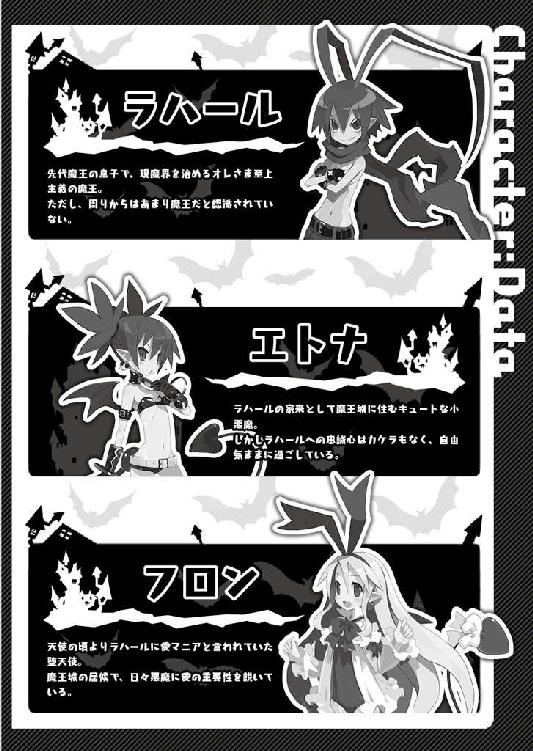
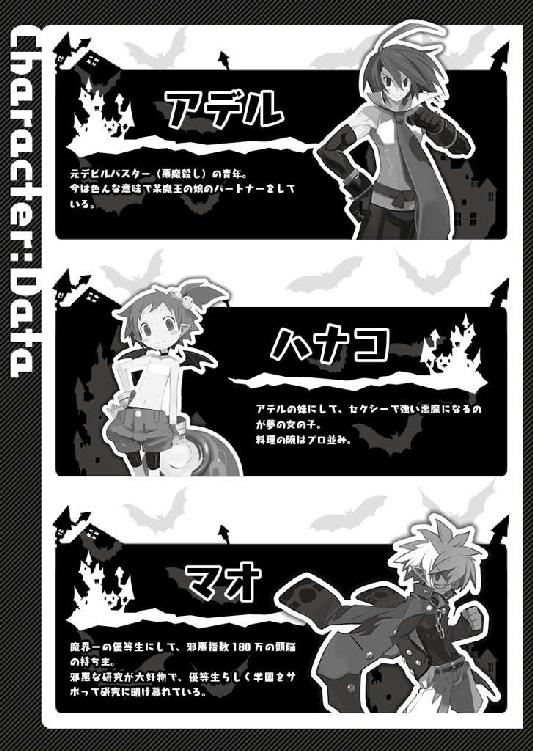
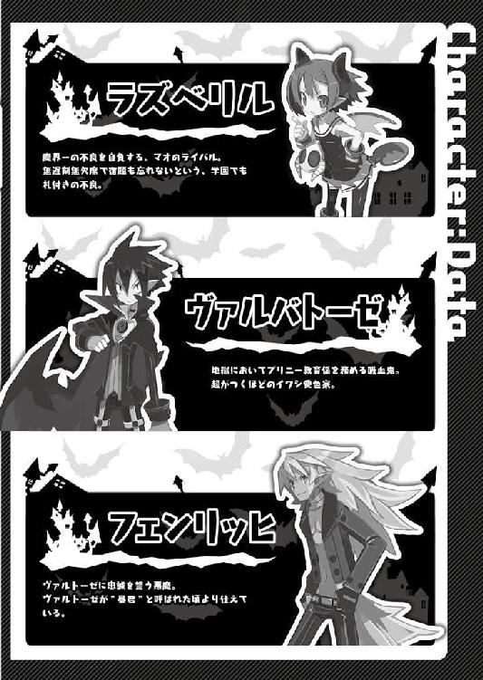
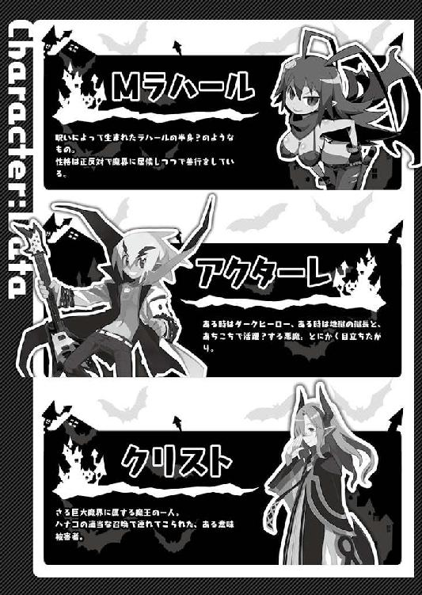
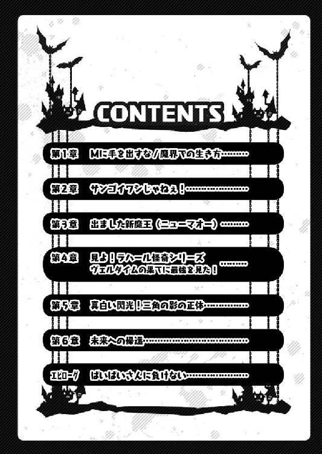
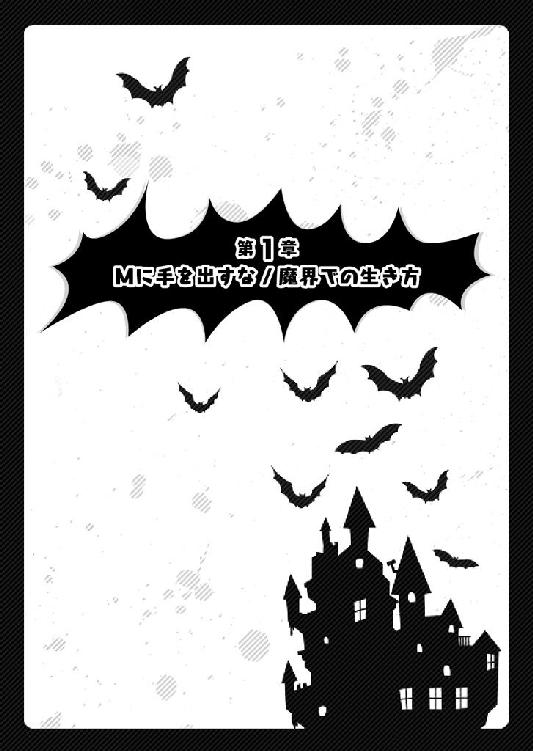
魔王城付近に広がる平原に、大急ぎで下級悪魔たちが集まってくる。手に手にビニールシートや食べ物を用意して、もっともいい角度から魔王城が見える場所に陣取るのだ。
と言うのも、さきほど魔王城の最上階からドタバタと騒ぎが聞こえたからである。
手に手に殺ポロビールの缶を掲げ持って、下級悪魔たちはいそいそと集まってくる。もう、間もなくいつものアレがあるはずだ。
そして。
「なっ......ぬァんだこれはァーーッ！！？」
魔王玉の大爆発が閃光と轟音を撒き散らしながら、城の上部を吹き飛ばす。
それを眺めると悪魔たちは実に満足げに乾杯を交わし、グビグビと魔界名産ビールの喉越しを味わうのだ。本日も魔界は平和であった。
魔王城最上階、魔王ラハールの寝室は先ほどの大爆発で壁と天井の大半が吹き飛び、非常に涼やかな風が吹き抜けている。
「こ、これは......これはいったい......!!」
オレさまは恐怖していた。
この一魔界すべてを支配する恐怖の大魔王であるこのオレさまが、恐怖していたのだ。
思わず「そいつ」を鷲づかみにしようとして、数ミリ離したまま触れず、行き場の無い両の手が我知らずわなわなと震える。
「そいつ」はまるでオレさまの心中のおびえを見透かしたように不気味に蠢き、オレさまを威嚇する。
慣れない重量に、思わずよろめかずにはいられなかった。
「な、なんなのだ......何が、何が......！」
一歩、二歩、いくら後じさってもまったくの等距離で付いて来る。逃げられない。
悪魔さえ知らぬ遥かな太古に滅び去った狂気的な姿の古生物にも似た忌まわしい曲線が躍動し、声なき声で邪悪な呪詛を吐き出す。
深層心理に刻まれた本能的、生理的な恐怖と厭悪の根源から、絶対に逃れられないという絶望。決して目覚めることのできない冒涜的な悪夢が具象化しておぞましい律動を持って打ち震える。
恐怖と怒りのない交ぜになった感情に突き動かされ、オレさまはもう少しで「そいつ」に最大級の魔王玉をブチ込むところだった。
だが、それはできないのだ......。
なぜなら、「そいつ」はオレさまの体にべったりと張り付いているのだから！
「うわああぁおおォぁアアァァァーー......ッ！！？」
状況をついに理解し、オレさまは再び声を上げる。
目覚めるとオレさまの胸に、大きなムチムチがついていた!! まるであのＭラハールのもののような！
このショックで思わず魔王玉をあらぬ方角へぶっ放したのが、先ほど魔王城上部を吹き飛ばした爆発だ。
しかもその他のボディーは元のオレさまのままである。ムチムチ単体でも気持ち悪いのに、オレさまの体に大きなムチムチがついてるアンバランスさは身の毛もよだつ姿だ！
「ハァ、ハァ、ハァ......。このままにはしておけん......！」
胸元でぽよんぽよんと揺れるムチムチの不気味な感触をなんとか思考の外へと締め出しながら、オレさまはともかく歩き出した。
嫌悪感に頭の上のキューティクルがぶるぶると震える。一体、どうしてこんなことになったのだ。誰のしわざだ？
まさか、Ｍラハールの仕業なのか。ヤツは呪いによって発生したオレさまの分身、女の姿をしたムチムチの分身である。ムチムチラハール、Ｍラハールだ。
あいつならオレさまと同様の魔力を持っているはずだし、このような恐ろしいことも可能かもしれない。
「おい！ Ｍラハールはどこに行った！ これはどういうことだ!!」
大音声を張り上げて城内に呼ばわると、どこからともなくプリニーの数匹が現れた。先頭の一匹がオレさまを見るなり噴出す。
「ブーッ！ 何ッスか殿下、その格好!? キモ!!」
「キサマ！ 今キモいとか言ったな!?」
「いっ、いえ!! きも......着物が欲しいと思っただけッス！」
汗を撒き散らしながら苦しい言い訳をする。いかに奇怪な姿になっていようとも魔王に対して、キモいなどと！
「そいつは向こう三七五六四年間、食事は一日魔界わかめ二枚だ！」
「し、ししし死んじゃうッス〜！」
「うるさい、連れて行け」
使えないプリニーの一匹が、他のプリニーどもに胴上げ状態で連行されていく。オレさまはいま最高に機嫌が悪いのだ。
それより、Ｍラハールだ。
ムチムチが気持ち悪く、歩くだけで違和感がする。胸のあたりが少し変化しただけだというのに、まるで全身オレさまの体ではなくなったかのようだ。
「それで、ヤツはどこにいるのだ？」
「えっ、えっと殿下......」
「ど・こ・に・い・る・の・だ！ と聞いている」
迂闊な同僚の末路に怯えたプリニーがプルプルと震えながら答える。
「え、Ｍラハール様は、現在お留守ッス......！」
「なんだと！」
「それより、殿下の体がＭラハール様に......！」
ヤツめ、またあの魔時次元空間界移動リングを使ってどこぞの世界へと善行しに行ったに違いない。じっとしてろと何度言いつけても、ヤツはちょいちょい勝手に出て行ってしまうのだ。
あいつはどうも、この魔王城が自分のじっとしているべき場所とは思っていないフシがある。広く次元を渡って善行をしなければという、謎の使命感に突き動かされているのだ。
もっとも、オレさまとてこの魔界一つに収まっているべき存在ではなく、やがてはこの世の全魔界へと進出し、すべての悪魔の頂点、いや神よりも上の頂点の頂点に立つべき存在だとは考えているが。
そういう所だけオレさまの分身らしいのか。困ったことだ。
分身であるＭラハールが誕生したときに生じたもう一つの魔時次元空間界移動リングは、本来取り上げてしっかりと死紋認証つきでロックされた引き出しに保管してあるのだが、なにしろヤツもオレさまと同じラハールなのでその他さまざまな封印も含めて意味がない。
見張りを立たせておいても、下級悪魔どもはみなＭラハールの言うことならなんでも聞いてしまう。
「しかし、Ｍラハールが居ないということはヤツの仕業ではないのか。とすると一体......うおっ！」
思案に腕組みしようとすると、ムチムチがオレさまの腕を邪魔する。ぶよぶよした肉の中に一瞬、腕が沈み込んでしまったではないか！
なんだか体も筋肉がふよふよと柔らかくなり、どうしたことか身長が高くなったような気もするではないか。身長が伸びるのは構わんが、体全体の違和感は耐え難いまでになっている。
もしかしてオレさまは、Ｍラハールそのものになり掛けているのではないのか!!
このままでは魔王ラハール様の破滅だ！ ムチムチを、ムチムチさえなんとかすれば、助かるに違いない！
こうなれば悪魔らしく、邪魔っけなムチムチなど力づくで引きちぎってくれる！
オレさまは気合を入れ、勢い良くムンズと自分のムチムチを鷲づかみにする。
その瞬間、手に平にムチムチのムチムチなムチムチ感触が伝わり、あまりの気持ち悪さにつま先から頭のてっぺんまでブルルっと震えが駆け上がった。
「ッくあァえあァーーーーーッ！！！！」
言葉にならない叫び声を揚げて、オレさまはどっかんどっかんと四方八方に魔王玉を投げまくる。
魔王城の上部三割ほどが無くなりそうになっていたが、知ったことではない！
「この、これ、こォ、もあァーーッ!!」
このままではオレさまはムチムチに殺されてしまう。まさに獅子身中の虫！ 自分自身の体の一部という恐ろしい敵を前にしてなすすべなくもがき、暴れるしかない。
そんなオレさまの苦境の只中に、タイミング良く魔王玉の合間を縫って現れたのはいつもの二人。エトナとフロンだった。
「なんです朝っぱらから？ やけに元気ですねー殿下......って、ほんとに殿下ですか？」
「ラハールさんですよ！ 朝の運動は健康にいいって言いますよね。魔界体操第一とか作りませんか、ラハールさん」
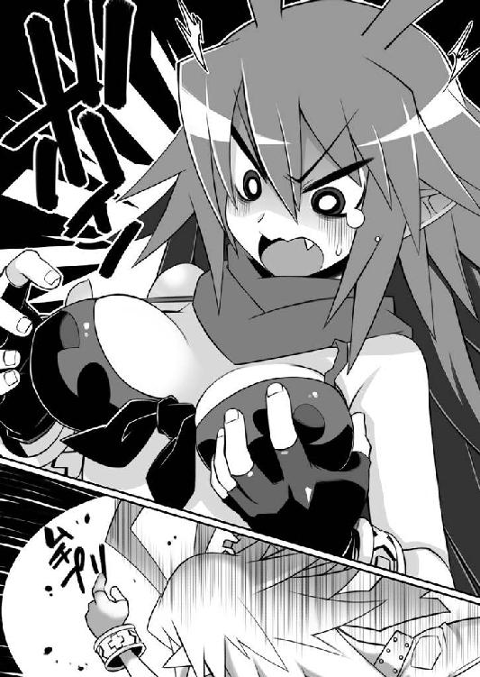
何が元気だ！ どこが健康だ！
「お前ら状況を見ろ！ これ！ この！ これ!!」
のん気な口調の二人に、両胸を指差してオレさまは危機的状況をアピールする。こんなに大きな気持ちの悪いムチムチが目に入らないのか、こいつらは。
「あー、なんか腫れてますねー。まぁ落ち着いてください殿下」
「そうですそうです。これ以上暴れるとお城が無くなっちゃいますよ」
全身でデンジャー事態を表現するオレさまに対して、相変わらず二人はやけに落ち着いた態度だ。さらに二人、すっと目を細めて視線を交わしたような気がする。
「まさか、お前たち......！」
ある可能性に思い当たり、警戒に一歩退く。
「なんです？ ラハールさん？」
「どうしました、殿下？」
二人は口元に笑みを浮かべるが、明らかに目は笑っていない。ドラゴンの炎すら凍るという、氷結地獄の最下層より冷たい目だ。
「もしかしてオレさまのこの惨状、キサマらがやったのかっ!?」
両手で同時にビシリと指差すと、二人は口元に手を当て、身をのけぞらせて笑う。二人のしっぽが同じリズムでくねくねと波打っていた。
「おほほほほ」
「おほほほ」
「何がおかしい！」
すると、ケロリと笑いを止めたエトナがさも当たり前という顔で答えた。
「何言ってるんですか殿下。そんなムチムチになる手段があるなら自分たちにやってますよ。ねぇ、フロンちゃん」
「そうですよラハールさん！ ムチムチといったら喉から手が出てロケットぱんちするほど欲しいものなんですから」
エトナの主張にフロンも腕組みして何度も何度も頷いた。
たしかに、もっともな話である。ムチムチ女ばかりを揃えた敵と戦ったときの、こいつらの暴れっぷりは凄まじかった。
「とするとこれはいったい......？」
Ｍラハールでもない、エトナとフロンでもないとなると、この事態はどうして引き起こされたのか。
思い悩むオレさまを呼ぶものがあった。
「ラハール殿下！ 殿下はどこッスか、お手紙ッス！」
「見てわからんか、オレさまはここだ！」
さっきのとは違うプリニーのようだ。
「んん、手紙だと？」
この忙しいときにと思いつつも、一応プリニーを振り返る。その拍子に胸のムチムチが勢い良く揺れた。
「ブーーッ！ 何ッスかその胸、キモ!!」
「キ・サ・マ......!!」
またしてもプリニーめ、このオレさまに対して!!
ふと目線が低いのに気づき、確認してみればオレさまの身長や筋肉は元のオレさまへと戻っていた。体が不安定になっているのか。
たしかにオレさまの体にムチムチだけがついているというのは、相当気持ち悪い。だが、それはそれとしてだ。
「今日の朝メシはプリニーのミンチだ」
「ひぃっ!? ち、違うッス！ き、きも、肝吸いが飲みたいなと......!!」
「うるさい」
掲げた片手に邪悪な魔力を蓄える。こいつはカタクリ粉よりも細かく粉砕してやろう。
さて......。
「おっ、おや」
と、唐突にオレさまはバランスを崩してたたらを踏む。どうしたことだ？ 体の異常の次は、めまいか？
疑問の答えは、オレさまが再び思案するより早く明らかになった。胸のムチムチが、引っ込んだのだ！ 先ほどのふらつきは、重量のあるムチムチが急に消えたせいのようだ。
「おおおお！ 戻った、戻ったぞ！」
どうしていきなり戻ったのかはわからんが、あの忌々しいムチムチが消えてくれたならそれでいい。
「ふう。どうやら戻ったようですね、殿下」
「よかったですねー。どーんと胸が大きくなったのもビックリですけど、しばらくすると勝手に消えちゃうのもビックリです」
のん気な二人組もオレさまの体が戻ったことで安堵のため息をついた。少々、反応が鈍い気もするが、大方、自分たちが二人そろって断崖絶壁ボディーなのに男のオレさまがあんな体になったのが妬ましかったのであろう。
ムチムチなど何がいいのかサッパリわからんがな！
悪魔は一日一悪と昔から言うものだ。やはりオレさまは日ごろの行いが悪いから、こうしてわけのわからん事態もいい感じに治ってくれるのだろう。
「とにかく良し、だ。ハァ〜ッハッハッハ......！」
気持ちよく高笑いをキメたところで、先ほどブッ潰しかけたプリニーに注意を戻す。たしか、手紙とか言っていたな。
「おい、さっきの失言は見逃してやるから手紙とやらを見せろ」
「はっ！ こちらッス！」
すぐさまプリニーは封筒を差し出してくる。こいつ、やけに動作がキビキビしている。さては地獄産のプリニーか。
潰さなくてよかった。あのイワシ野郎はプリニーなんぞを大事にしているので、文句を言われるかもしれない。
つまらなさそうにプリニーから受け取ると、鋭く尖らせた悪魔の爪で封を切る。
「とすると、今時珍しいこの手書きの手紙はヴァルバトーゼからのものか」
この前の、何にでも白黒をつけたがるおかしな魔王をシメてやった事件のあと、一応、非常時の連絡用に時空ゲートを事件に関わった連中のいる各魔界へと繋げて置いたのだ。
もちろん誰でも出入り自由というわけではない。悪魔などいつ裏切るかわからないものなので、直接話して声だけ送ったり、プリニー程度の魔力の低いザコ悪魔だけが通れたりできる連絡専用のゲートだ。
ハナコやラズベリルなどは、時々用も無く連絡を寄越したりするが、ヴァルバトーゼはそういう無駄なことをする男ではない。
すると、何らかの重大事が起こったいうことか？
興味を惹かれて、しっぽを振り振りエトナとフロンも手紙を覗き込んでくる。
「手書きなんて相変わらず古風ですねー。冥ールで済ませりゃいいのに」
「手書きの手紙も良いものですよ。その人の字からは心が伝わりますから」
まず、一枚目はイワシの魚拓だった。
捨てる。
「さて本題は......なんだ」
拝啓、魔王ラハール殿と時候の挨拶から始まる部分を読み飛ばし、内容を流し読みしてみると、そこには奇妙なことが書かれていた。
「ラハールさん、何が書いてあったんです？ 地獄盆踊り大会の招待状ですか？」
「いや、オレさまたちの過去の写真が地獄で見つかったから、同封する。まずはそれを見ろと」
首を傾げつつも封筒の中を確認すれば、果たして一枚の写真が見つかった。
オレさまたちが地獄を訪れたのは、この間の事件の際が初めてだ。どうしてこのようなものが地獄にあるのか。
「なんかヘンな写真ですね、殿下。コラですかね？」
「ヤツがそんな手の込んだジョークをやると思うか？」
言ったエトナもヴァルバトーゼの冗談などとは思っていないようで、まじまじと写真を見つめていた。
写真に写っているのはただの過去のオレさまたちではない。
写した場所はこの魔王城のようだが、写真越しにも伝わる魔力のパワーアップ感、それにオレさまの身長、今のオレさまたちより写真の中の三人は確実に成長しているではないか。後ろに写っているフロンのヒーローグッズ類も今より確実に多い。
事件のあとに行われた戦勝祝賀会での会話で、天体の運行などからヴァルバトーゼたちのいる地獄はオレさまたちの魔界とは時間軸上のズレがあり、やや未来に位置していることは確認している。
とするとこれは未来？ と思うも、写真には過去の日付が記されている。
「ふむ......」
意味がわからず、手紙の二枚目を読むと写真についての補足が記されていた。
プリニー写真鑑定チームにも調べさせたが、この写真は本物であること。それからこの写真は間違いなく過去に撮られたものであること。さらに写真に写っているのはやはりオレさまたちの未来の姿のようであること。
「未来なのに過去で、過去なのに未来？ どういうことですか、ラハールさん」
「わからん。考えられるとすれば......」
「いつのまにか歴史の流れが変わっているとかですか？」
と、言う可能性に思い当たる。
つまり本来、オレさまたちはこの写真の日付で、写っている通りにパワーアップしフロンのコレクションが増えているはずだったのに、なんらかの影響で時間の流れが変わって今のオレさまたちがいる、違う現在に繋がってしまっている、ということ......。
「くそっ、さっきのオレさまの体の異変もこれが原因か！」
「あー、えー、そうですねー。きっとムチムチもこれのせいですねー」
「げ、原因がわかって良かったですね、ラハールさん！」
「良くないっ！」
手紙を床へと叩きつけ、この理不尽に怒る。パワーアップしそこねた上にムチムチに見舞われるなど！
なぜか二人は目をそらしてしっぽをくねくねさせたが、オレさまの注意は怪現象へと向いている。
Ｍラハールを追いかけるために、魔時次元空間界移動リングで時空間をやたらめったらと飛び回ったせいでこんなことになったのか！ なんという災難だ！
キューティクルの間からぷんぷんと怒りを噴出していたオレさまは、しかしふとそうではないことを思い出す。
「......妙だな。リングで大きく過去を変えることはできないはずだ。これを作らせた人間の科学者どももそう言っていたぞ」
「ふむ。ですよね。そんなことできるんなら、こないだのゼブラだかパンダだかって魔王も、ずっと過去のまだ小さいあたしたちを始末すれば勝てたはずですしね」
「わたしもマンガで読みました！ のび犬くんが誰と結婚しても孫にはゼワシくんが生まれるって」
フロンの例えはわからんが、歴史というのは存外強固な存在で過去の行いでそうそう流れは変わらないものなのだ。
たとえばフロンが一つ限定グッズを買い逃しても、すぐ後日に予定外のタイミングでグッズが手に入り、最終的には同じコレクションが並ぶことになる。
多少の流れは変わっても、たどり着くところはあまり変わらないというのが歴史だ。
「でも、じゃあどうしてこんな事になっちゃったんですか？」
「それもわからん。わからんが......何か非常に特殊、強力な力で干渉が行われたなら、歴史が変わることもありうる」
どのような力でなら歴史を揺るがせるのかは検討もつかないが。
「でないと、『未来はオレたちで切り開くんだ！』みたいな人間の勇者理論が通らないですからねー」
「そういうの叩き潰すのが魔王の仕事だからな。何にせよ、調べてみる必要があるぞ」
極悪非道の悪魔が跋扈する魔界では厄介な事件は日常茶飯事ではあるが、これはまたややこしい事態に繋がっていそうだ。
「犯人を見つけ出して、叩き潰すんですか？」
「そういうことだ。オレさまにおぞましいムチムチをくっ付けた報いを受けさせてやる！」
「そーそー、そーですねー。歴史に干渉してるやつが犯人に違いないですから、有無を言わさずやっつけちゃいましょ、殿下」
と、グルグルとオレさまの腹の虫がうなり声を上げる。そういえば、朝の食事がまだだった。
ハナコがヴェルダイムに帰ってからまたプリニーの作るマズイ飯しか食えないのは残念だが、朝を喰わないことにはいまいち力が出ない。
キューティクルをしっかりと立てて、マントを翻す。ここで一ついつものをやって、気合を入れておこう。
「よし、腹が減っては世界征服はできぬと昔から言う。朝メシを喰ったら、また移動リングを使って犯人をボコボコにしに行くぞ！ ハァ〜ッハッハッハ......！」
魔王の象徴たる高笑いを決めると、オレさまは虚空に向けてまだ見ぬ犯人を指差し、ニヤリと笑った。
かくて、オレさまたちはこの奇怪な事件の調査に乗り出したのである。
幕魔１．反乱 ─リボルト─
ファミ魔で買い溜めして置いたカップメンでしょぼい朝食を済ませたあと、わたしたちはすぐさま自室へと引っ込みました。ラハールさんは朝の高笑い三〇連発をやっている最中なので、気に留める様子もありません。
部屋の照明は敢えて点けず、手近なジオシンボルをテーブルに置き、ロウソクを立てて火を灯しました。
ゆらめく炎が壁一面のお花とぬいぐるみとヒーローグッズ、テーブルの上の食べかけのお菓子と紙コップなどを照らし出します。とっても怪しい雰囲気です。
「フロンちゃん、なんで明かりつけないの」
「こういうのは雰囲気が大事ですから！」
ふーん、と興味なさげなエトナさんですが、それとなく部屋の外の物音に聞き耳を立てて近づくものが無いか確認しています。さすがは陰謀のプロ！ という感じで感心してしまいました。
「それにしてもややこしいことになっちゃいましたね」
「どうかな。状況をうまく利用すれば、こっちに有利にコトを運べるかもよ？」
流し目でわたしを見ながら、エトナさんが口の端をニィと吊り上げます。
エトナさんの言う通りかもしれません。ここは、慎重に動いたほうがいいでしょう。
「とりあえず、連絡を取りますね」
テーブルの紙コップは一見するとただのジュース用の紙コップですが、実はそうではありません。
すいと持ち上げれば紙コップの底からは一本の糸が繋がっており、それは壁に空けられた小さな穴を通って部屋の外へまで延びています。
わたしは糸を引いてピンと張ると、紙コップに話しかけました。
「あー、もしもし、もしもし。こちらコードネームＦとＥ。応答をどーぞ」
糸はわたしの部屋を出て魔王城の倉庫内を横切り、さらに倉庫の壁の穴から他の魔界への連絡用ゲートへまで繋がっています。
そうなのです！ これは巧妙にただの紙コップに見せかけた、ひみつ連絡用の魔界糸でんわなのです！
「コードネーム別にいらなくない？」
「こういうのは雰囲気が大事ですから!! ぜったい要るんです！」
何度か呼びかけると、応答がありました。
『はいはい、こちらラズ......』
「違います！ コードネームＲです！」
『......はいはい、こちらコードネームＲだよ』
雰囲気が大事ですから！
「コードネームＭの状況はどうですか？」
『マ......コードネームＭは研究は順調って言ってるけど、いつも順調としか言わないからアタイにはわかんないな。ま、あいつはＭラハ......Ｍが二人いるときはなんて呼ぶんだい？』
「Ｍラ......コードネームＭ２とでも呼んで下さい」
わたしたちはこうして密かに別魔界と連絡を取り合い、秘密裏に研究と実験を行っているのです。
この研究には双方におトクな利益があって、あちらは貴重なデータが手に入るし、こちらは研究が実を結んだ暁には研究の成果品が貰えることになっているのです。
わたしとエトナさんにとって、すばらしいまさに夢のようなアイテムなのです！
『わかった。あいつはＭ２を調べて魔王が増える原理を必ず解明するって言ってたし、あいつは不良だけどやる時はやるオトコだから大丈夫さ』
聞いたところでは、コードネームＭさんは魔王を量産するつもりらしいです。なんでそんなことするんでしょうね？ お友達にするんでしょうか。
『そっちの実験はどうだったんだい？』
「一応の反応はありましたけど、やっぱり不安定みたいです」
この研究は、なにしろ今まで天界でも魔界でも人間界でも誰も為し得たことのないとにかくすごい研究なんです。だから魔界同士の協力が必要というわけなのです。二つの魔界が協力して成し遂げる未曾有の偉業！ わくわくしますね！
思わず拳を握ってプルプルしていると、エトナさんがしっぽでわたしのおしりのあたりをつんつんしました。
「フロンちゃん、そろそろ例の件の話を」
そうでした。エトナさんに促されて、本題を思い出します。
「コードネームＲさん、ちょっと今こっちで複雑な問題が出て、コードネームＬさんと一緒にわたしたちはまたいろんな次元と時間を旅することになったんです」
横からエトナさんが顔を寄せてきて、わたしの言葉を補ってくれます。
「そっちの邪悪学園にもたぶん行くと思うから、そうなると殿下にあたしたちの繋がりがバレるかもって事態なのよ。だから殿下と会ったらうまく話を合わせて欲しいんだけど」
『なんだって。そいつはマズイじゃないか。ラハ......コードネームＬはアタイたちのやってることを知ったら、絶対阻止しようとするだろ？』
Ｌさんさんはきっと、このことを知れば全力をもってわたしたちの計画を潰そうとするに違いないです。だから、ここで計画を知られるわけにはいかないのです。
天使として隠し事はイケナイことだと思いますけれど、今回ばかりは計画のほうが優先です。Ｌさんだってよくわたしたちにナイショでおやつを食べてるので、おあいこです！
「とりあえず移動したらこの魔界糸でんわも使えないから、合流しましょ。ホラ、なんかこういい感じに偶然を装って」
さすがは嘘つきのプロのエトナさん、名案です。Ｒさんと合流すれば話を合わせるのもやりやすくなりますし、いろんな次元を旅行するのに友達が一緒のほうが楽しいです！
『参ったな、アタイは嘘がニガテなんだけどなぁ......。うん、わかった。なんとかさりげなく合流してみるよ』
「おみやげは邪悪学園購買の、焼き尽くしそばパンでお願いします！」
せっかく一緒におでかけなので、わたしも何かお菓子を用意して行こうと思います。おやつは三〇〇ヘルまで。お菓子についてるヘルマークは、Ｒさんにあげましょう。
『それじゃ、また後で』
「はい」
Ｌさんは結構ニブいので、きっとバレないはずです。密かにわたしたちは目的を達成して、栄光の未来を掴み取るのです！
「すべてはわたしたちの理想のために」
「すべてはあたしたちの理想のために」
『すべてはアタイたちの理想のために』
わたしたちの結束を確認するための言葉を交わしてから、通話を終えてわたしは紙コップをテーブルに戻しました。
「行くわよ、フロンちゃん」
「はい、エトナさん」
共通の目的のために結んだ結束は、血よりもなお濃い繋がりです。もはやわたしたち三人は魂の姉妹でした。
リングによって開いたゲートを通り抜けると、鉄と溶岩の光景が目に入る。ここは最下層に位置する魔界、地獄。
オレさまたちは侘しい朝食のあと各自準備を整えると、まずは詳しい話を聞くために地獄へと赴いたのだ。
地獄産の連絡用プリニーを先行させていたおかげで、すでに地獄の連中はオレさまたちを待っていた。前回の立ち話と違い、テーブルと椅子が用意されておりちょっとした茶会のような準備もなされている。
これならカップメンなど喰わずにこいつらに作らせたメシを山ほど喰ってやればよかったぞ。
テーブルの上座にはヴァルバトーゼ、その左右には天使と狼男が座に着いていた。
「待っていたぞ、ラハール」
「うむ。このような支度までしているとは、気が効くではないか。ヴァルバトーゼ」
「客人を持て成すのは主人の勤めだからな。まずは、かけるがよい」
ヴァルバトーゼが片手で着席を促すと、すかさずオレさまたち一人ひとりの背後にプリニーがやってきて、すっと椅子を引いた。
「どうぞッス」
「相変わらずここのプリニーはプリニーとは思えん有能さだな」
「どうもですー」
フロンがプリニーに頭を下げ、席につく。オレさまたちが全員着席すると、給仕役のプリニーはすばやく目立たぬところに下がっていった。
「すごいわねー。プリニーなんて使えないボンクラばっかだと思ってたけど」
「フン、閣下の優れた指導あらば当然のことだ」
エトナの感想に、フェンリッヒが不満げな顔で答える。こいつは大方、オレさまたちがヴァルバトーゼに関わるのが面白くないのだろう。
「お久しぶりです、アルティナさん。お変わりありませんか？」
「ええ、お陰さまで。お久しぶりですわフロンさん」
アルティナとフロンが礼を交わす。
そういえばフロンは魔界に初めて来たとき、大天使から貰ったペンダントがないと魔界では長く生きられないと言っていたが、オレさまの魔界よりも瘴気の濃い地獄でもこいつは平気なのか。天使見習いではない正式な天使となると、瘴気への耐性も高いのかもしれない。
「それで、この写真は一体なんなのだ」
オレさまは携えた写真をテーブルにぴらりと置いた。
「件の写真についての話の前に、まずは」
ヴァルバトーゼがパチンと指を鳴らすと、先ほどの給仕プリニーたちが再びやってきて、オレさまたちの前のワイングラスを並べていく。
中に注がれて......入っているのは、小魚だった。
「......なんだこれは」
「イワシだが？」
やっぱりというかなんと言うか。しかも生。せめて調理しろ。
プリニーと魚喰鬼のこいつはいいとして、ここの面子はみんな生イワシだけ食べて生活しているのか？ カップメンを食べてきて正解だったようだ。
「乾杯」
ヴァルバトーゼがイワシの入ったグラスを掲げるので、しぶしぶオレさまたちも合わせてグラスを掲げる。
「か、かんぱい......」
チン、と乾杯を交わすとヴァルバトーゼはグラス内のイワシに頭からかぶり付いたが、オレさまたち三人はさりげない仕草でグラスを遠ざけておいた。
よく見るとアルティナも口をつけるフリだけしてイワシグラスを遠ざけている。フェンリッヒは忠臣（？）らしく主人に合わせてどうにか一口食べたが、どんなに頑張っても味のしない生イワシのマズさを表情から消しきれて居ない。
どうやらヴァルバトーゼ以外は普段は普通の食事を食べているようだ。なぜかオレさまはすごく安心してしまった。
イワシ喰えと薦められてはたまらないので、さっそく本題を切り出すことにする。
「ではあの写真のことだが、オレさまたちの時間の流れがおかしくなっているというのは本当なのか？」
イワシを食べ終えたヴァルバトーゼは上品な手つきでナフキンで口元をぬぐうと、こちらを見据えて深く頷く。
「すでに、プリニー隊に命じてお前たちの本来の『現在』を調べさせた。フェンリッヒよ、調査結果を」
「畏まりました。閣下」
フェンリッヒはこちらへの態度と打って変わって慇懃な仕草で、立ち上がってヴァルバトーゼに一礼すると調査報告を話し始める。
ヴァルバトーゼのほうを向いてる間だけ、ぶんぶんと激しくしっぽも振っていた。犬かこいつは。
「これらは一部信じがたい話もあるが、無数のプリニーによって裏付けの取れた調査結果だ」
話の内容は、驚くべきものだった。
最初にフェンリッヒはフロンに視線を向ける。
「まず天使フロン。お前は天界に復帰し、さらに一時的に覚醒天使と呼ばれる特別な姿への転身能力を所有し、次期天使長とも目されているらしい」
「に、二段変身ですか!? 遂にわたしがひそかに考えておいた強化形態の名前を使うときが来てしまったようです......！ キメポーズも急いで考えないといけないですね！」
聞いたフロンは思わず飛び上がり、そんなフロンを見てアルティナは薄く微笑む。
「フロンさんはやっぱり、あの天使長さまなのかも知れませんわね」
天界への復帰はともかく、フロンがパワーアップして次期天使長だと？ うーん、どうにもうさん臭いが、これはヴァルバトーゼの調査結果だ。全部聞いてみようではないか。
エトナのほうに向き直ると、フェンリッヒは続けた。
「次に悪魔エトナ。お前は悪魔として着実に力を付け、魔神へのステップアップを進めているらしい。得られた情報ではすでに下級の魔神に匹敵する格は得ていたという」
「そうよね、やっぱあたしはデキる女だから。成長して当然、出世は当たり前。当然、その頃には体もこうぼーん！ ばーん！ とセクシーが爆発してるはず」
エトナはフロンと違って余裕ぶっては居たが、ぱたぱたと忙しなく動く羽に興奮が見て取れる。
「報告によると、バストは一ミリたりとも成長していないそうだ」
「......はー......。一気に調査の信憑性が薄れたわね。はい次、殿下どうぞ」
フロンが天使長、エトナが魔神とこいつらがそんなにパワーアップするのなら、オレさまはどれだけ凄いことになっているのだ？ いやが上にも期待は高まる。
「オレさまの本来はどうだ？ さぞかし凄まじい大魔王となっているのだろうな？」
話の続きを急かすオレさまの言葉に面倒そうに反応して、フェンリッヒはオレさまのほうに視線を向けた。
「たしかにこれは信じがたい結果だ。ラハールは高位魔王の中でも最上位クラスの相当な力を付けたばかりでなく、ある事件において自分の治める魔界消滅の危機を救い、救国の英雄魔王として認められたらしい」
「なっ、なに!? オレさまが英雄だと!?」
え、えいゆう......。
魔王が世界を救ってどうするのだ。魔王が世界に対してやることと言ったら、滅ぼすか征服するかが筋ではないか。
「すごいですね、ラハールさん！ 英雄なんて！ 愛は魔界を救うんですねっ」
「う、うむ」
「殿下が救国の英雄ねぇ......？」
とは言うものの、魔界を最大の危機から救って偉大な魔王として認められるというのはなかなか悪くない気分だ。高位魔王の中でも最上位クラスというのもいい。
この調査結果は本当に違いないな！
「なるほどな。オレさまが凄くて強くてカッコイイのはよく分かった。これは本格的に歴史が歪んだ理由を調べて、本来の無敵の最凶大々々魔王ラハール様に戻らねばならん。原因についての手がかりはないのか？」
尋ねるオレさまを、フェンリッヒが遮る。
「待て、まだある」
「ん？ プリニーどもやコゼニスキーの本来などどうでもいいので報告は要らんぞ」
「家臣の話ではない。聞いておいたほうがいい、ラハール」
しかしヴァルバトーゼもオレさまに続きを聞くように言う。すぐさまにでも原因を調べて大パワーアップをしたいのに、オレさまを焦らすつもりか。
「ラハール、お前には妹がいるらしい」
フェンリッヒが、あくまで平静な口調でとんでもないことを言い出した。
「なにっ?! 妹だと！」
「殿下に妹ー？ いやいや、殿下に兄弟姉妹なんていないって。妹なんて居るわけないし。はー、やっぱ信憑性ないわ。ぜったい間違ってるこの調査結果。はー」
「そうだ！ 妹などいらんぞ!?」
オレさまがまだ小さい頃に母はこの世を去った。妹など生まれる余地があるはずもないのだ。
如何に幼かったとはいえ、自分に姉妹が居たかどうかを忘れるほどに自分が迂闊であるとも思えない。妹の存在などありえない。
「それだけではない。オレにもどういう事か理解できないんだが、お前の妹は混血ですらない純粋な天使だそうだ」
「は？ 魔王であるオレさまの妹が天使だと？ そんなことを本気で信じているのか」
何を言い出すかと思えば、荒唐無稽なことを言い出した。
「不思議なお話ですわよね」
「はい。でもラハールさんの妹で、しかも天使だなんて会って見たいです」
天使と元天使だけが存在するのかわからない妹に希望を寄せる。
ただ妹が居るというだけの話であれば、オヤジの隠し子とも考えられないではない。あのオヤジにそんなことができるとも思えないが。一応考えられないではない。
だが、純粋な天使が魔王から生まれるなど物理的にありえない話だ。
「だからオレにも分からないと言った。だが、ヴァルバトーゼ様が自ら指揮して調査した結果だからな。それは絶対の信用に値する」
「そうですね、閣下！」
しっぽを振り回しながらフェンリッヒはヴァルバトーゼに熱く問い掛ける。こいつ本当に大丈夫か。
「俺はプリニーたちを信頼している。どのような要因で魔王から純粋な天使が生まれ得るのかはわからないが、少なくともプリニーたちの調査結果はでたらめでも嘘でも無いはずだ」
何を言われても、到底信用するのはムリな話だ。大方、フロンの元同僚の誰かを勘違いしたのではないか。
あいつの同僚なら、オレさまの妹と勘違いされるような奇行を行うものが居てもおかしくなかろう。
「最後にエトナ、お前の──」
「いや、その話はする必要ないだろう。フェンリッヒ」
語られかけた言葉をヴァルバトーゼが遮る。エトナに、何があるのか。
「あたしが何？ やっぱりセクシーぼでぃーになるの？」
「それはない」
フェンリッヒに掴み掛かりかけたエトナを制して、ヴァルバトーゼは静かに言う。
「なに、たいした話ではないのだ。それに問題が解決して本来の歴史に戻ればそれはおのずと分かること」
「未来を知ってしまうとつまらないものですわ」
「......納得いかないけど」
口を尖らせたまま、エトナは渋々と席に戻った。
気には掛かるが、そもそもこの話自体がうさん臭いのだ。どうでも良いことかもしれない。
「おい、ヴァルバトーゼよ。本当に歴史は変わっているのか？」
そこから疑いたくなってくる。根本が間違っていれば、本来の『現在』を聞くこともその原因を探ることも、犯人探しもすべて無駄になるのだから。
「間違いない。俺もサンゴイワシがハダカイワシ目の何イワシ科だったかどうしても思い出せないのだ！ ありえるか、そんなことが！」
いやいや、ただのド忘れじゃないのか。
「お前たちもためしに身近な人物の名前を思い出してみるといい。歴史の歪みで記憶が混濁しているのがわかるはずだ」
そんなばかな。
思い出してみるだけなら簡単だ。コゼニスキーのことはさっきも思い出したし、地球勇者のゴードンとムチムチのジェニファー、ポンコツロボのサーズデイなんかも覚えている。
この通り何も記憶におかしなところはないではないか。
ところが、オレさまは一つの名前がどうもあやふやで思い出せないことに気づく。オレさまのオヤジは......何という魔王だったか？
「お、おいエトナ。オレさまのオヤジの名前を覚えているか？ ク、クリ......クリームチーズコイ？」
不安げに尋ねると、エトナは心底バカにしたような顔で笑う。
「あはは、何言ってるんですか殿下。いくら抜けてる殿下でもクリ......あれ、クリ......、クリ......クリティカルヒットコイ様......？ あれ？」
しっぽが萎れ、その顔が次第に曇っていく。
「フロンは覚えてるか？」
「うふふ、いやですねぇラハールさんもエトナさんも。わたしがバドミントン様から暗殺を命じられたのは魔王クリーニングサービスコイさんですよ」
ダメだ！ どうしても思い出せない！
オレさまたちにも記憶の異常があることを確認して、ヴァルバトーゼが頷く。
「記憶の問題だけではない。地獄そのものにも影響が出ていて、なにやら見たことの無い二挺拳銃の女がいつのまにか地獄の獄長になっているのだ」
その言葉にフェンリッヒとアルティナも同調した。
「なんだか影の薄い感じの奴だ。本来は、もっと何かこう......濃厚な奴が獄長を勤めていたはずなのだが」
「あの二挺拳銃の方も見たことあるような無いような気がするんですけどね。どなたか覚えはありません？」
「うーん......」
しばし頭をひねったが、そんな女のことは誰にも思い出すことができなかった。
歴史の歪みは深刻な事態を生じているようだ。オレさまの魔界でもそんなことが起こったらたまらない。
「そうなると、本来のオレさまたちがどうなっているのかはともかく、事件は解決せねばならんようだな。そっちの調査で原因はわかったのか？」
「いや、まだ調査中だ。何しろ歴史そのものが変わっている。手がかりは記録や写真などの僅かな手がかりしかないのでな」
どこからともなく取り出したイワシのあごを撫でつつ、ヴァルバトーゼが思案に沈む。こいつの調査網をアテにしていたので、地獄のプリニー隊でもわからないとなるとかなり厄介だ。
「いっそプリニーさんで地道な調査を行うよりも、予知や占いなどの能力を持った悪魔さんがいれば、手早く目星を付けられるのではありません？」
そこに、アルティナが一つの提案を挙げた。
「悪魔の特殊能力か。アーチャーたちには軽い予知の力があるが」
「あのぺったんこたちは風向きなんかの射撃の補佐専門ですよ、殿下」
その通りだ。他にめぼしい能力を持った悪魔はオレさまの配下にはいないはず。
「地獄にもそのような人材は今の所居ない。他から人材を呼ぶにも、どこにそのような者がいるのか」
地獄に適任の悪魔がいれば、すでに使っていたことだろう。ここにもアテになる者が居ないのはわかっていた。
「はっ、それですよラハールさん！」
唐突にフロンが立ち上がり、テーブルをばんと叩く。何事かと全員の注目が集まった。
「ハナコさんの家が召喚師の家系だと聞いたことがあります。イイ感じの能力を持った悪魔さんを呼んで貰いましょう！ ついでにハナコさんにお昼ごはんを作ってもらいましょう！」
「なるほど！ フロンのくせにやるではないか！」
しっぽをふりふり、フロンが真上を向くくらい胸を張った。
「いや〜、これでもわたし次期天使長ですからね。えっへん！」
「あたしはちょっと信用できないんだけどなぁ、そのあたり」
名案であることは間違いない。フロンは調子に乗らせておこう。
あのヴェルダイムの女魔王ロザリンドを召喚したのもハナコの母だと言う。ハナコの母はすでに人間に戻ったためにたいした魔力は無かろうが、ハナコなら十分に力はあるはずだ。
「よし。では次はヴェルダイムに向かうぞ。便利悪魔の便利能力で一気に事件を解決し、ついでにハナコにまた戦勝祝賀会のご馳走をつくらせるのだ！ ハァ〜ッハッハッハ......！」
目標が決まればここにじっとしている必要はない。オレさまたちは揃ってすっくと席を立つ。
合わせて、ヴァルバトーゼも立ち上がった。同行するつもりか。狼男が文句を言うぞ、ぜったい。
「来るのか？」
「うむ。サンゴイワシのことを思い出さねばならんからな！」
「またですかヴァル様！ イワシのことなどそれこそプリニーに調べさせれば良いではないですか！」
案の定、立ち上がって文句を言ってきた。まあそうなるだろう。
「それでは駄目なのだ。フェンリッヒよ......。一度忘却し、調べて再び学習しなおす......それではイワシへの想いがあまりに薄い......！ それでは駄目なのだ......譲れない部分なのだ！ わかるだろうフェンリッヒ!?」
「わかりません」
キッパリとした返答だった。
オレさまにもわからんが、こいつが一度言ったら譲らないタイプなのはわかる。フェンリッヒはヴァルバトーゼに心酔してるクセにそこがわからんのか。
それとも、そこがヤツにとって分かっていても譲れない部分なのか。
「俺は行く。イワシへの、愛のために」
「熱烈ですわね、吸血鬼さん。魚相手に嫉妬してしまいそうですわ」
アルティナの言ったこちらは冗談らしい。
「それではわたしも同行しましょう。ヴァルバトーゼ様」
「それはダメだ、お前は残れ。人事が異常を来し、まだ他にもどんな異常や混乱があるかわからない現状。お前まで抜けては地獄の秩序の支障が出る。お前を実力を知っているからこそ、残れと言っているのだ。フェンリッヒよ」
そういえばオレさまは魔王城はザコ悪魔だけのカラッポにして出て来たが、良かったのか？ まぁ、どうにかなるか。
「それは......勿体無いお言葉です。ですが、地獄にはエミーゼルや小娘どももいるではないですか」
「アルティナはともかく、他の連中でもしもの事態を収められると思うか」
「思いません」
なおもフェンリッヒはぶちぶちと何かを言っていたが、やがてどうにもならない事を悟ったようで、しおしおと元通り椅子に座り込んだ。
「話は決まったな？ ではヴェルダイムへ、行くぞ！」
......と言った後ろで、なにやらエトナとフロンが何か目配せで会話していた。
「殿下、ちょっと先に行っといて貰えます？」
「せっかくビシっと決まったのに水を差すな。先に行くと言っても移動リングは一つしか持って来てない。一緒に来い」
「それなら、ちょっとの間でいいんでゲート開けといて下さいよ。そんなに掛からないわよね、フロンちゃん？」
「え、ええ。一〇分、一〇分くらいで」
歯切れの悪い口調だ。ヘンな奴らめ。
ムリヤリにでも二人のしっぽを引っつかんで連れて行ってやろうかとも思ったが、オレさまはいい事を思いついたのでそれは中止する。
一足先にハナコに会って、オレさまだけうまいモノを食べてやるのだ。魔王たるこのラハール様を待たせる罪深さをその身で味わうが良い！ ハァ〜ハッハッハッハッ！
「よかろう！ 特別に一〇分だけゲートを開いておいてやるから、すぐ追いかけて来い。行くぞ、ヴァルバトーゼ」
「うむ。フェンリッヒにアルティナ、あとを頼む」
魔時次元空間界リングに魔力を流し込み、虚空にゲートを開く。円形に繋がった空間の向こうには、地獄とは対照的な、ヴェルダイムの牧歌的な風景が広がっていた。
ゲートへと踏み込むときにちらりと後ろを振り返ると、エトナとフロンの二人がこそこそとどこかへ出かけていく姿が見える。
二人の後姿に、フェンリッヒが鋭い視線を送っていた。
幕魔２．哀と友情の戦線
「急ぐよ、フロンちゃん！」
「はい！」
狼男と天使から見えないところまで来ると、あたしたちは猛烈な勢いで走り出した。何しろ一〇分間しか猶予がない。
しかしここいらでもう一度、密談をしておいたほうがいいとあたしたちは考えたのだ。
汗だくになりながら目的地にたどり着くと、都合の良いことにそこにはプリニーが三匹いるだけ。取り合えず蹴っ飛ばしてどこかにやる。
「邪魔！」
「な、なんでこんな目に遭うッスか〜っ!?」
蹴り飛ばしたプリニーが遥か彼方まで転がっていったところで、ようやくあたしたちは一息つくことができた。
「ふぅ......。疲れた」
「はぁ、はぁ......二〇分って言えば良かったですね、エトナさん」
肩で息するフロンちゃんを、ごく小さなゲートから漏れる光が下から照らす。
これはうちの魔界にあったものと同じ、非常連絡用に開いて置いたゲートの一つ。ただし、これを開いたのは殿下じゃない。ゲートの向こうは魔立邪悪学園に繋がっていた。
魔界糸でんわは無いが、周りに悪魔が居なければ直接ゲートに話しても大丈夫なはず。
それにしてもあの狼男が同行しないことになったのは幸いだった。あいつからは策略家の臭いがするから。
近くにいれば、あたしたちの計画がじきに露見してしまうことだろう。アルティナをあたしたちの味方に抱き込むのもちょっと難しそうだし。
「おーい、ラズベリルちゃん。まだそっちに居るー？」
「コードネームＲですよっ。Ｅさん！」
「それはもういいから」
今は急ぎなので、フロンちゃんに付き合うのはまた後で。
あちらもスタンバイしていたのか、ほどなくして返答があった。
『いるよ。今度はマオとＭラハールも来て貰ってる』
あちらは計画の参加者一同が揃っているようだ。
そう。Ｍラハールは善行のために魔界を抜け出したのではなく、実験への協力のために秘密裏に邪悪学園に行っていたというわけ。さっきのゲートを開いたのもＭラハールだ。
『我の超邪悪魔体改造薬は、ラハール相手には効果が出たそうだな。効果が一時的なのは織り込み済みだ。まだ魔力の安定化要素を調合していないからな』
『オレさまが実験に協力することで、多くの人を救う夢の薬ができるそうだな。楽しみで仕方が無いぞ！ ハァ〜ッハッハッハ......！』
ゲートの向こうから二人の声が聞こえる。
Ｍラハールは邪悪学園にあるマオのラボに通い、さまざまな検査や実験を受けている。その実験結果から作られるハズの薬品こそが、あたしとフロンちゃん、ラズベリルちゃんの最終目標ってわけ。
「じゃあ完成品では時間切れは無くなるんですねっ。凄いです、マオさん！」
『無論』
ゲート越しに表情は見えないが、声には絶対の自信が伺える。きっと眼鏡がギラリと光ってるはずだ。
今まであたしが会った魔王の中でも一番怪しい魔王だけど、目的のために手段を選ばないタイプからこそ手を組める。
他の魔王には無いオタク気質は有用だし、愛想は悪いけどラズベリルちゃんには優しいらしいのも、協力者として適任だ。
当然だが、Ｍラハールはうまくあたしが言いくるめて多くの人の助けになる薬品を作る研究と言ってある。そしてそれは嘘というわけでもない。
「でも、殿下以外への実験じゃ効果が出たこと無いんでしょ？ 何が足りないのよ」
『そう急くな。では我はこれで研究に戻る。来いＭラハールよ』
『よかろう、全力で協力してやる！』
「ちょ、ちょっと」
止める間もなく、二人分の足音がゲートの向こうを遠ざかっていく。研究熱心なのはいい事だけど、ほんとに完成するのか。
『マオは絶対の自信があるって言ってたよ。まだ因子の特定がどうとか、悪魔個体ごとの固有パターンがどうとか......とにかくアタイはマオを信じて待っててやるさ！ それが友情ってもんだろ？』
はいはい、仲のよろしいことで。
どの道、研究開発についてはマオに任せるしかないっていうのが現実だし、あたしたちは成果が出るその時まで、殿下にこの計画を隠すことに集中したほうが良さそうだ。
「じゃあラズベリルちゃん、次、あたしたちはヴェルダイムに向かうからそこで合流しない？」
『ああ。さりげなくだね。アタイもそっちに向かうよ』
「焼く尽くしそばパン忘れないで下さいね！」
通信はこんなものでいいでしょ。通信終了の前に、あたしたちは結束の確認として三人の決まり文句を口にする。
「すべてはあたしたちの理想のために」
『すべてはアタイたちの理想のために』
「すべてはわたしたちの理想のために」
共通の目的を目指して手を組んだあたしたちは、まさに魂の姉妹だった。
「急いで戻らなきゃね、フロンちゃん」
「大丈夫ですよ。ラハールさんは優しいから、一〇分過ぎても開けといてくれますってー」
「まぁ、それもそうかもね」
通信が終わって、あたしとフロンちゃんは殿下の後を追うためにゲートの元まで戻らなきゃいけない。急がないと一〇分間に間に合わないけれど、フロンちゃんが言う通りのんびり歩いて戻ることにした。
ついでに道すがら、二人でもう少し相談をする。
「まったく、魔王城でだらだら過ごしてる限りは絶対バレない計画のはずだったのに」
「ラズベリルさん、嘘つくのニガテって言ってましたけど、大丈夫ですかね〜？」
嘘がヘタなのはフロンちゃんも一緒。正直言ってあたしの一番の懸念は二人がうっかり口を滑らさないかってところだ。
「どうにかなるでしょ。でも気をつけといてね、フロンちゃんも」
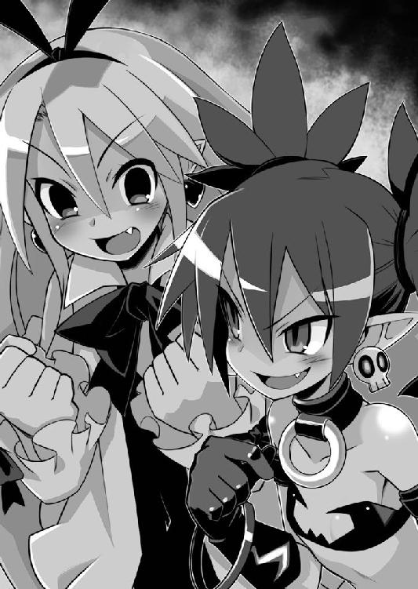
「わたしは大丈夫ですよ。お口チャックですっ」
「安心してください。わたくしも秘密は決して漏らしませんよ」
ヴェルダイムの連中に暴かれる心配はおそらく無いし。
バカップルはいちゃいちゃしててあたしたちの事を気にする余裕はないだろうし、ハナコは間違いなく抱きこめる。
うん、計画はまだまだ順調ね。
「不自然に黙ってても怪しいから、そこも気をつけてね」
「らくしょー、らくしょーですよ。ね？」
「ウィ、無論です。フッ......なにしろ可憐なマドモワゼルたちのためですからね」
最重要機密の保持を三人で再確認すると、あたしたちは────。
三人!?
いつのまにか、中ボスと呼ばれてたあの男がナチュラルに会話に混じってる!? い、居るはずが無いのに!?
「えっ」
「えっ」
弾かれたように振り返ると、中ボスはかき消すように居なくなってしまう。そこには一輪の赤いいバラが落ちているばかり。
「今のは、幻覚かな......」
「やっぱり歴史がおかしくなってるのかもしれません......」
ほんとに、何がどうなってこんなことが起こってるんだろう。クリップアートコイ様の名前もちゃんと思い出せないし、不気味な感じ。
「フロンちゃん、早く殿下に追いつきましょ」
「そうですね、エトナさん」
薄ら寒い思いをしながら、あたしとフロンちゃんは足早に殿下の後を追いかけることにした。
「ハァ〜ッハッハッハ......！ オレさまは満足したぞ、宮廷料理人ハナコよ」
「元、宮廷料理人だよ。あたし独立してラハールよりすごい魔神になるからねー」
「うむ。加熱したイワシも悪くないものだな。だがイワシの栄養を余さず摂取するには、やはり生だ」
ありあわせでちゃちゃっと作ったという毒草のスープと魔獣肉のホルルト風炒めをガツガツと喰らい、ヴァルバトーゼはイワシの煉獄煮を喰らい、二人して爪楊枝でシーシーやっていた。
そこにようやくエトナとフロンがゲートから飛び出してくる。
「遅いぞエトナ、フロン！ クックック......、オレさまだけ昼メシを食べてやったわ」
「久しぶりー」
「始めまして。ぼく、ハナコとアデル兄ちゃんの間のタローです」
ヴェルダイムは見たところ大した影響は出ていないようで、前に来たときと変わらず元悪魔のしょぼい人間どもが牛を曳いて農作業をしていた。
オレさまたちがアデルの家を訪ねたところ、ハナコと次男のタロー、それからこいつらの両親がいるばかりでアデルとロザリンドは外出中だった。でーと、だそうだ。
どの道オレさまの用があるのはハナコだけなので、こうしてうまいメシを喰いながら家の前のテーブルで待っていたわけだ。
「どうだ？ 羨ましいか。お前らは遅かったから昼もカップメンだ！」
空になった皿の前で胸を張り、たっぷり自慢してやる。よほど悔しかったのか、二人は心なしか顔が青褪め、しっぽもぷるぷると波打っている。
「そんなに食べたかったのか？ 土下座して頼むなら空の皿を舐めるのだけ許してやってもいいぞ？」
「違いますよラハールさん。やっぱり本格的に歴史がおかしくなってるみたいなんです！」
なんだ、ハナコのメシが喰えなくて悔しいわけではないのか。
「さっきあたしたちが話をしてたら、いつのまにかあの中ボスが会話に混ざってて......、振り返ると消えちゃったんですよ！」
「居るはずないのに、です！ 怖いですね、恐ろしいですね！」
「なに、見間違いじゃないのか」
「違いますって！」
二人は身振り手振りを交えて、恐怖体験がただの勘違いでないと主張する。
「ふむ......、歴史の歪みはもしかするとさらに進行しているのかもしれないな」
ヴァルバトーゼが目を細めて言ったことだった。
このまま行けば、もっと大きな影響が出てくる可能性もある。オレさまの体がまたムチムチになって、しかも一生戻らなかったりしたら！
余りにも恐ろしくて寒気がした。そうなる前に事件を解決する必要がある。
「それで、歴史がどうとか行ってたけど今日はただ遊びに来たんじゃないんでしょ？ ロザリンと兄ちゃんならもうすぐ帰ってくると思うけど」
「で、でもあの兄ちゃんと姫様、二人っきりでいると時間の感覚無くなるからなー。遅くなるかもしれないですよ？」
タローとハナコが椅子で足をぷらぷらさせながら言う。兄弟で人間に戻らず悪魔を続けてるようだが、悪魔らしさはハナコのほうが一歩も二歩も先を行っているように見えた。
「お二人は相変わらず仲がいいんですね。愛ですねっ」
フロンが愛を語りださないうちに、本題に入ったほうが良さそうだ。とっととハナコに召喚術を行使して貰おうではないか。
「今日はお前に用があって来たのだ、ハナコ。召喚して貰いたい悪魔があってな」
「召喚っ！ あたし召喚術は得意だよ。教えてくれたママは魔神だって召喚したことあるんだから。じゃあツボ取って来るねー」
ハナコが家の中に召喚アイテムのツボを取りに戻り、触媒類を運ぶのを手伝うべくタローとフロンが付いて行く。
「手伝うよ、ハナコ」
「わたしもお手伝いします」
ハナコが家の中に召喚アイテムのツボを取りに戻り、触媒類を運ぶのを手伝うべくタローとフロンが付いて行く。
魔王ロザリンドを召喚したのは聞いていたが、魔神まで召喚していたとは。そのママとやらの直伝ならば、ハナコの召喚術は期待できそうだ。
「これがうまく行けば、簡単に片付くぞ。お前のプリニーどもの調査ももういらんな！」
「昔、魔獣を召喚して使役しようとした人間どもを見たが、それとは明らかに格が違うようだ」
プリニーどもより召喚のほうが役に立つぞ、とからかってやったが、ヴァルバトーゼは何かを思い出しているようで、話には乗ってこなかった。
「言っとくけど、ハナコの召喚術はアテにならないぞ」
「微妙にズレた召喚ばかりしておるからのう」
背後からの声に目をやると、アデルとロザリンドがちょうど戻ってきたところのようだった。
こいつらに用は無いが、オレさまはなんとなく立ち上がって向き直る。するとアデルもロザリンドを背中に庇うようにオレさまのほうを向いた。
「......」
「......」
一拍の呼吸のあと、オレさまとアデルは同時に跳んだ。
「ふん！」
いきなり右腕に紅蓮の炎を巻きつけて、アデルのこめかみを狙ってえぐり込むような拳を打ち込む！
瞬間、拳の軌道からアデルの姿が消えた。
「はッ！」
低く身を沈めたアデルが、空を切り裂く鋭い一撃を打ち上げてくる。そう来ると思っていた。
「バカめ、甘いぞ」
アデルの掌底が届くより早くオレさまは渾身の力を持って地を踏み、背面宙返りをしながら顎を狩る蹴り上げを放つ！
「どうかな」
回避不可能の必殺のタイミングでもって放たれたサマーソルトは、即座に捩って繰り出してきたアデルの肘打ちとかち合い、宙に力の衝撃を散らした。
ニヤリと笑い、オレさまは少し離れた位置に軽やかに着地する。アデルも構えを解いて、不敵な笑みを浮かべていた。
「久しぶりだな。魔王ラハール」
「お前もな。アデルよ」
この一幕がただの挨拶代わりと知って、ロザリンドは胸を撫で下ろしたようだ。
「いきなり何を始めるのじゃ。余を驚かせおって」
「すまないロザリー。つい、な」
「久しぶりじゃな、ラハールよ。先の一件ではハナコが世話になった」
アデルに頭を下げさせて、ロザリンドはオレさまたちに再会の挨拶をする。ここの悪魔は本当に悪魔らしくない。
「して、こたびは何用じゃ？」
家の中からズリズリと音がして、ハナコたちが戻ってくる。巨大なツボを引きずってきたようだ。ここから悪魔を召喚するというわけか。
全員揃ったので、ここで事態の説明をしておこう。オレさまはエトナに経緯を述べさせる。
エトナはうまく流れを掻い摘み、歴史が変わっていること、事態の解決のために特殊な悪魔が必要なことなどを話した。
「......ってわけなのよ。だから予知とか探索系の能力を持つ悪魔をハナコに召喚して貰おうと思って」
「なるほど、それでハナコの召喚術か」
「お前たちも記憶の混濁が無いか？ もしあれば、ここヴェルダイムにも影響が出ている証拠だぞ」
イワシを差し出しながらヴァルバトーゼが確認する。
アデル兄弟とロザリンドの一同は軽く首をひねり、そういえば......と小さく呟いた。
「何か、すごく濃いやつがもう一人居たはずなんだが、思い出せないな」
「ティンクとは別の、何か濃いやつを一人忘れておるような気がしないでもないのう」
ここにもやはり何らかの影響は出ているようだ。名前の一文字めすら出てこないなら、あるいは影響は他の魔界より強いのかもしれない。
「さっきハナコの召喚術はアテにならないと言っていたが、そうなのか？」
「筋は悪くないと思うんだけどな。ハナコはいい加減な性格だから、微妙にズレたものがいつも出てくるんだ」
期待ほどの実力はないということか。それでも、他に召喚使いのアテは無いのでハナコに任せるしかあるまい。
着々と儀式の準備を進めながらもハナコが自分への兄の評価に異を唱えた。
「そんなこと無いって！ 兄ちゃんが思ってるより、あたしはメキメキ成長してるんだから。バッチリ召喚して兄ちゃんをビックリさせてやるんだもん」
二人のやりとりをぼんやりと見ながら、オレさまはさっきフェンリッヒに聞いた自分の本来についての話を思い出していた。
オレさまにも妹がいるという話だ。
「ははは、うまく行くといいな。でも安心しろ。失敗したときも兄ちゃんがフォローしてやるから」
「もー、兄ちゃんはあたしたちをすぐ子供扱いするんだからー！」
エトナとフロンは家来だから、オレさまも好き勝手やるしこいつらも好き勝手にやる。
ところが妹というのはそうはいかないらしい。こんな小さいのがずっと一緒に居て、どこへ行くにもついて来たり、時には面倒を見てやったりせねばならんのか。
妹とはなんというめんどくさいものだ。
考えにふけっていたオレさまの横腹を、エトナの肘がつっつく。
「殿下、準備ができたみたいですよ」
「準備おっけーです、ラハールさん！」
タローと二人掛かりで巨大ツボに謎の液体を注ぎ込んだフロンが、ツボからずるずると降りながら手を振った。いよいよ召喚の儀式だ。
「ハナコよ、ツボをもう少し家から離したほうが良くはないか？ おぬしはよく爆発を起こすゆえ」
爆発......、こいつはちゃんと召喚できるのだろうか。
「だいじょーぶ、だいじょーぶ」
オレさまたちの不安をよそにハナコは巨大ツボを火に掛け、やがて謎の液体はボコボコと沸き立って怪煙を上げ始める。
ツボからもうもうと吹き上がる煙毒に冒されたかのように、にわかに空の雲は妖しげな紫と緑のまだらに染まり、風は渦を巻いて逆巻き木々の梢をざわめかせる。
ただならぬ気配に臆したか、農作業をやっていた人間どもはいつのまにか残らず消え失せていた。
「なかなかの力を感じるぞ。これは、あるいは......！」
禍々しい空気と重く落ちかかって来そうな空は人間には畏れるべき凶兆だろうが、悪魔にとってはむしろ快いものだ。自然、召喚術の結果にも期待が篭る。
巨大ツボの傍らでハナコが両手を掲げると、曇天を青褪めた稲光が引き裂く。遠い雷精の唸りがあたりの大気を慄かせる。
「今日は調子がいいから、どんなのでも呼び出せそうだよー。ラハールが呼んで欲しいのは、どんな悪魔だったっけ？」
迫力ある儀式と裏腹ののんびりとした声が問うてくる。オレさまだけでも空気を呼んで、らしい感じで答えてやろう。
「予知、遠見、探求......、智覚の魔力に長たる悪魔を、オレさまは望む！」
叫ぶと同時に突風を魔力でちょいと起こし、バサバサとマントをなびかせる。程近い場所に突き刺さった天雷の光剣が、オレさまたちの横顔を青く照らした。
「予知とか遠見だね。わかったー」
ここまでオレさまがやってやったのに、ハナコは台無しの返答だ。偉大な悪魔には高笑いと迫力と威厳が重要だと、前に言ってやったというのに！
オレさまの考えなど気にも留めず、ハナコは棒読みの呪文を唱えながらポイポイと触媒の類を放り込んでいく。今、触媒の中にきわどいデザインのぱんつが入っていたようだが......。
「ハナコ、大丈夫かなぁ......」
珍しく弱々しい声でアデルが呟く。当のハナコは周囲の心配など気にもしない。
「ノープレブレムだよ！ ハナコにドドーンと任せといて！」
そう言ってハナコが飛び跳ねた瞬間、ツボから大爆発が巻き起こった。
地を揺らす轟音と、天の雲も吹き払う閃光。
煙が晴れ、ちらちらと舞い散る光のかけらの中、巨大ツボから現れたのは────。
「むっ!?」
紫色の触角が見えた瞬間、オレさまは超高速で跳んでいってそいつをツボの中へと押し戻した。
「こっ、こら！ 呼び出しといて何すんだい！」
「うるさい、帰れ！ 帰れ!!」
ぎゅぎゅっと押し込み、頭を踏んづけて押し込む。さらに頭の上で何回もジャンプして、オレさまはどうにかそいつを送り返すことに成功した。
「あー、せっかく召喚成功したのになんで追い返しちゃうの！」
ほっと安堵の溜息をつくと、いぶかしげな視線がオレさまを包み込んでいた。
「......なんです殿下？」
「......ラハールさん？」
いぶかしげな視線がオレさまを包む。
たしかに今の召喚は大成功で、さっきの悪魔は探索の魔力に優れた悪魔なのだが、あれは駄目だ。駄目なのだ！
「う、うるさい！ 今のは駄目だ。違うのを呼べ！」
「えーワガママだなあ」
召喚術を邪魔されて、ハナコが不満をあらわにしてぴゅーぴゅーと口を鳴らす。そんな顔をされても駄目なものは駄目だ。
「とにかく違うのにしろ！ この際、悪魔でも天使でも人間でもなんでもいい！」
「ラハールにも何か事情があるのだろう。この際、探索の魔力に優れているならイワシを召喚しても構わんぞ」
ここはヴァルバトーゼがフォローを入れてくれた。いや、イワシを呼びたかっただけか？
とにかくさっきのヤツは絶対に駄目なのだ。
あのレーニアという悪魔は、オレさまが赤ん坊の頃に乳母をやっていた経験もある恐ろしいムチムチぼでぃーの悪魔。なにしろオレさまはヤツのせいでムチムチが苦手になったのだから！
「なんだか分からぬが、もう一度やってやれ、ハナコ。今日のおぬしは調子が良いから、次も問題なく成功するであろう」
「そうだな。歴史に歪みが出てるのはラハールたちだけの問題じゃないし、やってやれよ。ハナコ」
何か事情があると察したか、ロザリンドとアデルもハナコに次の召喚を薦めた。
......おや？ 赤ん坊の頃なら、如何に悪魔といえど記憶が残っているはずもない。これも記憶の混乱のせいか？
知らないはずのことを知っていたおかげで、あれと顔を合わせずに済んだということだ。今はおかしな記憶に感謝しよう。
「ラハールさんが何考えてるのかわかりませんけど、どうかもう一回お願いします。ハナコさん」
「あとで殿下にはあたしが言っとくから。ね？」
みなに言われて、ハナコももう一度召喚術を行使する気になってくれた。
こいつにヘソを曲げられては、ヴェルダイムまで来た意味がなくなってしまう。
「もー仕方ないなー」
再び一通りの準備を行って。
「よーし、準備完了ー☆」
「さっきので無ければなんでもいい。やってくれ、ハナコ」
触媒を放り込んでいるうちに機嫌を直したハナコがぴょんと飛び跳ねる。
「今日のあたしは絶好ちょーだから、今度もドドーンと『最強の探索能力を持った悪──」
ドン！ と爆発が起こる。
閃光と轟音が弾け、煙が晴れていくとキラキラと光の散るツボの中から現れたのは......今度は見たことの無いヤツだった。
「......はい？」
緑の長い髪にワインレッドの角、法衣のような黒い服に身を包み眼鏡を掛けた優男風の悪魔は、何事が起こったのかときょろきょろと周囲を見回した。
「こいつが最強の探索系能力を持った悪魔なのか？」
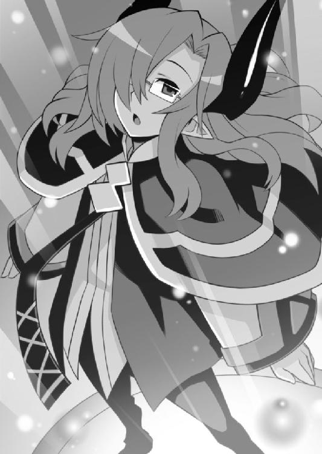
「完・璧だよ」
ツボから出て来た悪魔を全員で取り囲み、しげしげと眺める。
確かに強力な魔力を秘めているのが感じられる。何か妙な雰囲気を感じるところもある。
まずはフロンが歩み寄り、ぺこりと頭を下げた。
「いきなり呼び出しちゃってゴメンなさい。はじめまして。わたしはちょっと事情があって堕天使をやっているフロンと申します。えっと、お名前を教えてもらえますか？」
悪魔は近寄ってきたフロンの姿をまじまじと見返し、実に興味深そうに眼鏡に触れた。
「天使......いや堕天使ですか。僕のことはクリスト、とでも呼んで下さい」
「クリストさんですか。よろしくお願いします。わたし今は堕天使ですけど、ほんとは大天使ラミネート加工トン様に遣わされた天使見習いなんですよ」
「ラミネート加工トン......、妙なお名前ですが大天使の使者ですか、ふむ。どうやら僕はここに召喚されてきたようですね？」
状況が掴めてきたのか、クリストと名乗った悪魔は落ち着きを取り戻してフロンに会釈した。
こいつの魔力量なら、自分の周りにいるのは魔王級の悪魔揃いだと理解しているだろう。唐突に召喚され、魔王に囲まれた状態ですぐに平静を取り戻すことができる度胸はなかなかのものだ。
「うん、あたしが呼び出したんだー」
術者のハナコはもともとツボの一番近くにいたので、ツボの周りをぐるぐると歩き回りながら、自分の呼び出した相手の前も後ろも無遠慮に眺め回していた。
フロンと挨拶を交わしながらも、クリストという男は一番自分の近くにいる小さな悪魔の少女を慎重に目線で追う。
「あなたが術者でしたか。まだ悪魔としては随分お若いようですが、僕を呼び出すとは中々の腕前ですね」
「それほどでもあるよー」
「あんた、ただのザコ悪魔じゃないっぽいけど、どこの魔界の何者？」
次に声を掛けたのはエトナだ。
「それについては、さる巨大魔界出身の魔王とでも言っておきましょうか。あなたがたの中にも魔王、あるいは魔王級の力を持つ悪魔が多いようですね？」
この落ち着きよう、やはりこいつも魔王だったか。ただの自称かもしれんが、実力が伴っていれば肩書きなどどうでもいい。
クリストが視線を向けたのは、アデルとロザリンドの二人だった。ともに魔王級の悪魔二人のカップルというのは中々に珍しいに違いない。
視線を受けて二人が応じる。
「如何にも。余はこのヴェルダイムの魔界を統べる魔王ロザリンドじゃ。こたびは召喚による急な呼び出しの非礼、容赦願おう」
「オレはあんたを呼び出したハナコと、この後ろに隠れてるタローの兄だ。今起こってる事件の解決のために、あんたの能力が必要らしくてな」
ロザリンドの後ろに隠れていたタローもしっかりと観察し、クリストは何度か頷いた。
「そこのタローさん、ハナコさんは確かに悪魔でありながら、どこか人間のような雰囲気がある。何らかの理由で悪魔に転身した元人間から生まれたのでしょうか？ 人間から生まれた悪魔に堕天使とはとても珍しい取り合わせだ。そして、僕の能力が必要というのは？」
「その前に。尋ねておきたいことがある、クリストよ」
次にヴァルバトーゼがクリストに語りかけた。
「あなたは吸血鬼ですか。血の臭いはしませんが。いやはや、ここは上級悪魔の見本市のようなところですね。僕に尋ねたいこととはなんです？ 所属魔界のことなら話せませんよ」
見ただけでハナコとタローを元悪魔と看破し、ずっと血を吸っていないというヴァルバトーゼを一目で吸血鬼と見抜いた。こいつの知覚能力は本物のようだ。これはいい。
「いかにも、俺はヴァンパイア・ヴァルバトーゼだ。クリスト、お前はイワシは好きか？」
また出た。こいつはイワシのことしか頭にないのか。
「......はい？ ま、まぁ......トマト煮などは嫌いではありませんが......」
「よかろう！ イワシは魚類の王と言っていい存在だ！ 今度は生で！ 頭から！ イワシの豊富なオメガ三脂肪酸を主とした栄養を摂取して見るがいい。世界が変わるぞ！ なにしろＤＨＡなどの栄養素はいささか酸化しやすい傾向があるため、地獄の業火にて加熱調理を行うよりも生のままで」
「ええい、イワシの話はあとにしろ！」
まだまだ長くなりそうだったので、オレさまが直々に割って入った。
こいつはこれさえ無ければ優秀なヤツなのだろうが......。
まぁいい。最初のインパクトでクリストをビビらせたのは価値があった。初対面では相手より優位に立つことが大事だからな。
「あなたがわたしの能力が必要というのは、どういうことか説明してくれませんか？」
クリストは眼鏡を光らせながら、オレさまをひたと見据える。滲み出る大物の迫力から、きっとオレさまをこの面々の首魁と判断したに違いない。
「ハァ〜ッハッハッハッ......！ オレさまは大魔王ラハール！ お前は最強の知覚能力を持つ悪魔として召喚されたが、それで間違いないな？」
片目を瞑り、しばし視線を逸らすクリスト。その後、真面目な顔を作って応じた。
「そうですねぇ。最強の悪魔、かどうかは比較検討の術がありませんが、概ね間違いではないでしょう」
「では、お前の能力で暴き出して欲しい相手がいるのだ」
ここまでの経緯を、オレさまは再びエトナに説明させる。クリストは口元で手を隠したり、眼鏡に触れたりしながらこの話を興味深く聞いたようだ。
「......ってわけ。クリスト、あんたにできる？」
「歴史を歪め、時間の流れを改変する......。そのようなことが可能だとは知りませんでした」
事件の状況を咀嚼し整理して、クリストは小さく何事か呟く。
（......もしもそんなことが可能ならば、僕の目的を果たすことも容易い。何もかもがいとも簡単に解決することとなるでしょう......ここは協力するフリをして調べを進めるのが得策でしょうか、ふむ）
小声なのでほとんど聞き取れなかったが、こいつもいろいろ訳アリらしい。
オレさまはそんな事情など知ったことではないがな。もし従わなければ、軽く痛めつけて力づくで手伝わせてやるまでだ。
こいつが賢明な悪魔なら、この魔王集団相手にやりあうよりも自分の能力を少し行使して協力するほうがよほど良いだとすぐに気づくはず。
「僕は現在、ある重要な任務を帯びて行動中なのですが、この事件は調査する価値がありそうですね。協力しましょう」
「クックック、賢い判断だ。クリストよ。歴史を歪めている原因、あるいは手がかりぐらいはお前の能力で知れるのだろうな？」
ずっとポーカーフェイスでこちらを伺っていたクリストは、オレさまが正面から実力のほどを問うとここで始めて不敵な笑みを浮かべた。
「フフフ、僕の魔奥義『千里眼のリチェルカ』を以ってすれば、犯人を見出すことも容易いことです」
「言うではないか！ ハァ〜ッハッハッハ......！ 期待するぞ、クリスト」
大きいことを言うヤツはデキるヤツ、というのはオレさまの哲学と言えた。自分の能力や野望を自信満々に語れずになんの魔王か。
「それでは少し見てみましょうか」
クリストの眼鏡が光り、周囲に青緑に輝く魔力が溢れ出る。悪魔のものとしてはいささか綺麗な魔力だが力の大きさはなかなかのものだ。
『千里眼のリチェルカ』に意識を集中しながら、クリストは考える。
歴史改変は大規模儀式魔術よりもさらに大きく特殊な力が必要な事象だ。かなりの特別なケースでなければ、たとえ最高位の魔王や大天使であっても引き起こすことができるものではない。
相手は間違いなく強敵。しかし利用価値は計り知れないものがある。
クリストは、ハナコに召喚される前はキリアと名乗る魔王の率いる魔王連合軍に加わることで自己の困難な目的を果たそうとしていた。
それらが一息に解決できるかもしれないのだ。
ヴォイドダークの暗殺、そして自身の濡れ衣を晴らすことはもちろん、頑迷で旧態依然の使えない同僚どもを都合良く作り変え、自分が組織の上位に立つことも簡単にできるだろう。
それは決して私欲のためというわけではない。
クリストという男は強欲ではない。ただ少し、自分の理想を追うことにいささか急き過ぎているだけだ。
聡明で人より頭が回るからこそ、目指す理想への道順がそれこそ『千里眼』のように一目で見えてしまうのだ。
ゆえに、道程で路傍の花の色や木々に遊ぶ小鳥のさえずりを見落とす。
そういったものを見過ごしているから、他の者たちの一見無駄な行いにもある種の価値があるということを理解できない。
自分の考える通りにまっすぐ理想を目指せばより良い方向へ向かうことができるのに、それがわからぬ者は愚かだ、としか考えられない。
そんなクリストも、やがてはキリアたちとの旅の中で路傍の花の色を知ることになるのだが、それはまだ、少し先の話である。
千里眼の魔力が魔界と次元を飛び、宇宙をさえ貫いていく。ようやくラハールたちが求める、目的の犯人が見えてきたようだ。
「見えてきましたよ......」
「おお！ どんなヤツだ!?」
千里眼を用いているクリストは両眼が薄く光を放っていて、ここではないどこか果ての果てを視界に収めているようだ。
同時にこちらもちゃんと見えているようで、クリストの前で試しに手をぴらぴら振ってみると鬱陶しそうにどけられた。
「ローブを着た謎の姿です。身長は非常に小さく、ハナコさんの三分の一もない」
「ちっちゃい！ 子供なのかな？」
「イワシではないのか？」
ハナコとヴァルバトーゼの言うことは耳に入っていないようで、クリストは観測の報告を続けた。
「シルエットは、三角形の妙な姿です。奇妙なことですが、その謎の相手がいつのまにか全魔界最強の存在として目されているとか......」
三角形で謎のヤツだと？ スナック菓子か何かか？
そんなやつ、見たことも聞いたこともない。ましてや全魔界最強の存在だなどと。周りの連中にもあごをしゃくって尋ねてみたが、誰もが首を振るばかりだ。
「そいつが歴史が書き換わった原因であることには間違いありません」
「そのちっこいのが最強になるために、歴史を書き換えたってところですかね？」
「逆かもしれませんよ。その人が最強になっちゃったから歴史が変わったとか」
エトナとフロン、どちらの言うケースも考えられる。しかしそれよりもオレさまが知りたいのは、そいつがどこに居るのかということだ。
何者であれ、どうやったのか分からないにせよ、ブチのめせば解決するはずだからな！
「どこに居る？ 居場所を突き止めたらすぐさま攻め込むぞ！」
千里眼の力を発動させたまま、クリストは穏やかなにオレさまを見る。今はこいつに任せるしかないか。
「もう少し待ってください。それにしても、ここでも魔王の集団と組んで魔界最強の相手と争うわけですか......」
呟いて、溜息をつく。
次の瞬間、クリストは大きく目を見開いて一歩退いた。
『きさま！ 見ているなッ！』
「しまった、感づかれましたよ！」
千里眼の能力を逆探知だと。どうやって最強と呼ばれるようになったのかは知らんが、敵も伊達ではないな！
「近いのか？」
オレさまにクリストが答えるより早く、にわかに周囲で異質な魔力がプレッシャーを放ち始める。
プレッシャーの発生源を求めると、そいつはいつのまにかすでにアデルの家の屋根に立っているではないか。
瞬間移動でもしたのか知らないが、のこのこやってくるとは好都合。
「フン！ 自分からオレさまのもとに来るとは殊勝な心がけだ！ 返り討ちにしてくれる！」
「気をつけてください、そいつの最強のうわさはただのうわさではありませんよ！」
こちらには、オレさまとエトナ、フロン。そしてヴァルバトーゼ、アデルとロザリンドに、ハナコとタロー、さらにクリストまで居る。
相手が最強だろうがなんだろうが、手勢も連れずにやって来たのはただのバカだ。全員で囲んでボッコボコにしてやろう！
アデルの家を中心にオレさまたちは扇状に陣形を敷き、臨戦態勢を取る。残念だがアデルの家は木っ端微塵になりそうだな。
「まだ本の途中なのに、ラスボスですか!? これは負けフラグですよっ!?」
「フロンちゃん、メタ発言はやめよう」
無言で強大な魔力の圧だけを吹き付けてくる謎の相手を前に、フロンが不吉なことを叫び、エトナが冷静に突っ込んだ。
幕魔３．セクシー魔王ＳＯＳ！
ラハールたちが謎の敵と対峙するより少し前。所は魔立邪悪学園にて。
我はＭラハールの体に取り付けた種々雑多な計測器具を取り外し、各データをジイとともに検分していた。
いまだ我の超邪悪魔体改造薬は完成を見ていない。あと一歩のところで対象の生来もつ防衛機構が拒絶反応を示すのだ。
今回の研究についてはラハールのところのエトナという悪魔がベリルを通じて我に持ちかけてきたのだが、我にとってまことに好都合な提案であった。
「どうだ、ジイよ。やはり我の計算には一部の間違いもあるまい？」
「ぼっちゃまのおっしゃる通り、このジイもすべてのデータは誤差の範囲のブレしかないと思いますぞ」
診察台から起き上がったＭラハールは、きょとんとした顔で我とジイの相談を見ている。
「オレさまには難しいことはわからんが、人の助けとなる薬をどうか作ってやってくれ」
「わかっている。我は超邪悪魔体改造薬を完成させたあとは、キサマとエトナ、フロンに委ねるつもりだ。好きに使うがいい」
このＭラハールという魔王、極めて興味深い存在ではないか！
魔王が分裂し、二体に増殖するなどという現象はこの我でさえ聞いたことが無い。しかも個々の魔力をいささかも減じずにそっくりそのまま存在が二倍になっているのだ。
この現象を解明すれば、魔王の量産化が可能になることもありえよう。
「我の計算にミスがないの当然だ。しかし何故、ラハールにしか効果が出ないのか。観測不能の要素があるのか。あるいはまだ何かを見落としているのか......」
「それではぼっちゃま、薬品によって効果を為すのではなく、別の形態からのアプローチを試みるのは如何でございましょう？」
それだけではない。ラハールとＭラハールは同一の存在でありながら、気質と性別が正反対となっている。このことは対象の存在をそのままに、身体的特徴や精神面をわずかな干渉で変質させることが可能なのではないかという仮説を導き出す。
我を我のまま勇者であり魔王でもある存在としたり、ベリルの身長を伸ばしたり、アルマースをできそこない勇者のままに千億回死んでも蘇る便利な人体実験素材とすることなども可能だ。
「別のアプローチ、か。装着品などに効果を持たせるか、純粋に魔力による操作にするか。いや......対象の体そのものに干渉するのではなく、対象のいる場に効果を持たせれば、あるいは拒絶反応を掻い潜れるかもしれんぞ。どうだ、ジイ！」
「ほっほっほ......。それはたいへん結構なアイデアでございますな、ぼっちゃま。こんなこともあろうかと、素材としてジオブロックを用意しておきました」
「相変わらず、意味不明なレベルで用意がいいな！ ジイは！」
いつのまにかジイがラボの床下に作っていた倉庫の戸を開き、いくつかの素材の中から立方体をひとつ取り出してくる。プレーンなジオブロックだ。
これをベースに、我の超邪悪魔体改造薬の効果を付与すれば新たな実験ができよう。
しばしの作業の末、超邪悪魔体改造薬あらため、超邪悪魔体改造ブロックが完成していた。
「姫様〜、姫様〜。どこ行っちゃったんですか〜？」
おあつらえ向きに実験材料がラボの前を通りかかる。我とジイはさっそくヌッと手を伸ばし、アルマースを引っ張り込んだ。
「来いっ、アルマースよ！」
「ひえっ!? マ、マオとじいやさん!? それから、ヤンママさんだったっけ？」
「気軽にＭラハールと呼ぶが良い」
Ｍラハールでは実験にならないので、万が一むちゃくちゃになってもどうにかなるアルマースが実験体としてもっとも適任なのだ。
「我の作った超邪悪魔体改造ブロックが今しがた完成したところだ。アルマース、お前は運が良い。特別に実験体一号を勤めさせてやろう」
ラボ内にジオブロックを設置し、床の一部がすでに影響下となって緑と紫の禍々しい色に明滅している。あとは踏ませるだけだ。
「あそこに乗って見ろ、アルマース」
「やだよ!? 超邪悪とか改造とか、めちゃくちゃ怪しいじゃないか！」
嫌がるアルマースをぐいぐいとエフェクト影響下の床へと押しやる。アルマースは、あろうことか必死で抵抗した。
「ええい、抵抗するな！ 素直にこのマオ様の実験体となれる光栄に浴するがいい！」
「や・だ!!」
こいつ、普段は弱っちいクセにこんな時だけ我に拮抗するほどの力で抵抗しおって。
「ジイ！ こいつを押し込むのを手伝え！」
「かしこまりました、ぼっちゃま」
「い、いやだ〜っ!? きっとわけわかんない怪物とかにされる〜っ」
ジイと二人掛かりで押し込もうとしても、なお抵抗する。だが愚かなアルマース。ここにはもう一人いるのだ。お前が逃げおおせる道は、もとより無い！
「Ｍラハール、お前も押せ！」
「うむ、よかろう！」
と、言ったが早いか、Ｍラハールはとんでもない渾身の力を込めてアルマースもろとも我とジイもエフェクト影響下へと押してしまった。
「おっ!?」
「うわっ!?」
「ぬっ!?」
予想外の衝撃に、たたらを踏むも止まれない。もつれ合うように我らは超邪悪魔体改造ブロックの影響下へと踏み込んでいた。
途端、ぽん！ と煙がはじけて我らの体に魔体改造の効果が現れる。
我とジイ、アルマースの体に、豊かな乳房が生じているではないか!! 顔、体その他の部分はそのままに!!
「うわーーーーーっ！！！！」
「ククク、実験は成功だな。ジイ、アルマース」
それから我らはブロックを運びつつ、三人で大きな胸をぷるんぷるんと揺らしながらラボを出て、教室へと向かっていた。
道行く生屠たちがみな我らを振り返る。偉大な実験の成功者を讃えずにはいられないのであろう。
「もうダメだ......、ボクはもうおしまいだ......」
「ほっほっほ、案ずるには及びませんぞ。影響下から出れば、ほどなく効果は切れますゆえ」
「だったら元に戻してから教室行こうよ!?」
教室にたどり着くも、ベリルの姿がない。ヤツにもいち早くこの効果を体験させてやろうとしたものを。
ブロックを手近な机に置き、狂子と明日禍にも尋ねてみる。
「おい、ベリルがどこに行ったか知らんか？」
「............ふるふる」
なぜか二人は口も効かず、青褪めた顔で首を振るばかりだ。
なんだ、あれほど実験の完成を心待ちにしていたクセにどこかへ出かけたのか。不良め、仕様の無いやつ。
「まぁ、良い。ベリルが戻るまで待つとしよう......うむ？」
ふと振り返ると、先ほど我が机に置いたブロックが魔法のようにかき消えていた。
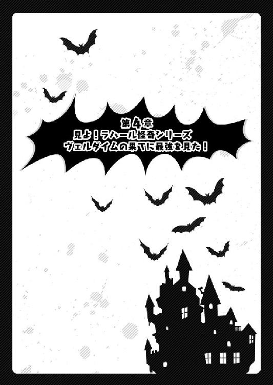
「ハァ〜ッハッハッハッ......！ 砕けろッ!!」
アデルの家そのものよりも大きな魔力の塊がオレさまの手から放たれ、正体不明の敵へと集中、確実に命中した。
邪悪の魔力が引き起こす爆炎の大嵐が哀れな犠牲者を包み込む。
ありったけの力を込めたオレさまの一撃に加えて、さらにここに居る面々の最大限の攻撃も重ねられている。
並みの相手ならひとたまりもあるまい。たとえ相手が相当高位の魔王であろうとも、これだけの攻撃を受ければかなりの重傷を負ったはずだ。
......はず、だったのに。
「無駄なこと、ダメージなんて......無ーいっ！」
炎の中から現れた小さな影は一歩退くことすらなく、そのままに立っているではないか。
軽い声で言ったそいつは、言葉の通りまったくといっていい程ダメージを受けた様子はない！ どんな防御力をしているのだ、こいつは！
こいつの立っていたアデルの家は完全に吹っ飛んでいて、その両親も黒こげでぴくぴくしているというのに！
「どうなってんですか殿下！ 見た目に反してマジで強いですよこいつ！」
「やっぱり負けフラグだったんですよ、ラハールさん！」
「お前ら他人の家を何だと思ってんだー！」
異様なまでの防御力を見せ付けた敵は、今度は攻勢に転じつつあった。
ごく小さな棒のような手を振り回しているのを見て、最初は失笑するが、だんだんオレさまは不安を感じてくる。
なんだこのプレッシャーは......？ あの弱そうな攻撃、受け止めようとしてはいけない気がする......！
「くらえっ！ えーっと、すごいパンチー！」
弱々しい拳を突き出しながら、正体不明の敵が迫ってくる。
「おいキサマら、全力で避けろっ！」
「えっ!?」
「ええっ!?」
さすがにそこは精鋭揃いだった。オレさまの声を聞くと同時に地を蹴り、全員がヤツの攻撃圏から離脱している。
拳の一撃とともに、先ほどまでオレさまたちが居た場所を凄まじい衝撃が襲った。
「な......なんじゃこの力は......!?」
「あの撫でるような一撃が......!?」
オレさまと同じく魔王級の力を持つロザリンドとヴァルバトーゼが、ヤツの攻撃が大地に残した爪痕を目にして瞠目する。オレさまも同様だった。
あのしょぼい「すごいパンチー」などという一撃が大地をえぐり、遥か地平線まで大河のような溝を刻んでいるのだ！
なんという破壊力だ。防御力ばかりではなく、攻撃力も異様なものを備えているのか、こいつ！
「こいつ、おかしいぞ！」
「それなら僕の千里眼で......おや、千里眼が......!?」
眼鏡に触れて能力を使おうとしたクリストが、どうしたことかまごつく。
「能力が使えないのです。手段はわからないですが、妨害されているんです！」
「何をバカな......、くっ、オレさまも炎一つ出せなくなっているだと!?」
いくらなんでもおかし過ぎる。これもまたヤツの力だと言うのか！
あれだけの攻撃力、防御力を併せ持ち、さらにすべての能力を封殺する力を有しているのだとしたら、そいつは間違いなく情報どおり、「宇宙最強」だ！
オレさまたちは緊張をみなぎらせ、一転、慎重な姿勢取る。
どう攻めたものか......？ 考える寸時の間もなく、しっかりと見ていたはずの敵の姿が目の前で消える。
「きゃっ!?」
「うわっ!?」
傍らでいきなりフロンとタローが吹き飛ばされる。その後、傍らにヤツが立っていた......。
「おい、気をつけ──」
声を発する間すらない。
「ぐあッ！」
「うぐっ!?」
「ひぃっ！」
「ああっ！」
さらにアデルが、ヴァルバトーゼが、フロンが、ロザリンドが目視することもできない攻撃で弾き飛ばされてしまう！
そしてまた、その傍らにヤツが立っているではないか。
「キ、キサマ......！」
「遅い遅〜い。遅いね〜、キミたちー？」
そんな舐めた言葉を抜かして、敵はくいくいとオレさまを挑発してみせる。ローブのせいで顔は見えないが、明らかにこいつは笑っていた。
今のは、異常なまでのスピードだというのか!? 瞬間移動にしか見えなかったぞ!?
これだけの精鋭の集団を前にして、子供をあしらうように次々と攻撃を加え、さらに余裕を持って笑っているなど！
「キサマ、この魔王ラハール様を舐めて無事でいられると思っているのか......！」
オレさまは総身に怒りをみなぎらせる。このようなヤツに舐められて、なるものか......！
「一旦、退けラハール！ 今、勝てる相手ではない！」
吹き飛ばされたヴァルバトーゼは、受身に成功したか軽傷だったようだ。このオレさまに撤退しろと言ってくる。
奴の提言が冷静な判断に基づいているのは理解できる。理解できるからこそオレさまは腹が立った。
「くっ、このオレさまがこんなわけのわからん敵から背を向けて逃げるというのか！」
握り締めた拳が憤怒に震え、覚えず溢れ出た魔力がバチバチと火花を散らす。
オレさまにはまだまだ闘志があったが、臆病なタローなどはすでに戦意を失いロザリンドにしがみ付いていた。
「ひ、姫様。ぼくこわいよー」
「ラハール！ そやつの言う通りじゃ、今は退いたほうが良い！」
ロザリンドまでが撤退を勧める。
逃げることなら簡単だ。オレさまの腕にはすべての次元と時間を自在に跳躍する魔時次元空間界移動リングがある。しかし。
「クリりんの言った通り、ほんとに全魔界最強なのかも！」
「クリりん......!? 僕の呼称はともかく、能力を封じられているのはまずいですよ、ラハールさん！ 逃げる手段があるのなら、早く使ってください！」
ハナコとクリストも撤退を叫ぶ。
謎の敵はあまりにも余裕を持って、一歩また一歩とオレさまたちに迫ってきていた。オレさまは、こいつのこの余裕がムカつくのだ......！
ギリ、とかみ締めた奥歯が鳴る。
屈辱だ。オレさまは元来、負けず嫌いである。
それでも高位の大魔王や大天使が相手であれば、場合によっては渋々引き下がることもしよう。だがこいつは何者だ？ 誰も名も姿も知らない無名の者ではないか。
力あるものが存在を秘すことは極めて難しい。その気がなくても強力な悪魔は魔王や魔神と言った肩書きが自然と冠せられるように、大きな力は望まずとも担い手の名を轟かせる。
こいつが全魔界最強の存在でなどあるはずがないのだ。
歴史のボタンがたった一つ掛け違っただけで生じた歪み。それがこいつだ。そんな相手にこのラハールが膝を屈し、惨めに逃亡するというのか。
「ぐ......！ おのれ」
もはや猶予はなかった。
断腸の思いで、オレさまは目前に迫った謎の敵から逃げるべく、リングによって移動ゲートを開く。
敗れてしまっては何にもならない。次に顔を合わせるときが、必ずヤツの倒れる時だ。
「魔王城に繋いである。全員逃げろ！」
空間に穿たれた門へ、まずはハナコとタローが向かう。
一番にゲートに向かったタローは、どうしたことか目前で立ち竦んだ。
「あ、あれ。行けないよ......？」
「タローちゃん、何してんの？ えいっ」
「いてっ！」
過激なハナコがタロー目掛けて助走をつけて滞空時間長めのドロップキックをかますが、それでもタローは踏みとどまっているばかりだ。
「誰も逃げられないぜー。ここで全員終わりだっ」
そうこうするうちに、謎の敵が迫ってくる。
ぐずぐずしている弟と妹を見かねて、アデルが行った。
「タロー、ハナコ！ 何やってるんだ。せっかくラハールが......あれっ!?」
そのアデルさえゲート目前にして立ち止まってしまう。もしや、これも敵の仕業なのか！
アデルが弟と妹の面倒を見ているうちに、すばやくロザリンドは黒こげのアデルの両親を回収していたが、ゲートに飛び込めないのでは意味がない。
「アデルよ、どうしたのじゃ！」
「どうしてもゲートに入れない。何をされたのかわからないが、妨害されてる！」
逃げることすらできないとは！ こいつ、ここまでの力を持っていたのか!?
「頼みの綱の移動アイテムも使えないのですか!? 僕は巻き添えでくたばるのはゴメンですよ！」
「わ、わーっ、どうしましょうラハールさん!?」
「ちょっ、ちょっ、あたしもこんなとこでやられるのはイヤよ!?」
クリストが、フロンが、エトナが背後に迫る破滅に怯える。
「フン！ 逃げられんのなら、死力を尽くして戦うしかあるまい......！」
魔王玉すら撃てない状態でどこまでやれるかわからんが、醜く助命を請うなど魔王の名折れ。持てる力と魔力のすべてを振り絞り、どちらかが倒れ命尽きるまで戦うほかない！
悲壮な決意を固め、全員が再び正体不明の相手に向き直る。
「阻むものは全部ぶっ潰してやるぜっ、全破壊だ！」
ゆっくり、ゆっくりと歩を進める正体不明の敵が、今ゆるやかに死の一撃を振り上げようとしていた。さっきと同じ攻撃が来たら、今度こそ無事では済むまい......！
敵の手から破滅そのものが放たれんとした時であった。
オレさまが開いたゲートのすぐそばに、どうしたことかよく似たゲートがもう一つ開かれて現れたのだ。
その中から飛び出してきた悪魔をフロンが指差し、大きな声で名前を呼ぶ。
「ああーっ、ラズベリルさん！」
「なぜお前が、どうやってここに!?」
「えっ、えっ？ な、なんかたまたま......とかだけど」
邪悪学園から来てみれば、見慣れた相手や見慣れぬ相手がみんなボロボロになっている状況に戸惑い、ぷっくりとしっぽを膨らませるラズベリル。
本当にたまたまなのか？ リングもないのにどうやってゲートを開いた？ わからないことは多いが、ここは一先ず。
「そっちのゲートから逃げましょう、殿下！」
「うむ！」
敵がトドメを放つ前に、また怪しげな技でゲートを封じられる前に！ 全員で団子になって、転がり込むようにもう一つのゲートへと飛び込んだ。
............。
......。
やって来た先は、やはり魔立邪悪学園であった。
開かれたゲートの手段も判明する。Ｍラハールの持ち出した魔時次元空間界移動リングが第二のゲートを開いたのだ。
謎の敵の暴虐により黒こげとなってしまった両親を抱え、アデルとロザリンド、タロー、ハナコのヴェルダイム組は保健室へと向かった。
オレさまたちは邪悪学園の喧騒を避け、まるで生屠の居ない屠処室に来ていた。
マオは研究室に引きこもっているらしく、ここに居る邪悪学園の生屠はラズベリルのみだ。
「いやー、助かりました。ラズベリルさん！ どうもありがとうございます」
「最高のタイミングだったね。やっぱあたしの日頃の行いが悪いからかな」
つい数分前までは死地に居たというのに、こいつらは喉元過ぎればなんとやらである。屠処室の大テーブルにお菓子類を広げ、パクつきながら余裕のある会話をしていた。
一方ではクリストとヴァルバトーゼが、書棚の傍らで立ち話をしている。
「あなたは吸血鬼なのですよね。ある種の吸血鬼は血を吸うことで相手の能力、あるいは活力を奪うことができると聞きます。そのような相手への有効な対処法があれば、伺いたいのですが」
「如何にも。俺はイワシを食べてその栄養を余すことなく得ている。対抗する手段はお前もイワシを食べることだ。互いにイワシを食べるならば、より多くイワシを喰ったほうが勝つ！」
「はぁ、そうですか......」
まあ、あまり聞く必要のない会話のようだ。
こちらではラズベリルがいきなりやってきた理由を語っていた。なんとなく気になった、という話だが、そんな都合のいい話があるだろうか。ゆらゆらと揺れるしっぽも嘘くさい。
都合良く助かったのは事実なので構わんのだが。
「いやー、どういう感じで行ったらいいか考えてるうちに遅くなっちまったよ。アタイは偶然を装うとか......そういうの苦手だかムググ」
「ストップ、ストーップ!!」
どこからともなく取り出したばってんマークのついた棒で、エトナとフロンがラズベリルの口を塞ぐ。
お菓子やらおもちゃやら、なんでこいつらはそんなものをいっぱい持ってきているのだ。
「Ｍラハールよ、キサマ勝手に移動リングを持ち出したと思ったらこんなところに遊びに来ていたのか」
「ハァ〜ッハッハッハ......！ オレさまは今ここで大きな人助けに協力しているからな！」
こいつと会話するのは正直やりにくい。オレさまと同じ話し方なので気持ち悪いし、高笑いのたびにムチムチがブルブルして気分が悪くなる。
「今回は、キサマがリングを持ち出していたおかげで楽に脱出することができたので、脱走の罪は不問にしてやるが......」
「罰に関しては、魔王城全部の掃除を自主的に行うつもりだったぞ。クックック......、あの城は実に掃除のし甲斐がありそうだからな！」
掃除を言いつけても、おこづかいを取り上げても、食事をみすぼらしくしても「それが誰かのためになるなら」とイヤな顔ひとつせん。まったく、悪魔の風上にもおけないやつだ。やりにくいことこの上ない。
「はっ、さすがはアタイが惚れ込んだすべての不良の聖母！ ヤンキーの母、ヤンママだね！ あんたの協力があれば、きっとアタイたちの夢のムググ」
「ストップ、ストップですーっ!!」
また、フロンがばってんマークの棒でラズベリルの口を塞ぐ。エトナは隣で頭を抱えているし、こいつら何かおかしくないか？
そういえば事件の発端、オレさまにムチムチが出来たときも様子がおかしかった気がするし、ちょくちょく二人だけで行動してる気がする。
「そ、それよりもですね殿下！ ここの屠処室の蔵書はかなりもので、その気になれば調べられないことはないとか聞きますよー？ ね、ラズベリルちゃん？」
露骨にエトナが話を切り替えてきた。応じるラズベリルはかなりぎこちない。
「あ......ああ。アタイたち不良くらいしか使わないのに、ヘンな話だけどね。きっと昔の不良が集めたものに違いないさ」
エトナはよくくだらない陰謀を巡らせるので怪しいのだが、なんでも調べられる、というのはいいかもしれない。
「ふーむ......。たとえばヤツにどうやって歴史の歪められたか、なども調べられるということか」
腹の立つ話ではあるが、今のままでオレさまたちがもう一度ヤツと戦っても勝てる見込みはない。
どうにかして、ヤツの正体を暴く必要があろう。そのためにここの本は使えるかもしれんぞ。
「わかるかもね。四次元本棚だから、ほとんど無限に本があって探すのにどれだけ掛かるか分かりゃしないけど」
室内を見渡してみると、四次元本棚......？ というのが感想だ。
本棚は無数にあって、たしかにすべてに本はぎゅうぎゅうに突っ込まれている。しかしそれより遥かに多くの本が落盤事故の瓦礫の如く雑然と積上げられている状態だ。
いくらでも本が入るのに放り出してあるのか。悪魔らしいと言えば悪魔らしい。
「面倒だが、全員で手分けして調べるか」
この中から目的の本を探すのは相当骨が折れそうだ。
「検索して一発でどの本棚にあるかわかるシステムとかないの？」
残念そうにラズベリルは首を振る。
「どこかの本の山に埋まってるかもしれないけど、とっくに優等生たちが壊しちまってるよ。アタイと狂子、明日禍じゃドアや本棚の修理はできても機械はちょっとムリだしね」
まったく、ここの学園はどうして毎日やっていけてるのかオレさまでも不思議だぞ。地獄から掃除プリニーでも仕入れておけ。
「お前らもお菓子を食ってないで手伝え」
「お手伝いならこのオレさまに任せておくがいい」
さっそくやる気のＭラハールは勝手にやらせておいて、やる気なさげなエトナとフロンを急き立てて本の山に対峙する。
「ラハール、本探しなら本の山をひっくり返さずともできそうだぞ」
さっきまでクリストと何事か話しこんでいたヴァルバトーゼだ。
「どういうことだ」
「近年のイワシ類の減少は水質汚染によるプランクトンの減少よりも、むしろ捕食者の増加のほうが問題であることがわかったのだ！ カツオ類を初めとした捕食者のデータを把握すれば、イワシの増加に繋げることができるだろうとこの書物に書いてあるッ！」
「つまりどういうことだー!?」
バンバンと本の表紙を叩きながら言うヴァルバトーゼを、むしろオレさまが張り飛ばしたい。バンバン張り飛ばしたい。
「つまりラハール。俺の必要とするイワシの情報が載っている書物なども、クリストの『千里眼』を以ってすれば用意に発見できるということだ」
「それを早く言え！ イワシの情報いらんだろ!?」
「お前の魔界ではイワシは順調に繁殖しているか!? 水棲悪魔にはカツオ類を食べろと言っておくのだ！」
オレさまはテーブルをバンバン叩き、ヴァルバトーゼが本をバンバン叩く。
それを、げっそりとやつれたクリストが見ていた。
「なかなか......、ヴァルバトーゼさんは個性的な吸血鬼のようで......。それより書物の探し物なら、僕が見ましょうか」
「うむ、さっそく探すがいい！」
便利な能力だな、こいつは。
そんなに何でもわかるのなら、直接、歴史歪曲の秘密を探らせたほうが早いのかもしれんが、それはやめておこう。
敵も自分の弱点は把握していて、網を張っているはずだ。先ほどのように逆探知されてしまえば、今度こそ逃げる手段がなくなる。
「それでは、少々お待ちを」
クリストの目が輝き、千里眼モードに入る。書物の数が相当に多いので、少しは時間がかかるか。
「ラズベリル。この屠処室というのは、誰も利用しないのにどうして学園にあるのだ？」
「なんだいラハール。そんなのここが学園だからに決まってるじゃないか！」
当たり前、といった調子で答えたラズベリルが、ぺたーんぺたーんと扁平なしっぽで椅子を叩いていた。
「しかし使わないのだろう？」
「そりゃそうさ。屠処室で勉強するなんて不良だからね！ ハッ！ アタイたちみたいな筋金入りの不良以外は、寄り付くこともないぜ！」
この邪悪学園という場所はどうかしている。
オレさまは理解するのを早々に諦めて、あとはおとなしくクリストの探査が終わるのを待つことにした。
いくばくか待って、クリストが顔を上げる。
「わかりました。そこの、右から一五番目の本棚の前にある本の山の、上から三割ぐらい、やや通路奥寄りのあたりにありますよ。青い表紙に金箔押しの装丁です」
「ほんとに便利だな......！」
オレさまの魔王城の倉庫も相当に散らばっているので、こういう悪魔を一人くらい飼って置きたいものだ。
「クックック、あったぞラハール。この本だろう」
さっそくＭラハールが目的の本を掘り出してきた。
クリストの言った通り、青い表紙に金箔押し。タイトルは『レッサーデーモンでもわかる！ 歴史改変のふしぎ一〇〇れんぱつ』とある。
「殿下。なんか露骨に子供向けっぽい本ですけど、大丈夫なんですかこれ」
「あっ、ラハールさん、わたしこのシリーズ知ってますよ！ 『レッサーデーモンでもわかる！ 手づくり巨大ロボのコツ一〇〇れんぱつ』持ってます！」
「アタイも持ってるよ！ 『レッサーデーモンでもわかる！ 本気と書いてマジな不良列伝一〇〇れんぱつ』！」
「少し違うが地獄の蔵書にもある。『レッサーヴァンパイアでもわかる！ イワシのかじり方一〇〇れんぱつ』だ」
どういうシリーズだ。かなり不安になるタイトルではあるが、一応人気シリーズの本のようだ。ここはクリストの千里眼を信用して見てみることとする。
「ふむ、一章：歴史ってそもそもなに？ 二章：全魔界史のおさらい......このあたりは飛ばして、ここか。四二章：過去改変による因果歪曲と後世への影響の可能性。前半と後半でノリが違うな」
ホコリっぽいページをふーふー吹いて綺麗にしながらめくって行く。目的の四二章はすぐ見つかった。
「どうです？ ラハールさん」
「待て。なになに」
タイトルに反してやたらと難しいことが書いてあるが、その内容について斜め読みした内容をざっと要約しよう。
「同じ人物が違う魔界で偶然出会った時のみ、歴史の歪みが生じる可能性がある......。同一人物が出会う、か。時間を移動しているやつが居らねばならんのだな」
しばらくその現象についての原理や、どこぞの酔狂な魔界学者が証明に成功した経緯などが書いてあるが飛ばしてよかろう。
三ページほど先により補足があった。
「ただし、誰かが意図的に導いても同一人物は出会わないそうだ。時間の力が同一人物を出会わせようとする意思には反するから、とある。つまり......どういうことだ？」
「狙って起こすのはムリってことじゃないですかね？」
内容は、エトナの言うように読める。
「うーむ、そのようだな。本人が意図的に過去の自分に出会おうとしても、やっぱり自分に遭遇することはできない、本当に偶然でないと遭遇できんと書いてある」
すると今回の事件は単なる偶然で起こったということになった。
あの謎の小さい敵が最強となるために時間に干渉したのではなく、偶然の時間の歪みがヤツを最強としてしまったということか？
「利用できないとは......ガッカリですね。興味深いので、協力は続けますけれど」
そう言ってクリストは肩を落とした。あわよくば自分も都合良く過去を変えるつもりだったか。
こんな風に自分の欲望に忠実なヤツのほうが、悪魔としては良い。
「どうして同じ人同士が出会うと歴史が変わるんですかー？」
「同一人物が会ってしまうと、ちょうどオレさまとＭラハールが重なれば融合するように、一人に戻ってしまう。そのとき、魂が一つ余るだろう。そいつが、無かったはずの命を一つ、誕生させるせいだと書いてあるな」
詳しい理屈は長々と書いてあるが、ようはそういうことだ。
ちなみにオレさまとＭラハールの場合は、もともと一人だったのを無理にわけたものなので、融合したとしても魂は余らないはず。
どうして二つの体に魂一つで問題なく動けているのかはわからんが、そこらへんのややこしい問題はオレさまたちには関係ない。暇な学者どもが勝手に調べれば良いことだ。
「もう読まないなら、僕にも少し読ませてください。ラハールさん」
「良かろう。好きに読め」
「ありがとうございます」
『レッサーデーモンでもわかる！ 歴史改変のふしぎ一〇〇れんぱつ』をクリストに手渡して、オレさまは今までにわかったことを整理することにした。
確認になるが、時間の流れというものは非常に強固で大抵の出来事は流れの中で補われ、修復されて同じ結果に辿りつく。
過去で誰かの結婚相手が変わっても続く子孫には影響はなく、過去で誰かが死んでもその者が果たす役割は近しいものが肩代わりして大きな流れは変わらずに続いていく。
ただ、誕生だけが例外だという。
歴史に無かったはずの新しい命が生まれると、そいつの起こす行いだけは時間の流れが修正しきれないそうだ。
話を聞いて、ヴァルバトーゼがいつのまにか調達した新鮮な生のイワシの顎を撫でた。
「命の誕生が持つエネルギーというものは途方も無いという。吸血鬼という種族は誕生と真逆を象徴する存在だ。だからこそ命の終わりを示す棺桶で眠りにつくものが多い。他者の血を啜ることでその誕生時のエネルギーを奪うからこそ、吸血鬼は常に高位の悪魔として存在して来られたのだから」
それがどうしてイワシで代用できるのか納得いかんが、吸血鬼の語る誕生のエネルギーの強大さはなんとなく説得力があった。
「フン！ 無かったはずの新たな命が原因、ならば。結局、さっきの誰も知らない謎の敵が生まれたのが、歴史が変わった原因なのだな」
全魔界最強の存在なのに誰も知らない、三角形のシルエットをした正体不明の小さな敵。ヤツの誕生が事件の引き金になったことは間違いない。
「それじゃあやっぱりヤツを倒さなきゃどうにもならないってコトかい？ アタイにはさっきの話にヤツの弱点らしいものなんて出て来なかったように思うけど」
今まで、オレさまが立てていた推測は二つ。
１．犯人が最強になるために歴史を変えた。
２．歴史が変わったせいで謎の敵が最強になった。
書物を調べて分かったのは、このどちらも正解ではないということだ。正確な答えは。
３．偶然で歴史が変わって謎の敵が誕生した。そいつはもともと最強だった。
予想より遥かに事態は悪くなっているではないか。
「今、オレさまたちが見ている歴史と本来の歴史と、そのようなものはヤツの強さと関係ない。それはそれとして、歴史を戻すには原因であるヤツを時間から消すしかない」
「この変えられた時間の方を受け入れて、元に戻すの諦めちゃってアレに見つからないようにこっそり生きるって手もありますけど......ま、殿下はそういうのムリですよねー」
さすがにエトナは付き合いが長いのでオレさまの考えがわかっている。それでも口にしてみるのが、こいつらしいところだ。
「当たり前だ！ フン、自分を狙う敵に怯えて隠れる魔王などあってたまるか！ 魔王ならば、派手に姿を晒して群がる勇者を蹴散らすものと昔から決まっている！」
「わたしだって、カッコイイ二段変身を諦めたくありませんよっ。キメポーズも考えたんです。こう、両手を使ってＰ・Ｆって字を書くんです、覚醒天使ピュアフロンの頭文字です！」
こんな状況でも自分のカッコイイ妄想に浸れる逞しさ、駄天使っぷり。フロンともそろそろ長い付き合いだが、変わらないヤツだ。
オレさまもパワーアップや偉大な魔王と讃えられるのには興味がある。妹、というのはいらんがな。
「歴史が歪んでいると聞いたが、歴史が戻った場合、オレさまはどうなってるのだ？」
喋ったのはオレさまではなく、Ｍラハールである。
「あの場に居なかったのでフェンリッヒは言わなかったのだったな。Ｍラハール、お前は多数の魔界に評判が行き渡ってアイドルデビューをせがまれる、とプリニー隊の報告にあった」
「アイドルか......！ 歌で悪魔たちを笑顔にするのも、クックック......またひとつの善行の形かもしれん！」
パタン、とクリストが書物を置く音が聞こえた。
「だいたい全部に目を通しましたが」
「あんた、もう全部読んだのかい!?」
「ええ。千里眼を併用して、不要と思われるところは先読みして読み飛ばしながら、ですが」
能力自体が便利なだけでなく、用い方も要領のいいヤツだ。こいつが下級魔王とは、さる巨大魔界とは一体どんなところなのだ？
「あの謎の敵ですが。仮に彼、と呼びましょう。彼がこの一件の犯人でないのなら相手をする必要はありません。原因そのものは偶然。ラハールさん、あなたのその腕輪は次元と空間を跳躍できる興味深いマジック・アイテムでしたね？」
「その通りだ。人間の科学者どもを騙して作らせた、魔時次元空間界移動リング。こいつはだいたいの行き先をイメージすれば、フィーリングでどこへでもゲートを繋げることができる。精度はよく無いがな」
クリストが大きく頷く。
今、こいつの角が頭から少しずれたような気がしたが、気のせいか？
「非常に都合が良いですね。では、『彼』と正面からやり合うことなどせず、過去に飛んで彼の誕生のきっかけとなった同一人物同士の遭遇そのものを阻止するのがスマートなやり方です。歴史の自己修復力は、むしろ彼の存在を抹消する方に働いているはずですから我々が少し補助すれば、問題なく時間の流れを戻せると考えられます。如何です？」
「いや、オレさまはヤツをブチのめしたいぞ！」
「いやいやいや、いくら脳筋の殿下でもそこは冷静になりましょうよ。地道にレベルを上げて物理で殴るより、使えるチートは使うのが賢いですよ」
「うむむ......、そうなるとオレさまの負け越しになるではないか......！ うむぅ」
非常に気に入らない。できればヤツをボッコボコに殴り倒してスカッと勝利したい。
したいが、難しいのもわかっている。ここは少し考え方を変えて、老獪な魔王として知略で敵を陥れて余裕しゃくしゃく勝ち、見下してやるということにするか。
近々、オレさまも偉大な魔王になるのだし、そっち方面でかっこいいところもアピールしておくのは悪くない。Ｍラハールばかりが大人気になるというのも気に入らんしな！
「フン！ 良かろう。ならばこのオレさまの智謀と策略でヤツを仕留めてくれる！ ハァ〜ッハッハッハッ！」
「ラハールさんの策略じゃ、ありませんけどね！ んふふ、ラハールさんの調子が戻ったみたいで、わたしは嬉しいです」
高笑いをしていたら気分も高揚してきたではないか。
うむ、今回は知的なイメージを高めていくぞっ！ 正体不明の強敵ＶＳ知略の魔王ラハールというわけだ。クックック......、悪くないぞ。
「勝ち目が見えたじゃないか。クリスト、あんたはさっきのヤツが生まれた場所と時間も分かるのかい？」
「分かるには分かりますが、彼そのものを見ればまた見つかってしまうでしょう。直接、融合した同一人物を探すにはせめてその人物がわからないことには」
同一人物の遭遇という奇妙な出来事が起こったのは、先の白黒魔王との戦いのときにオレさまたちとＭラハールが移動リングによる連続移動をした影響と見ていい。
ちょうど前に出会った魔界迷子たちのように、時空の渡し人を介して移動しようとしたときに、違った時間と空間へ飛んでしまった者が居てもおかしくない。
「通常、悪魔というのはナワバリ意識の強い種だと聞いています。他の魔界を訪れたとしてもごく一時的。たとえ時空間を移動できたとしても、同一人物同士が出会うことはかなり確率が低くなります。一つの魔界にある程度の長い期間定住し、後に別の魔界に引っ越してまた定住......といった珍しいケースの悪魔がいれば、当該悪魔である確率が高いのですが」
そんなヤツ、居るだろうか？
オレさまの魔界にもずっと旅を続けているやつなら居ても、引越しして来て定住という話はあまり聞かない。変わり者のはずだ。
それにしても、ナワバリ意識の強い種だと聞いている、なんてまるで自分は悪魔ではないみたいな妙なことを言うやつだ。
「そんなヤツ、オレさまは知らんぞ。キサマらの魔界にはいるか？」
全員が一斉に頭をひねった。そういえば記憶がおかしくなっているのだった。知っているとしても、思い出せないこともあるのか。うーむ！
「邪悪学園には人間界からの転校生ならいるよ。ルチルってネコマタ人間ハーフの子だけど、その子は今も普通に学園に来てるね。何しろ最初はアタイだってたじろいた超不良さ！」
オレさまと同じハーフか。オレさまがこれだけ邪悪で強くてかっこいいのだから、そいつもきっと中々やる奴に違いない。
でもこの学園で不良ということは邪悪ではないのか。機会があればオレさまが悪魔のなんたるかを教えてやらねばなるまい。
「人間界から来た方ですか。確率は低そうですが一応、確認して見ましょう............ふーむ、その方ではないようですね」
僅かな間その目が輝いて、すぐにクリストはかぶりを振った。
「地獄はどうだ？ ヴァルバトーゼ」
「それだ、ラハール。俺も先ほどから考えていたのだが......、たしか......別の魔界からやって来たという者が居たはず、なのだが......？ 記憶が不確かでな」
イワシの顎を撫でながら考えるヴァルバトーゼを見て、オレさまにはピンと来るものがあった。
地獄では獄長を勤める悪魔がいつのまにか変わっていた、という話があったではないか。元の極長を務めていた者が誰だったかもわからんと。
ヴァルバトーゼたちの記憶から抜け落ちているそいつこそが、別の魔界からやって来た者ではないか。
「そいつが怪しい。さっさと名前を思い出せヴァルバトーゼ」
「よし、では今からイワシを大量摂取しよう！ ＤＨＡおよびＥＰＡの効果により記憶を呼び戻す！」
言うならさっきまで撫でていたイワシを頭から貪り始め、さらにどこに隠していたものか数匹の生イワシを取り出すヴァルバトーゼ。
喰いながらも無言で「食べるか？」と薦めてきたが、突き出して来たイワシをそのまま奴の口に押し込んでやった。
「パパとママ、生きてたよー」
声の方に目をやればハナコが保健室から戻ってきたところだった。こいつ一人だけだ。
フロンとハナコが手を振り合う。
「おかえりなさい、ハナコさん。お兄さんたちはどうしたんです？」
「兄ちゃんたちは様子を見るのにしばらく残るって」
これから強敵と戦うというのに、親父とお袋の様子を見るほうが大事か。まったく、家族とは面倒臭いものだな。
「あ、そういやハナコちゃん。ヴェルダイムでも誰か忘れてるって話してなかったっけ？」
「うん。なんか濃いのを忘れてるはずだよ」
「地獄の獄長も濃い奴だったはずだ」
つかつかとやって来たハナコが、ヴァルバトーゼと頷きあう。そして同時に天井を見上げ、何かをもやもやと思い浮かべたが......その何かは具体的な像を為す前にかき消えてしまったようだ。
「オレさまも、何かそいつを知ってるような気がするのだが......」
「ですよねラハールさん。うーん、わたしも知ってる気がするのに......」
「あたしたちもどこかで会った気がするんだけど......」
フロンたちと一緒に首をひねるが、やはりオレさまにも思い出せない。時間の混乱による記憶異常は、どうやっても思い出すことはできないものなのか。
喉のあたりまで出掛かっている気がするだけに、もやもやして仕方が無い。せめて、何かヒントがあれば！
「他の方面から何かわからないのかい？ クリストの千里眼で、どこかから手繰っていったり、さ」
まわりのみんながうんうん唸りながら記憶の底を漁っている中、ラズベリルは違ったアプローチを考えたようだ。
「ではせめて、地獄の新しい獄長はどういう方なのですか？ そこから探れる可能性もあるかもしれませんが」
答えて、クリストは細い指で眼鏡に触れる。
「そいつもわからんのじゃなかったか？」
「待て、もう一匹イワシを食べて──」
本当にどこに隠し持っていたのか、六匹目の生イワシをヴァルバトーゼが齧る。
「はっ!?」
瞬間、何かを閃いたようだ。
「ア！ 一文字目はアだ！ さすがＤＨＡだな！」
「ア......！」
ヒントが出て来たことで、全員がまた己の記憶と格闘しだした。廊下を横切る邪悪学園の生屠が奇異の目で見てくるが、注意を払う余裕もない。
「二挺拳銃の女と言っていたな？ そんな奴、まったく記憶にないが」
アー、アイ、アウ、アエ、アオ......うーん！
「そうだ。絶対に主人公になどなれそうにない影の薄い女だ」
アカ、アキ、アク......アク............。
まるで稲光が走ったかのようだった！
全員が同時に天井を仰ぎ、一人の名前を口にする。手がかりとなる新しい極長の名ではなく、今まさにオレさまたちが捜し求める、『濃い奴』の名を！
「わかったぞ!! アクターレだ！！！！」
もやもやがスッキリした喜びで、オレさまたちは思わずテーブルや椅子の上に上りガッツポーズを取り、ぴょんぴょん跳ねてハイタッチを交わし、互いに肩を叩き合って叫び声を上げ、一回転してイワシでキャッチボールした。
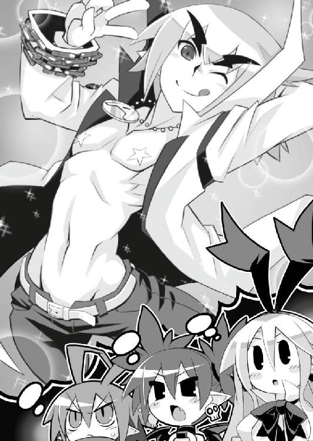
「ヤツならばたしかに『濃い』ぞ！」
「地獄の獄長を勤めていた経歴も間違いない！」
「ヴェルダイムでも長いこと自称ダークヒーローやってたよ！」
追って確認しても間違いない。二つの魔界に長く滞在していた珍しい経歴を持つ悪魔、確実に、ヤツだ。
「おや、本命の方を思い出したのですか。それなら、これで先ほどの敵の弱点を叩くことができそうですね」
「ハァ〜ッハッハッハッ......！ その通りだ！ さっそくアクターレがどこのどの時間に居るのか見つけるがいい！」
「もう探してますよ」
場の流れでクリストにも俺たちが目的の相手を思い出せたのがわかったらしく、得意の千里眼が目的の悪魔の所在を追う。
名前さえ分かれば、こいつの能力が目標の所在をすぐに見つけ出すことだろう。あとはリングで飛んでアクターレ同士の接触をオレさまたちが防ぐだけだ！
幕魔４．乱心ささやきクーデター 暗雲の邪悪学園
あたしとヴァルびーがアクターレのことを思い出して、クリりんが千里眼を使うと男三人は作戦という名のアクターレ・ボコボコプランを考え出した。
この隙に、女たちはコソコソと屠処室の隅に集まる。エトナにものすごい計画があるって、あたしにも振られてたんだ。
このすごい大・計画がうまく行けば、あたしもエトナもセクスィー魔神になるし、フロンもセクスィー天使になるし、ラズベリルはセクスィー優等生になるしという何から何までいい事しかない計画。
でもラハールに知られたらぜったい邪魔するって言うから、こうやってコッソリ密談するんだよ。
「さて、殿下たちが盛り上がっているうちにここいらであたしたちの計画を確認するわよ」
「ハナコさんも魂の姉妹に加わって、いよいよ磐石ですね！」
「一緒にセクスィーをめざそー」
Ｍラハールはあたしたちとはエトナによると『魂が違う』ので、協力者だけどラハールたちのところに混ざっていた。男たちの注意がこっちに向かないように、うまく壁になってくれるといいな。
あと、ロザリンも魂が違う系だから、こっちには呼ばなくていい。
「ではコードネームＲさん、実験の進捗はどうですか？」
真面目っぽい顔を作って、フロンがベリルに問い掛けた。
計画はここ邪悪学園で、ベリルの友達マオの協力で進められてるみたい。
「狂子たちから聞いた話じゃ、今度は薬じゃなくジオブロックを使ってみたら、マオやじいやがそりゃもう凄い体になってたって！」
「しっ、声が大きいって」
知らずに声が大きくなるタイプのベリルが、エトナに口を塞がれる。
みんなでキョロキョロとよそ見するフリをしながら、ラハールたちの様子を見てみたけどこっちのことは気にしてないみたいだった。
「す、すまない。つまりラハール以外にでも魔体改造の効果が出せたってことさ」
「それはすごいですね。わたしが覚醒・天使......ピュア・フロンに変身するときにはせくしーぼでーでありたいです」
バッ、ババッと謎のポーズを決めながら、小声でフロンが言う。変身ヒーローの話は前にさんざん聞かされたけど、ついにフロンは自分がなることにしたみたいだ。天使って変な人ばっかりなのかな。
でも、もう効果が出るのがわかったんなら、あたしたちにも試せるかも！ 前にラハールたちと白黒魔王と戦ったとき、すごい体になったあの感覚を思い浮かべる。
「それじゃうまくここ抜けて、マオのラボにちょっと体験しに行ってみよっか？」
「いいですねっ。ぼよーんぼよーんしましょうっ」
「まだできないみたいだぜ。もう一回作りなおすから、しばらくはラボに誰も入るなって話さ。マオは最凶の優等生だけあって、完璧主義なトコがあるからね」
「慎重すぎるくらいのほうがいいかもね。なんせ自分の体を改造するんだから」
計画の成功が見えてきてみんなが盛り上がる中、エトナはさすがに冷静だった。うーん、オトナの悪魔って感じがする！
「そうなると、わたしたちは計画がバレないようにもう少しがんばる必要がありますね。謎の敵事件のほうももうちょっとで解決しそうですし、皆さん一緒にがんばりましょう」
フロンの声でみんなは拳を固めて、それぞれに計画成功への意思を表情にした。
「フフフッ......、地獄の狼男には未来もこの体型のままだって言われたけど、あたしは未来を自分の手で変えてみせる」
「運命を変えるために戦う......燃える展開ですね！」
「そうさ、アタイたちはもう胸と背中を間違えられたりしないんだ」
「あたしは将来セクスィー魔神になるのは確定してるけど、ちょっと近道してもいいよね」
そうして、いつもやってるらしい魂の姉妹の誓いをあたしたちが交わそうとした時のこと。
「すべてはあたしたちの理想のために」
「すべてはわたしたちの────」
「おい、キサマら！ 何をコソコソしてる！」
オレさまが咎めると、屠処室の隅でこそこそやっていた女たちのグループはわざとらしくぴゅーぴゅー口笛を吹いたりよそ見したりしてサッと散らばった。
......誤魔化せたつもりか。オレさまの目はフシアナではないぞ。
ずっと怪しいと思っていたのだ。
最初は地獄へ出かける前にエトナとフロンが部屋に引っ込んで何か話していたこと。次のヴェルダイムに向かう前にも二人は遅れてきた。
その後、オレさまたちがあの謎の敵に追い詰められたときに偶然ラズベリルが来たのは何故だ？
「どうかしましたか？ ラハールさん」
「クリスト。オレさまの配下の連中が怪しい」
ハナコまでもあっちの陣営に入っているようだし、最初からラズベリルとも合流する計画だったのではないか。とすると、かなり前から練られた大規模な陰謀が動いてるように感じる。
「怪しい、とはどういうことだラハール。混乱に乗じて謀反を企てるような者たちには見えないが」
「ヴァルバトーゼ、プリニー隊の腕利き諜報員をヤツらにつけるのだ。何かを連中が企んでいることは間違いない」
女どもが固まって話をするのはもともとよくあることだが、オレさまに秘密にしているのが怪しい。エトナとフロンはオレさまが隠し事をされるのが嫌いなのは知っているはずだ。
ましてや、正体不明の敵の謎を追っている最中にまで密談をせねばならんとは、よほど重要な問題を扱っているとしか考えられない。
「おい、Ｍラハール。お前、何か知っているのではないか？」
「クックック......、オレさまは彼女らの人助けを手伝っているだけだ！」
こいつは甘ちゃんのお人よしだから騙されているのだろう。
だが、これで連中が何かを企てていることは決まったわけだ。
バカめ。お前たちが何を考えているのかはわからんが、こっちにはヴァルバトーゼのプリニー隊調査網とクリストの千里眼がある。どんな隠し事もすぐに暴いてやるぞ。
もしかしたら、今回の事件の大元の原因はこいつらなのか？
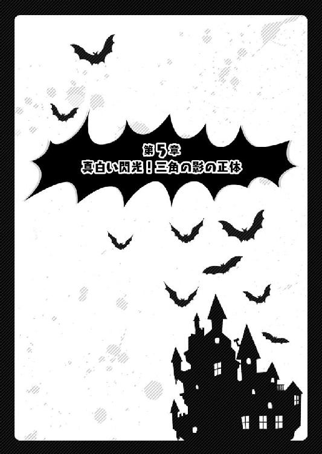
「分かりましたよ。目標の悪魔同士が遭遇する時間も場所も確実に特定できました。ラハールさんの移動リングというマジック・アイテムはどう座標を指定するのですか？」
「でかした！ この魔時次元空間界移動は、なんとなくのフィーリングだけで飛べるのだ。さぁ、どういう場所か言え、クリスト！」
『千里眼のリチェルカ』を用いてアクターレ同士が出会う瞬間を特定したクリストは、しげしげとオレさまのリングを眺めたあと、目的地を告げた。
「地獄の三ヶ月前です。獄民的な休日にあたる日のようですね。これだけの情報でいいんですか」
「うむ！ 行けるはずだ」
「興味深いアイテムです。使えるかもしれない......」
やらんぞ？ モノ欲しそうなクリストから移動リングを引き離し、オレさまは魔力を込めて過去の地獄に向かうゲートを開く。
女どものことも気になるが、まずはオレさまに撤退を選ばせたあの憎たらしい敵を悪魔的な策謀によって戦わずして消し去ってやるのだ。ヤツらのことはその後で良かろう。
「行くぞ！ ハァ〜ッハッハッハッ......！」
オレさまの大魔王の風格にじみ出る高笑いに続き、一同は次々にゲートへと飛び込んだ。
辿りついて見れば、たしかにいつもの地獄とは雰囲気が違うようだ。地獄特有の重苦しい邪悪な空気はそのままながら、活気が溢れている。特に労働力であるプリニーどもがやたらうろうろしている所から見て、獄民の休日とやらにちゃんと来れたようだ。
「地獄にも祝日があるんですねー。今日は何の日なんですか？ ヴァルバトーゼさん」
「禁牢感謝の呪日だ。今日は仕事を休んでも投獄されないという日で、初代魔界大統領が定めたプリニー法にも制定されている」
フロンに聞かれたヴァルバトーゼは、いささか誇らしげに答えた。
ヴァルバトーゼの案内でアクターレの現れそうな場所に向かいながら、オレさまは考えるともなく考える。
地獄というところはプリニーに甘い所だな。だが、このイワシ吸血鬼は地獄のこういうところがきっと気に入っているのだろう。
思えばヴェルダイムには魔界らしくないのどかな気風があるし、邪悪学園にはもちろん学園生活という独特の暮らしがある。フロンも良く天界のすばらしさをしつこく語っていた。
オレさまの魔界は、どういう場所であろうか。
自分の住んでいる場所はなかなか、こうだ、と評価しづらいものである。しかしもし、オレさまがどの魔界でも好きな場所を治められるとしたら......きっとやはり今の魔界を選ぶことだろう。
ではなぜ、アクターレは違う魔界へと移り住んだのか？
ハナコやアデルたちの反応からして、迫害を受けていたというのでもあるまいし、ダークヒーローとやらがうまく行かなかったか、単に肌が合わなかったのだろうか？
クリストの魔界はどうだろう。
「クリスト。お前の猿巨大魔界というのはどういう場所なのだ？」
「猿......、なにかデジャブが......。ま、まぁ、さる巨大魔界はとても清らかで美しい場所ですよ」
「魔界なのに清らかだと？」
「へぇ、アタイたち不良には楽しそうな場所だね！」
ピンとしっぽを上げたラズベリルにも食いつかれ、急に慌てた様子でクリストが繕う。
「えっ、ええ、そう、そうです！ 別名『潔癖魔界』とも呼ばれ、侵入してきた弱小悪魔など即座に追放されるのですよ！ 良いところですよ！ はは、あははは」
「フン、聞いたことも無い話だな」
よくは分からんが、こいつもこいつなりに自分の魔界に愛着があるのか。
本来の歴史では、オレさまは自分の魔界を消滅の危機から救って英雄になるという。それは故郷への愛着のためか？
いや、違うだろう。単に魔王であるオレさまの所有物が勝手に潰されるのは気に食わないだけだ。もし何かの拍子に滅茶苦茶になってしまったら、さっさと別の魔界を征服しに行くだろう。
人間どもも自分の世界を汚し尽くして魔界を侵略しに来たことがあったではないか。
そう考えると、何かの理由があればアクターレのように別の魔界へと移り住むこともおかしくはないのかもしれない。
そんなとりとめもない考えを巡らせているうちに、目的の場所についたようだ。
やって来たのは、オレさまたちがこちらに来たときにいつも地獄のメンバーと会う場所、ヤツらの拠点だった。
いつもの狼男と天使、あとはまるでプリニーのような格好の女と見慣れない種族の小さい悪魔、そして死神の小僧が居た。こいつらはかつてヴァルバトーゼと共に戦った連中だろう。話にだけ聞いたことがある。
ヴァルバトーゼの姿を認めた途端、フェンリッヒが立ち上がり恭しく礼をする。
「閣下、どうなされたのですか？」
「いや......」
しばし反応に戸惑う。
「さっき出て行ったばっかじゃん。ヴァルっち忘れ物？」
「ポケットティッシュだと思うデス。ヴァルっちさんは生イワシを手づかみで食べるから手が汚れるのデス！」
「小娘ども、ヴァルバトーゼ様をそのような名で呼ぶなと何度言ったら......！」
どう返したものかと考えるヴァルバトーゼに、プリニー女のフーカとその妹分デスコがヒントを与えてくれた。
ここは過去の地獄なのだ。おそらく、この時間軸に本来居るヴァルバトーゼはつい今しがた出掛けたところなのだろう。
「先ほど邪悪学園で調べた通り、同一人物は通常出会うことはないようですね」
「リングでの移動も、うまくヴァルバトーゼ同士が出会わないように調整されたということか」
クリストの発言で起こっている現象を確認する。
『レッサーデーモンでもわかる！ 歴史改変のふしぎ一〇〇れんぱつ』は相当うさん臭い書物だったが、書かれてあった現象が再現されたのを確認したことで信憑性が増したということだ。
「俺の事は好きな呼び方で呼べば良い。それよりフェンリッヒ、今から奇妙な話をする。少し俺の話を聞け」
ヴァルバトーゼは今までの経緯と、ここに来た目的とを場の連中に語る。
三ヶ月後の未来からオレさまたちはやって来たこと、過去が歪められていること、正体不明の敵が全宇宙の頂点に立っていること。
いくら奇怪なことがしばしば起こる魔界とはいえこの話は奇抜に過ぎたようで、連中の反応はさまざまだった。
「ちょっと突飛すぎて、俄かには信じがたいですけれど......」
「ヴァルバトーゼ、イワシネタ以外でも開拓しようとしてるのか？」
アルティナは小首を傾げて思案し、エミーゼルはまったく信じない。
「はぁ？ 夢でも見たんじゃないの？」
「頭を打ったに違いないのデス。もう一発殴って戻すのデス！」
フーカは頭からバカにしてかかり、デスコのほうもヴァルバトーゼがおかしいと思ったようだ。
「左様でございましたか。ではこの現在、いや閣下にとっては過去の地獄でどのような対策を取れば良いのでしょう。なんなりと、このフェンリッヒにお申し付け下さい」
だが、フェンリッヒだけは違った。
こいつはヴァルバトーゼの言うことならなんでも鵜呑みにするタイプではない。ヴァルバトーゼの執拗に薦めるイワシを食わないのがその証拠だ。
自分の仕える相手が下らないジョークは言わず、またこのような嘘を言ったところで意味がなく、ただの記憶違いを確認もせず話ような男ではないと知っている。だから、即座に信じたのだ。
そのあと、フェンリッヒが小声で一人ごちるのをオレさまは聞き逃さなかった。
（過去を改変できるのなら、閣下に血を吸わせ強大な力を得ていただくことも可能か......？）
「過去は容易には変えられんようだぞ、狼男」
こいつも過去改変を利用したいクチか。一応、言っておいてやる。
「ふん。なんのことかわからんな、ラハール」
自分の部下に持つのはいろいろな意味でご免だが、有能なヤツだ。
「まず尋ねたい。地獄で現在獄長を務めているのはアクターレか？」
「その通りです」
予定通り、ここはまだ時間の流れが歪んだ場所ではない。あとは謎の敵の誕生を防ぐだけだ。
「もうじき、別の次元、時間からもう一人のアクターレがやって来る。アクターレ同士が出会わんよう、阻止するのが我々の目的だ」
説明は全部ヴァルバトーゼに任せたがちょくちょく脈絡なく挟まるイワシの話を連中は華麗にスルーし、作戦を理解したようだ。さすがに慣れている。
肝心のアクターレがその場に居なかったので、オレさまたちは待ち伏せをすることにした。もう一人のアクターレがここにやって来るのは、時空の渡し人のゲートからのはずだ。
前の事件でオレさまとＭラハールが移動リングを濫用したとき、ゲートの繋がりが乱れて時空迷子が出た。あの現象に巻き込まれてヴェルダイムのアクターレは地獄へと飛ばされてくるはず。
「それにしても、なんでキサマら全員で来るんだ......」
そんなオレさまたちの後ろには、さっきまでのメンバーに加えて地獄の連中もどやどやと付いてきていた。
「だってアクターレをボッコボコにするんでしょ？ 面白そうじゃない」
「一寸刻みにしてくれるデス！」
「これでは待ち伏せにならんではないか！ 曲がり角から飛び出して殴り倒すつもりだったのに」
数えてみれば、全部で一一人もいる。サッカーでもやるつもりか！
「強力な敵の排除のためとはいえ、悪魔はともかく天使の方々まで闇討ちの暴行に参加して良いのですか？」
楽しそうな連中の中、微妙に不安そうにしてるのはクリストだ。
「問題ありませんわ。殺して死ぬような者ではありませんから」
「殴り合いで語り合うみたいな感じですよっ。きっと友情が芽生えます！」
「まぁ、お二方が良いなら良いのですが。......これも経験ですか」
あまり考えてないであろう駄天使のフロンはともかく、純粋な天使のアルティナさえ毛ほども問題に感じてないようだった。
むしろ地獄のメンバーのほうが、楽しそうにしている気がする。過去に何か酷い目にでもあったのか？
プリニーどもによると、獄長のほうのアクターレがゲート付近まで戻ってくるのはまだしばらく掛かるということで、オレさまたちはその間に昼食を済ませることにした。
「おい死神、形だけはお前が地獄のトップなんだろう？ ランチにおすすめの店はどこだ？」
「いきなり失礼なヤツだな！ ボクは正式に民衆に選ばれた大統領だぞ！」
民衆に選ばれるというのがそもそもわからん。魔界のトップというのは力でのし上がるものではないか。
どう見てもヴァルバトーゼのほうが強そうだぞ。地獄というのはつくづくおかしな魔界だ。
「......まぁ、いいか。今日は禁牢感謝の日だからやってない店も多い。地獄カレーの店でどうだ？」
「おっ、そいつはアタイがＭラハールと地獄に来たときに入った店だ。中辛がおすすめの店だね」
店内に入ると極めて地獄っぽい内装が施されている。錆びた拷問器具や得体の知れない魔獣の剥製などに加え、客席のすぐ後ろには溶岩まで流れている。
運よく団体客が帰って、すぐに一一人分の席を確保することができるようだ。オレさまたちはぞろぞろとカウンターに横一列に腰掛ける。
「いらっしゃいませ〜」
「地獄カレーとは、いかにも地獄料理っぽくて良いではないか。現地の名物を食べるのは旅の楽しみだな！」
「そのセリフ、一時一句同じのをＭラハールが言ってたよ。やっぱり分身なんだね」
「うるさい。あんなムチムチと一緒にするな！」
ラズベリルの指摘を否定しつつも、辛口と甘口は絶対頼んではダメだという忠告を聞く。
魔王城ではロクなメシが喰えないので、出先の食事では失敗したくない。ここは素直に中辛を頼んでおこうではないか。
一〇人が地獄カレー中辛を頼み、ヴァルバトーゼだけが何も注文しなかった。邪悪学園でイワシを食い過ぎたに違いあるまい。
手際よく十人分のカレーが提供されて、オレさまはスプーンをちょいちょいと水につけてから地獄カレーを貪り始めた。
「うむ、うまいな！ プリニーどものメシとはわけが違う」
ガツガツと喰いながらも、集いに集った一一人は雑談を交わした。
ここで前にもカレーを食ったという話から、まず、ラズベリルが話し出した。
「ここでアタイはＭラハールと、ニチカ......魔王ゼブランダーと一緒にカレーを食べてね」
「フン、ヤツか。どうせ激辛か激甘を注文したのだろう」
魔王ゼブランダーはオレさまが先の戦いで打ち破った魔王。
軽く補足しておけば、何事も白黒つけてハッキリさせねば気のすまないおかしなヤツで、カレーは激辛か激甘、色は白か黒、水は氷水か熱湯でなければ怒るという変魔王だ。
「あいつも思えば可哀想なヤツだったとアタイは思うんだ。詳しい話は知らないけど、迷いがあったせいで親父さんを亡くしたらしくてね」
ヤツの治めていた魔界については、オレさまも少し知っている。
先代、つまりオレさまの親父とあの魔界が休戦協定を結んだのは、ゼブランダーの親父であるたしか魔王ジャチバクとかいうヤツのはずだ。
「最後の戦いで、アタイはラハールがニチカを殺しちまうんじゃないかってヒヤヒヤしたんだよ。でも違った。ちゃんとニチカを許してやったんだ。アンタは立派な魔王さ、ラハール」
「そうではない。中途半端を嫌うヤツを、生かさず殺さずの状態で捨て置いて苦しめたのだ」
ちゃんとその場でも言ってやったものを。わからん奴だ。
「それでもいいさ。アンタはやっぱり、立派な魔王だと思うぜ！」
邪悪学園の不良生屠というのはおかしな悪魔だ。まったく、相手をしてられん。
少し会話が途切れて、皆のスプーンの音、マグマのように赤い福神漬けを咀嚼する音が響いた。
沈黙を破るように、ぼそりと口を開いたのはクリストだ。
「立派な魔王といえば......。僕は現在、さまざまな魔王を集めた連合軍の一員として戦っていたのです」
召喚されたときもそんなことを漏らしていたような。魔王というのも近頃ずいぶんと多くなったものだと思う。
「その中に、兎兎魔界という争いを好まない悪魔たちが住む魔界の跡取り娘、まだ幼いウサリアという少女の魔王がいましてね。彼女が大のカレー好きだったんですよ」
「その、どこが立派なのだ？」
ふふふ、と小さくクリストは笑った。
「彼女は元はカレーが大嫌いだったんですよ。自分の魔界を滅ぼされ、さらにカレーを食べなければならない呪いを掛けられ......、そんな困難な境遇でも幼い体で魔王としての勤めを果たそうとしていたのです。魔王など暴虐のままに生きる者というイメージだったので、カルチャーギャップでした」
自分も魔王と言ったクセに、何を言っているのだこいつは。
だが魔王、魔王級悪魔も千差万別ということについては納得が行った。
オレさまのようなカッコイイ魔王もいれば、ロザリンドのような色ボケ魔王、マオのようなうさん臭い魔王、ヴァルバトーゼのようなイワシ魔王もいる。無論、ゼブランダーもおかしな魔王だ。
「そういえば、キリア......僕たち連合軍のリーダーですが。彼がウサリアのために作ったイワシカレーは、まさしく天にも昇る味わいでしたね......！」
イワシ、という単語が出て、当然食いつく奴がいる。
「何ッ、イワシ・ザ・カレーだと！ そのような組み合わせがありえたのか！ おい店主、イワシカレーだ！ イワシカレーをこの俺につくれッ!!」
ヴァルバトーゼがメニューにないイワシカレーを作らせて、地獄カレー店へのオレさまたちの滞在は少しだけ伸びることになる。
それにしても、これだけイワシ、イワシと騒いでもう一人のこの時代のヴァルバトーゼが現れないあたり、やはり事前に調べた通り、同一人物同士は通常遭遇し得ないようだ。
全員がカレーを、ヴァルバトーゼもイワシカレーを食べ終えて店を出ると、通行人を装っていたプリニーの一匹がすばやく寄ってきた。諜報員のようだ。
「ヴァルバトーゼ閣下、まもなくアクターレがゲート付近を通る模様ッス！」
「ご苦労。諜報部隊には特別報酬としてウルメイワシを出そうではないか！」
「ウ、ウルメイワシと言ったらイワシの中でもワンランク上の！ ありがたいッス！ これからも誠心誠意、閣下にお仕えするッス！」
時間のようだ。オレさまたちはカレーで満たされた腹をさすりつつ、何気ない風を装って時空ゲート付近へと向かう。
「オレ様〜は獄長アクタ〜レ〜♪ 強くてエラくてカッコイイぜ〜、ＯＨ！ ヤバイぜ〜♪」
調子っ外れの歌を口ずさみながらアクターレがぶらぶらと歩いてくるのが見えた。なにやら上機嫌なようで、警戒心のカケラもない。これなら襲撃も簡単だ。
「おっ、新大統領にみんな揃って、それに別の魔界の連中までどうした？ ははーん、さては休日に出かけるのに主役のオレ様が居ないと始まらないと思って迎えに来たんだな？ ＯＫ、オーケー！ みんなの期待には答えなくっちゃあな！ さぁ、オレ様は」
自信満々の顔で目を瞑り、両手を広げてぺらぺらと語リ出すアクターレに、容赦なく全員で飛び掛った。
こいつを問答無用でボコボコにし、殴り倒せばもう一人のアクターレと接触することはなくなるのだっ！
「かかれっ！」
「えっ、ちょっ」
いきなりのことに驚く相手に、実に楽しげな一一人の拳が雨あられと振りそそぐ。
「いくよ！ デスコ！」
「はいデス！ 一秒間に一〇〇発殴るデス！」
「ボクも前から一回殴りたかったんだ！」
「アタイのこの拳は愛だよ！」
「いいですよね、愛！ えいえいっ」
「オラッ！ これでトドメよ！」
「ふむ！ 何事も経験ですね」
一一人掛かりで囲んで顔から腹から足腰、肩頭と殴られてない場所はないレベルでむちゃくちゃにされ、数秒でアクターレがボロキレのようになる。
「わーい、くたばれー」
「お前には苦労させられた。この機会にたっぷり殴らせて貰うぞ......！」
妙に恨みのこもった拳をフェンリッヒが、無邪気な残虐性をハナコが執拗に叩き付けていたが、どうしたことかアクターレは一向にダウンしない。
「しぶといヤツとは聞いていたが、まさかここまでとは！ メテオインパクトでもかましてみるか！」
「や、待って下さい殿下。なんか様子がおかしいですよ？」
上空に隕石を召喚したが、エトナが何か言うのでまずはアクターレをよく見てみる。放置された隕石はどこかへ落ちて爆発した。
「や、やめろ、やめっ！ ......あれ、痛くないぞ!?」
自分でも口で言っているが、アクターレが途中から痛みを感じてないようなのだ。ボロボロ、フラフラにも関わらず激しい攻撃を防御姿勢もとらずに無傷でしのいでいる。
この様子、見覚えがあった。
「気をつけろ、ヤツが追ってきたぞ！」
ヴェルダイムで戦った、あの謎の敵だ。ヤツも異様な防御を誇り、まったくこちらの攻撃を受け付けなかった。
「上から来ます！ 気を付けて下さい！」
クリストの警告とほぼ同時に、上空から小さな影が降りてきた！ ヤツだ！
「この奇跡☆の誕生を無かったことには......させないぜっ！」
当人の無敵ぶりも大概なのに、他人にまで無敵の守りを与えられるなんて、こいつは本当に一体何者なんだ!?
「キサマ、どうやって追ってきた！」
「我々は元より普遍の存在。フフッ、追う必要すらないんだぜ！」
「我々......だと!?」
敵の出現に一同が気を取られた隙をついて、ぬるりつるりとアクターレが包囲から逃げ出す。
「あっ、アクターレが逃げた！」
ハナコが追いかけるが、伸ばした手はわずかに届かず。逃げ出したアクターレのすぐ目の前に、いつのまにかもう一人のアクターレが来ているではないか！
獄長アクターレが後ろをチラチラ振り返りながら走り、前からはよそ見して鼻歌を歌いながらヴェルダイムのアクターレがやってくる。
「そいつを止め────！」
アクターレ同士の距離、三〇センチ。状況がスローモーションで見えた。
オレさまの撃ち出した魔力弾が獄長をかすめる、びっくりした獄長が道端の石に蹴つまづく、エトナの槍がその頭上を越えていく、フロンの放った光の矢がもう一人の足に当たる。
「ちょっ、そこでコケ────!?」
「手元が狂っちゃいまし────！」
距離、一〇センチ。声も出ず、状況はほとんどコマ送りで見える。
足を打ったもう一人がふらつき、石につまづいた獄長がつんのめり、まったくの偶然で二人のアクターレ同士の頭が......激突する。
ゴツン、と重い音がしたと思うと、まばゆい光が溢れた。
同一悪魔の接触した場所で発生した光は、こころなしかアクターレ自身に似た輪郭を形成して宙へと飛び出す。
同時に、頭をぶつけた二人のアクターレは互いに接触部へとみるみる引き寄せられて、一つの空間に二人の存在となって奇妙に重なり、じわじわ単一へと同化しつつあった。
アクターレ同士の融合によって弾き出された光は、魂そのものである。オレさまはどうにかそいつが宙空に居るうちにひっ捕まえてやろうとしたが、空間の歪みに阻まれて思う様に近づくことができなかった。
そのまま魂は素早くめまぐるしい動きで二、三回と宙返りをして閉店中の名も知らぬ店の屋根を飛び越え、隣の通りに落ちていった。
数秒ののち。地の底から大地を揺るがすような地鳴りが、いやいや地鳴りはさらに大きくなる。地獄という魔界の基盤そのものを揺らすような、いや、宇宙の中心軸がぐらつくような轟音が響きだす。
宇宙どころではない、これは時間震、時間そのものが揺れる音なのだ！
「くそっ！ まさか妨害に失敗するとは！」
一度定まった時間というのは、ここまで頑固なものだったのか。
あの向こうの通りで何が誕生したのだ？ そいつがこの場で生まれた場合、オレさまたちを妨害しに来た、現在、空よりオレさまたちを見下ろしているあの小さい敵はどうなる？
いくつかの地獄風の鋼鉄の建造物に遮られた向こうで、青白い色と乳白色の光が間欠泉のように弾ける。
「誕生の光です......！」
どうにかクリストだけがそう言って指差したが、誰も目くるめく閃光に正視も叶わず。
やがて光が薄れていくにつれ、そこに生まれた何者かの気配が俄かに感じられ始める。こちらへ向かってくる。
すべての疑問を解消する不明なる敵の正体が、今まさに姿を現さんとしていた。
通りの向こうから浮かび上がってきた影と、オレさまたちを妨害しに来た空に居る敵、ほぼ同じ姿をしている。追ってきた方はローブを、今しがた誕生した方は襤褸をまとっていた。どちらもかなり小さい体で、シルエットは三角形。
二つの影が同時に同じ言葉を発した。
「ついに、我々は、誕生したぞ......!!」
時間震の余波か、世界中の音が消えたような静謐の中でゆるやかに二つの影が近づいていく。
敵の真下にはついに二人が一人となり、つぶれた昆虫のように路面にヒクヒクと蠢いているアクターレがいる。殺しても死なないとの評価通り、生きているようだ。
オレさまたちはもはやアクターレは無視して二体となった敵に対して油断無く身構える。
「二人に増えちゃいましたよ！ どうなってるんでしょう......？」
「同じヤツ同士は出会わないようになってんじゃないの？ ズルくない？」
フロンとエトナが口々に言う。
あれだけヤバイ奴がもう一人出て来たのだ、そんなことを抜かしてる場合ではないのだが、どうしていいのかもわからない。
緊張の面持ちでオレさまたちが見守る中、二体の謎の敵は身を隠すヴェールを脱ぎ捨てる。
「キっ、キサマは!?」
オレさまの目に飛び込んできた敵の正体、それは、魔界最下級の悪魔であるプリニー以下......というよりも単なるオブジェクトでしかない存在だ。
さまざまな魔界天界に無造作に散らばり、周囲のジオパネル地形に影響を及ぼしている奇妙な物体が口を利いている。
今までは気にも留めず、ただ投げたり潰したりしてきた存在。
ヤツは、ただのジオシンボルではないかッ！
「ただのジオシンボルが敵だとっ!? 史上最弱の敵ではないか！」
「アクターレの魂から飛び出した『余りの魂』を受け取り、我々は生命を得たのだ！ もうただのオブジェクトとしていい加減な扱いはさせないぞ！ 今までさんざん壊しまくりやがって！」
ピラミッド型の小さなボディに目鼻がついたいい加減な造形のそいつは、もう一人の自分と合体して八角形となる。
合体した拍子にアクターレの姿をした『余りの魂』がまた飛び出す。そいつはまた、手近なジオシンボルへと飛び込んだ。
「お、お、おい。キサマ、まさか」
「フフフフフッ!! こうやって、合体しては魂を余らせ、新しい仲間に命を与え、さらに合体して合体して合体して合体して合体して！」
全次元から光と魔力の尾を引きながら、無尽蔵の数のジオシンボルが集まってくる。
こいつがどうやってヴェルダイムにきたのか、どうやって地獄へ追ってきたのか。それがわかった。最初から、そこ居たのだ。こいつはどこにでも居たのだ！
「待ちなよ！ 同一の個人は狙って出会えないんじゃないのかい!?」
ラズベリルがズルを指摘するも、相手は余裕だった。
「うるさい！ お前らが我々を個人として認識したことが一回でもあったか!! 全消しとか言って特に意味もなく壊しまくってたくせに！」
「うっ......、でも、だってアタイはただのモノだと思って」
「あー、なんかフロンが好きそうなカッコになってくよ！」
合体を繰り返し、新たな同胞を呼び寄せるジオシンボルは徐々に巨大な姿となっていく。
「目指せ、ジオシンボルの究極形態！ さらに合体してぇ！ 合体して合体して合体して合体して合体して合体して合体して合体して合体して合体して合体して合体して合体して合体して合体して合体して合体して合体して合体して合体して合体して合体して合体して」
そしてついに完成したジオシンボルの大、大、大集団の集合体は、地獄のすべての建造物よりなお大きい巨大な人型をとった！
「我々はっ......！ 始源のっ......！ ジオ・シンボルゥ......っ！」
巨大な人型がガシーン、ガシーンと重厚な音とともに右腕、左腕と順番にポーズを決めていく。
そしてガキーンと謎のキメ音も勇ましく仁王立ちとなると、アクターレの魂を格納したソリッドな表面に、キラリとメタリックな光が走った！
「完成ッ！ 究極合体・ジオプライマルッ！！！」
幕魔５．史上最大の侵略
ジオシンボル、ジオブロックが生命を持ち動き出したのは、何もラハールたちのいる場所のみではなかった。
ありとあらゆる場所で一斉にすべてのジオシンボルが意思を得て蠢き始め、反旗を翻したのだ。魔界、天界はおろか人間界や宇宙空間、アイテム界の中にまでどこにでも普遍的に存在するジオシンボルは、まさにその数、無限。
たちまち各地で壮絶な戦いが巻き起こった。
大爆発とともに、魔王城上部が吹き飛ぶ。
眺めの良い平原には、いつもならのどかに花火大会気分で城を眺める悪魔たちが居ただろう。しかしそこには飲みかけの殺ポロビールの缶と、食べかけのおつまみ類が転がるばかり。
魔界の全悪魔が、今、全力を持ってジオシンボルと戦っていたのだ。
「ギャーッ！ オレたちじゃ守り切れないッス〜〜っ！」
「まさかプリニーがさらに下から下克上されるなんて、想定外すぎッス〜っ！」
プリニーたちを蹴散らしながら、中型のジオシンボル兵たちが魔王城を侵攻する。
直属の配下であるエトナとフロンは連れて出ていたし、ラハールには後を任せられる信用に足る部下は他にない。そもそも誰にも何も言付けていなかった。
「これからは我々ジオシンボルが、悪魔も天使も人間もしのぎ、頂点に立つんだぜーっ！ 手始めにこの魔王城の悪魔を『全消し』してやるっ！」
「う、うひぃ〜っ!? ムチャクチャッスーっ！」
プリニー以外の悪魔も続々と集まっているのだが、誰にもジオシンボル兵の侵攻を止めることができない。ラハール不在の間に、もはや魔界の命運は風前の灯であった。
見渡す限りの草原を紅蓮舌が舐め、のどかな風景が一転して煉獄と化す。田舎風の人間と牛馬はなすすべも無くジオシンボル兵から逃げ惑うことしかできない。
ヴェルダイムの被害は甚大であった。
ロザリンドとアデルの一家、主要な戦力がまるごと不在なのである。
「あわわわわ......、なんでこんなことに！ とにかく逃げないと〜！」
さっさと荷物をまとめて、勝手に住み着いた古城から逃げようとする悪魔はティンクだ。
城の外からはプリニーの爆発する音が間断なく聞こえてくる。ここもじきに敵の手に落ちるだろう。
「やれやれ、あんな連中と戦うなんてバカだよバカ！ ぶぁーか！ 何と言っても命あってのモノダネですからね！」
古城の門からこそこそ外の様子を窺い、他の悪魔たちが必死で戦っているのを囮として逃げ出す。
走り出したその一歩目、ティンクはいきなり人影とぶつかりそうになってギリギリ足を止めた。
「てめぇ！ あぶねーだろぶつかるじゃねーか！ 目ぇ付いてんのかオラっ！」
「おお、ティンク殿！ ティンク殿も今から向かう所でゴザルか！」
人影が急に現れたと感じたのも無理はない。相手は忍者、雪一族の女忍者・雪丸であった。
「おお、雪丸じゃねーか！ 向かうってどこに向かうんだ？ 敵から安全な避難にピッタリのちょーイカス女子更衣室でもあんのか？ すぐ案内するでゴザル、さぁ、今すぐ！ ナウ！」
ティンクはぴょんぴょん飛び跳ねながらまくし立てたが、雪丸は笑って応じた。
使命ひとつ失敗するたびに自害しようとする彼女が、そもそもこのヴェルダイムを捨てて逃げ出すはずなどないのだ。
「またそのような冗談を。神螺の塔に向かうのでゴザろう？」
「神螺の塔！」
ティンクはその名に明確な憶えがあった。そこにはジオパネルに人生ささげて一万年、ジオシンボルに掛けてはプロ中のプロであるジオじいさんが住んでいるのだ。
ジオじいさんの手を借りれば、殲滅することまではできなくともジオシンボル兵どもの苛烈な攻撃を防ぎ、ヴェルダイムの多くの悪魔と人間とを救うことができるだろう。
ティンクの中に打算的な考えと人道的な考えが交錯する。
答えは、すぐに出た。
「フッ、モチロンですよ雪丸さん。ボクちんは悪魔と人々を救い、ハーレム......いやいや、平和なヴェルダイムを築くつもりで出発するところだったんです！」
「さすがはティンク殿！ きっとすでに敵は塔を攻めて居るはず、拙者も共に参るでゴザル！」
このとき、雪丸の兄は雪しらべの里を守るために過酷な戦い行っている。ヴェルダイムの命運は、ティンクと雪丸の二人に託されたのだ。
その頃、邪悪学園では多数の戦力が終結し、倒しても倒してもきりの無いジオシンボル・ジオブロック軍団と対抗していた。
「明日禍さん、身の毛もよだつ不良コンビネーションを見せ付けてあげましょう！」
「もちろんですわ、狂子さん。ワタクシたちで、お姉さまの留守を守りましょう！」
リリアンの狂子と折り鶴の明日禍は二人、背中を合わせて迫り来るジオシンボル兵に対峙する。
そんな二人が戦う凶室からは、隣の校舎の屋上で戦う伝説の十紳士たちの姿が見えた。さすがに十紳士は強く、どうにかジオシンボル兵の侵攻を押し留め得ている。
「危ないですわ、明日禍さん！」
「ごめんあそばせ、狂子さん！」
背後から襲い掛かった小さなジオブロックを、明日禍が一刀のもとに斬る捨てる。敵はまだまだ居た。
彼女たちには退けない理由がある。
彼女らが敬愛するお姉さま、ラズベリルがあれだけ毎日欠かさずホコリ一つ残さず清掃し、花瓶には花を飾り、月に一度はワックスも掛けている凶室が、無残に荒らされているのだから。
「明日禍さん！ ワタクシたちに守りきれるかしら？」
「守って見せましょう、狂子さん！ そしてお姉さまが帰ってくる前に、大掃除も済ませるんですわ！」
戦力を考えればヴェルダイムにははるかに状況はマシだが、それでも無尽蔵に沸いてくるジオブロック相手に生屠たちの疲弊は免れない。
廊下を、大量の生屠たちが走っていくのが二人の視界の隅に認められた。生屠たちを先導する者の声も、かすかに聞く。
「ステラ！ 私が壁を壊すから、このまま行こう！」
「わかりましたわ！ さぁ、皆さん、このわたくしについてくれば、エレガントに避難させてさしあげますわ！」
率いていたのは転校生のルチルとステラだ。
今は魔立邪悪学園の分校となっている魔神学園はすでに陥落し、避難生屠たちを受け入れるという校内放送が先ほどあった。かつての魔神学園生屠会長ステラと、その親友ルチルが自らその先導役を買って出たのだろう。
避難生屠たちを見送る狂子と明日禍の前に、さらに数体のジオシンボル兵が現れる。
「撫子の構え！ 行きますわよ、明日禍さん！」
「白百合の舞い！ ええ、狂子さん！」
「「不良・ドッキング!!」」
二人の不良による、正体不明のお上品な合体技が大型の敵兵二体を一度に撃破する。しかしまだまだ敵は居た。
これ以上お姉さまの帰るべき凶室を荒らさせるわけにはいかない。それでも、戦い続けるのは限界か......と思われたとき、二人の背後から声がした。
「なるほど、我の超邪悪魔体改造ブロックが無くなったのは、ジオブロックどもの叛逆のためだったか。これがラハールたちの追っていた事件だな」
現れた援軍は、マオたちだった。
魔王マオにじいやにアルマースにサファイア姫、他にもぞくぞくと援軍が駆けつける。
「ハァハァ......じゅるる......、キサマらも解剖して調べさせろ！」
邪悪学園はいまや、優等生も不良も凶師もひとつだった。
魔王城に視点を戻せば、そこはすでに戦線崩壊が始まっていた。
実にすでに六割以上がやられたプリニーたちを初めとして、次々と魔王城からの撤退が始まっている。
どうにか倒し果せたジオシンボル兵の残骸と崩れた城の瓦礫の中、プリニーがプリニーに蹴つまづき、ゾンちゃんが自分の片腕を探し、戦士アーチャー魔法使いといった集団が気付かず腕を踏みつけていく。
混乱を極める戦局の中、絶えることのないジオシンボル兵の増援が魔王城を攻め立てる。
このままでは、魔王城はおろかこの魔界そのものも長くなかろう。そういった思いで、ようやく自分の腕を見つけたゾンちゃんが寂しげに誰もいない玉座を振り返る。
そこに、中でも一際多くのジオシンボルが合体した大型兵が襲い掛かった。
「！」
驚きにせっかく拾った腕を取り落とし、まともな防御姿勢も取りえず哀れ成仏かと思われたそのとき、力強い両腕がジオシンボル兵の打撃を受け止めた。
「グッシッシッシッ！ 諦めるにはまだ早いゼニ」
「そうだよ！」
果たして、現れたのは一度はラハールを失脚させ自らが魔王に成り代わろうとした成金悪魔、ゼニスキーであった。その息子、コゼニスキーも小さな体に勇ましい表情を浮かべている。
「何しろ魔王城を修理する代金は、全部ウチのゼニスキー金融から殿下に貸し出されて、一銭も返してくれたことが無いゼニ。これ以上壊されてはやっとれんゼニ！」
「父ちゃん、またお金のこと言って！ そうじゃないでしょ！」
「すまんすまん、そうは言ってもお金が無いことには......おっと！」
ゼニスキーの巨体目掛けて、数体のジオシンボル兵が組み付いてくる。敵の主戦力はラハールのいる地獄に回されているため個々の兵はそこまで強力ではないが、数の暴力は何よりも怖ろしいものなのだ。
数押しで抑え付けられていくゼニスキーをコゼニスキーが懸命に救い出そうとするが、まだ成長過程のコゼニスキーの小躯では思うように敵を排除できない。
「ビューティーッ！」
そこへどこからともなく飛んできた一輪の薔薇が、敵兵をよろめかせる。
「おお、助かったゼニ！」
「フフフ......、通りすがりの美と愛の使者、ビューティー男爵参上！」
薔薇を投げた悪魔の姿を見て、驚いたのはまた別の悪魔だ。
「久しぶりだなバイアス、生きておったとは驚きだ」
そいつはいかつてエトナを姦計に掛け、ラハール抹殺を目論んだ悪魔、マデラスであった。彼もまた、この主不在の魔王城を守るためにやってきたのだ。
「マデラス！」
「Ｍラハール様の城を守らねばならんからな。それに」
一呼吸おいて、マデラスはマントを翻す。
「不在の殿下はどうやら最初からこの事態の元凶を追って、他の魔界に赴いているという情報だ」
もったいぶったマデラスの物言いに、ゼニスキーがニヤリと歯を見せる。
「フン、殿下も、そこそこ魔王らしくなったものゼニ」
ゼニスキーたちが現れたことで、撤退しつつあった魔王城の悪魔たちが少しずつ戦線に復帰してくる。
「じゃあ殿下の援軍に向かう？」
「いや......」
それぞれにラハールと戦ったことのある不忠の配下たちは、顔を見合わせて頷いた。
この魔王城を守るべきだ。もし事件を解決してラハールが戻ってきたとき、魔王城が綺麗さっぱり無くなっていたら、絶対に暴れまわって八つ当たりするに決まっている。
それに、ラハールたちはこの前も事件もうまく解決してみせたではないか。今度もやってくれるはずだ。
「提案、この魔王城を死守する」
中ボスことバイアスが一本指を立て、言った。
「賛成！」
「賛成！」
「賛成！」
賛成を叫ぶ声が、魔王城やその外にまで唱和する。
彼らは必ずやこの魔王城を守りきってみせるだろう。いまいち頼りないところのある自分たちの魔王、ラハールの帰るべき場所を守るために。
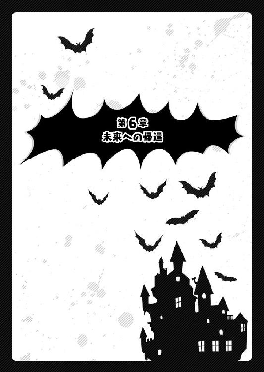
「ふおおおおおっ、ふおおおおおおおおおぉぉぉーっ！」
「落ち着いてフロンちゃん、落ち着いて頼むから」
「だって合体巨大ロボですよ!? しかも今時ガキーンガキーンってクラシックな金属音までばりばりに鳴らしての合体からの、名乗りまでついてるんですよ!? 本物の巨大ロボですよ!?」
巨大ロボのような姿を取ったジオプライマルの姿を見て、フロンが目から炎を出す勢いで興奮する。
敵だぞ！ わかってるのか！
「フロンめちゃくちゃ楽しそうだねー」
「やっぱりあのフロン様はこのフロンさんだったようですわね！」
「数十万以上のジオシンボルの集合体です、僕の眼でも確認しきれません！」
「こいつはもう、秘密の計画とか言ってる場合じゃあ無さそうだよ！」
「なにこれ!? これこそアタシの夢でしょ！ デカすぎるし！」
「デカけりゃラスボスってもんでもないと思うデス！」
「うわーっ、ボクの大統領赴任早々、なんでこんな事件ばかりがーっ!?」
胸のところにアクターレの魂が格納されているのが見えるが、あそこまで分かり易いのはきっと弱点ではないのだろう。
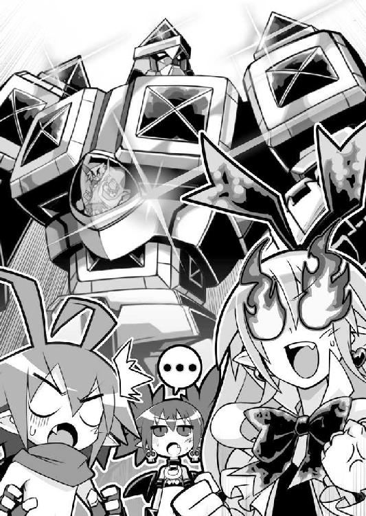
「閣下、ここで戦えば地獄の被害が甚大です！」
「わかっている、それに休日で悪魔が多く出歩いている。いち早く避難誘導をするのだ、フェンリッヒ！」
ここでもヴァルバトーゼは真っ先に地獄のことを気にしていた。よほどこいつはこの場所が気に入っているのか。
そういえば、こいつは旧魔界政腐を倒して地獄の改善のために戦ったような男だったか。
「そんなことよりも、オレさまはこいつをどうやって殴り倒すかを考えねばならんな......！」
策謀を巡らして戦わずして勝つ、そういうわけにも行かなくなったということだ。
幸い、オレさまは正面から殴り合って敵を叩き潰すのが大好きだ。正直、これだけでかい相手をガリガリ削って崩していくのは楽しみですらある。
つまりこいつは無数のジオシンボルの集合体で、個々のパーツが互いに自分のボディに
「ジオプライマル・パーンチッ!!」
「うおっ!?」
いきなり超デカイ拳が振ってきて、オレさまたちは咄嗟に散開する。何の変哲もないパンチだったようだが、避けた跡には一〇メートルは下らないクレーターが出来ていた。
おかしい、巨体とはいえいくらなんでも
「ジオプライマル・キーックッ!!」
「うおおおっ!?」
またもやいきなりの踏みつけキックをどうにか全力の跳躍で回避した。オレさまで無かったら今頃ぺちゃんこだったろう。
「おい！ 敵ボスの雰囲気を見ている間に割り込んで攻撃してくるヤツがあるか！ それでもラスボスか!!」
「そうデス！ ラスボスの風上にもおけないデス！」
「ただのオブジェクトなのでそんなセオリーは知らんねっ！ ジオプライマル・頭突きーッ!!」
オレさまとデスコのラスボス論をガン無視して、巨大なヘッドバッドが地獄の建造物群をなぎ倒す。
「くそっ、こいつ!! ムカつく!! 調子に乗るなよ、雑魚が......!!」
飛び散る瓦礫を身を翻してかわしながら、オレさまは右手に邪悪の魔力を膨れ上がらせる。叩き付けるように、全力の魔王玉を放った。
「砕けろっ！」
ジオプライマルの拳にも劣らぬほどの巨大な多数の魔力球が激突し、大爆発を巻き起こす。だが、前回同様ヤツにはごくごく僅かなかすり傷しか与えられていない。
「効かんね！」
「あああ、せっかく合体ロボなんだからあんまり軽い調子で喋らないでくださいぃ！」
たしかにコイツのやけに軽い言い回しは強さも相まって腹が立つが、そんなつっこみはフロンに任せておけばよい。
今度こそ、クリストに千里眼でヤツの弱点を分析させるのだ。
「クリスト、どうだ！ 見抜けたか！」
「それが、また何故か僕の千里眼が」
肝心なときに使えない！ いや、これもジオプライマルが何かやっているのか。
「クリりん、ちょっとこっち来てやってみてよ」
「は？ こう、ですか......？ おや、これは......！」
この緊迫した状況でも変わらずマイペースなハナコは、何かに気付いたようだ。クリストをほんの少し歩かせると、見事に千里眼が発動する。
「ハナコちゃん、どういうこと？」
「うん？ 足元に沈黙パネルがあったから」
「敵は周囲のジオエフェクトを操っていたのか！」
敵は単なるジオシンボルの集合体ではなく、ジオシンボルであったときの特性もそのまま備えていたということだ。
周囲のジオパネルを発生させ、そこにヤツの体を構成するジオシンボルから任意の特殊効果を与える。それも攻撃力と防御力、という風に二重三重に重ねがけすることもできるようだ。
そこからは一気に謎解きが進んだ。
「なんですか、これは！ 攻撃力、防御力共に＋六五五三五億％!!」
「どれだけ重ねてあるのだ！ 道理でオレさまの攻撃が通らんはずだ！」
二重三重どころではなかった。この世のジオシンボルすべてを自在に操り、望んだ効果をどこへでも与えることができるということ。
「あの異常な破壊力も攻撃力強化のためか！ 合体の折に見た通り、自身だけでなく眷属を動かすこともできるのだろう」
ヴァルバトーゼの言葉通り、敵はジオシンボルとジオブロックの全部を、ジオパネルをも好きに操作できるものと思われる。
だから最初のヤツが一個きりだったときも、周辺のジオシンボルの力を借りてあれだけの能力を示したのだ。
前の戦いでのことが、どんどんと腑に落ちていく。
「異常なスピードは移動力強化を多重に使っていたか」
「僕が前に千里眼を使えなかったのも、沈黙パネルのせい」
「あたしたちが殿下の開いたゲートに入れなかったのは進入禁止パネルのせいか！」
あの時は切羽詰っていて気付かなかったが、いつのまにかゲートの下に進入禁止の効果を重ねられていたのだろう。
ラズベリルの通ってきたゲートには、敵が対応しきれなかった。だからこそオレさまたちは邪悪学園に撤退できたのだ。
「アクターレが倒れなかったのは、無敵パネルのせいってわけかい！」
こちらもラズベリルの言うのが正解だろう。
ヤツは宇宙全体のジオシンボルを耳目としてオレさまたちの動向を追い、己の唯一の弱点である誕生の瞬間、そのきっかけたるアクターレを守るため、無敵シンボルを送り込んでいたのだ。
そして自分の誕生に立会い、自身同士で合体を繰り返して増殖し、このような巨大な姿にまでなった！
「バレたところで、我々は最強無敵！ そおれ、ジオプライマル・フライング・クロスチョップだっ！」
魔界を揺るがす地震とともにジオプライマルが巨体を跳躍させ、体の前に両腕をクロスさせた！ このまま落ちてくるつもりだ！
単純な質量だけでも未曾有の破壊力、そこに鬼のような強化が重ねられている。破壊力はオレさまのメテオインパクトの比ではあるまい。
「でっ、殿下！ 全力ダッシュで逃げますよ！」
「ラハールさん！ ぼーっとしてちゃ潰されちゃいます！」
背後も見ずに全員が全速力でジオプライマル・フライング・クロスチョップの落下地点から離れようとする。
地獄を軽く飛び出し、成層圏から摩擦熱によって発火しながら落下してくるジオプライマル。どれだけ逃げてもかわし切れるか？ 地獄全土が焦土と化すのではないか？
そんな中オレさまは一人足を止め、むしろ逆しまジオプライマルの落下点目掛けて走っていく。
激突の瞬間、誰もがオレさまの無残な姿を想像して眼を覆い、ジオプライマルは勝ち誇っていた。
それは間違いなのだ。
「バカめ！ お前の足元にはお前自身を強化しているパネルがあるではないか！」
＋六五五三五億％の強化を利用し、オレさまはジオプライマル・フライング・クロスチョップをなんなく片手で支えてみせる。
「おおっ、殿下が珍しくかしこい!!」
「ラハールという男、やはり侮れんな！」
オレさまも一緒に逃げ出していれば、全員一網打尽にされていたかもしれん。驚いたが、相手が迂闊で助かった。
いかに強大な相手とはいえ相手は所詮ジオシンボル。
「同じ強化が施されていれば、魔王たるこのオレさまの敵ではない！ ハァ〜ッハッハッハ......！ こんどこそ木っ端微塵にしてやろう！」
「おおーっと、危ない！」
超大強化を利用して殴り返してやろうとしたのに、拳がふるえない。
「マジびっくり、意味のない魅せ技の大技いけない！ 我々反省した！」
軽い調子の言葉を苦々しく聞きながら足元を見れば、いつのまにか足元のパネルが「隣接攻撃禁止」にすり変わっていた。
「くそっ！ セコい奴めッ!!」
にわかに重量を増すジオプライマルの下からすばやく抜け出す。
ありとあらゆるジオエフェクトを自由自在に操り、重ね掛けでも途中で差し替えるのでも思いのまま。こんなヤツ、倒す手段はあるのか!?
「まずはどんなパネルがあったのか思い出して行くべきかもしれないですよ！」
「うーん！ 攻撃力防御力属性強化に......」
「ジオプライマル・ローキック!!」
またこいつは考えてる最中に手を出してくる！ 今度は慎重になったのか、地味ーな小技で攻めてきたおかげで回避は容易かった。
「ラハール！ そっちに避けちゃダメだ！」
魔界大統領の小僧に言われて、また足元を確認する。回避に軽く跳んだ先には、ひそかに『さよなら』パネルが設置してあるではないか！
アレを踏んでしまったら、オレさまの様な魔王と言えど問答無用で他愛もなく投げられたプリニーの如く爆発してしまうのだ。油断も隙もあったものではない！
「ちぇーっ！ 今のでラハール一発ＫＯの予定だったのに。地獄チームはペナルティとして追放！」
「ああっ、アンタたちの足元にも！」
ラズベリルがエミーゼルたちを救出しようとするが、遠すぎる。
みるみるエミーゼル、フーカ、デスコ、アルティナ、フェンリッヒ、ヴァルバトーゼの足元に「ワープ」のパネルが現れる。
間髪、アルティナがヴァルバトーゼだけをワープパネルから弾き出した。
「吸血鬼さん！」
「アルティナ！」
残りの五人はパネルから逃れ得ない。
「うわっ」
「セコい！」
「デス！」
「閣下ぁッ！」
短い叫びを残し、ヴァルバトーゼ以外の地獄組はパネルの効果によってどこかへと飛ばされてしまう。
「くそっ、一気に五人も戦力を殺がれたのか！」
「ワープは飛ばされるだけだから大丈夫だよ。アクターレもついでに放り込どこっと」
ジオプライマルがパネルをまた変化させる前に、倒れていたアクターレをハナコがワープパネルへと蹴り込んだ。
五人とアクターレがどこに飛ばされたのかは分からない。クリストの千里眼で追跡することもできようが、どうせ地獄の果ての果てまで飛ばされているはず。
移動リングで追おうとすれば、ヤツはゲートの出口に罠を張ってくるだろう。踏みとどまって戦うほかない。
「とりあえず、全員距離を取って戦え！ 固まってると一まとめにやられるぞ！」
「わかりました、ラハールさん！ でも、どうやって戦いましょう〜？」
そんなことこっちが聞きたい。ジオプライマルの有する能力はまるっきりチートである。何か攻略法があるのか？
「我々〜はジオプライマル〜♪ 強くてスゴくてカッコイイぜ〜、ＯＨ！ ヤバイぜ〜♪」
巨大ロボのクセに、ジオプライマルがヘタクソな歌を口ずさみながら追いかけてくる。オレさまたちは足元にふいに現れるパネルを避けつつ、ひたすら後退を続けるしかない。
聞いたことのある歌だと思えば、これはさっきアクターレが歌っていたものではないか。胸のアクターレの魂に影響を受けているのか。道理でボスの威厳が無いはずだ！
「せめて、逃げながらちまちまとでも......！」
それすら封じるように足元に「遠距離攻撃禁止」のパネルが現れる。その場から動きながらならパネルから出て攻撃はできるが、これでは狙いが付けられんではないか！
ただただ、逃げることしかできないのか！
「あそこからなら、行けそうだよっ」
走り続けて、敷き詰められた遠距離攻撃禁止パネルの途切れた場所が見えてきた。ハナコが一番に飛び込む。
「ハハハハハッ！ 言っただろう！ 我々は最強無敵だって！」
それも罠だった。飛び込んだ途端にハナコの足元にパネルが現れる。ハナコの足元に現れたパネルは、「ゲームオーバー」！
「げっ、げーむおーばーですか!?」
「ゲームオーバーとかアリなのか！ というかゲームって何だ!!」
「ハナコ、あ、危なっ!!」
これをなんとか追い縋ったエトナがハナコを投げ飛ばすことで脱出させた。あと半秒遅ければ、残る六人も瞬殺されていたところだ。
「ふ〜......、助かったよ、エトナー」
「アンタがあれに乗ってたら全員道連れだって。あたしはあたしを助けただけだから」
ぱんぱんとホコリを叩いて立ち上がったハナコに、エトナは興味無さそうに手を振る。
よもやそんな奥の手まで隠し持っているとは。今のはなんとか助かったが、固まっていたらまとめてパネルに引っかかり、バラけていても罠に掛かった奴を助けられないなど、ふざけてるのか！
「これでは勝ち目が無いではないか！」
「だから言ってんじゃーん！ 我々マジ無敵だってー！ そおれ、ジオプライマル・張り手ーっ!!」
「うるさい！ 巨大なボスが気軽に話しかけるな!!」
軽い口調とともに繰り出す一撃でも、実際には地獄の地盤を削りながら迫る怖ろしい破壊力の巨大な掌である。オレさまたちは両腕を思いっきり振って、羽のある連中は精一杯羽ばたきも足して、汗を飛ばしながら必死で走らねばならない。
全力で走り続けながら、オレさまは試しに聞いてみる。
「おいフロン！ 巨大ロボ好きのお前なら、何かヤツの弱点を思いつかんのかっ！」
「自分の意思で動くタイプのロボは、感情が目覚めて人間と友情を結んで人間のために死んだりしますよっ！」
「よし、今すぐ友情結べ！」
「ムリです！ あと人間じゃないです！」
当然できるわけがない。
フロンに聞いてもやっぱりダメだったか、と思うも、相手のジオプライマルは自分が単なるオブジェクト出身なのをいい事にさんざんセオリー破りをしてきた奴だ。
そもそも、セオリーが通用する相手ではないのかもしれん。
「ラハール、思い出したぞ！」
走りながら話しかけてきたのはヴァルバトーゼだった。こいつなら、あるいは妙手を有しているかもしれん！
「どうした！ 奴の弱点でも思いついたか！」
「サンゴイワシはハダカイワシ目のソトオリイワシ科だったッ！」
「しるか！！！！！！！！」
こいつら、命掛けで戦ってる最中なのわかってるのか!?
思い出したなどと言うから、最初にヴァルバトーゼがオレさまたちの『本来の現在』についての写真を送って来たように、何かオレさまたちのまだ知らない情報があったかと期待してしまったではないか！
「ジオプライマル・両手パーンチッ！」
背後に迫る巨体から、隕石じみた二つの拳が落ちかかってくる。
「ラハールさん！ この軌道、避け切れませんよ！」
クリストが叫ぶ。
見れば両手パンチを放つと同時に、ジオプライマルはオレさまたちの行く手に沢山のさよならパネルを撒いていた。
クリストは千里眼をもって、パネルと両の拳を回避可能な場所が無いと判断したのだろう。
「避けられる場所がないなら、作るまでだッ！」
「なるほど、それは名案です！」
オレさまとクリストで振り向きざまに魔力弾を乱射し、ダメージはほとんど与えられないものの片方の拳の軌道を僅かにそらす。拳の落ちるはずだった場所には罠は仕掛けられていないはずだ。
あとは、ただただ走って避けるしかない。
「はぁ、はぁ......さすがに疲れてきたぞ！」
「ふうぅ......いつのまにかアタイたち、拠点のところまで戻ってきたみたいだよ！」
指摘通り、オレさまたちは走って走ってぐるーっと地獄めぐりをやってヴァルバトーゼたちの拠点まで戻ってきていた。
無人の拠点で、オレさまは『本来の現在』についてのことを思い出す。
フロンは天使に復帰し、エトナは魔神に向けてステップアップし、オレさまは魔界を救って英雄となった。あと、オレさまに天使の妹がいるとかなんとか......。
あの写真の時間には、生命を持ったジオシンボルなどはいないはずだ。
オレさまたちがアクターレの衝突を防げなかったのを見ても分かる通り、時間の流れというのは非常に頑固なものである。
写真の時間にオレさまたちが行くことができれば、ジオプライマルは自分の本来存在しない場所のジオシンボルやジオパネルには影響を与えられないのではないか。
ありえる。と、オレさまは考えた。
どの道、今のところ他に手はないのだから考えても仕方が無い。
「おい、キサマら！ 時空のハザマに逃げ込むぞ！」
「で、殿下！ それを大声で言っちゃったらまた進入禁止で入れなくされますよ！」
しまった、と感じたが、エトナはすぐに余裕のある表情を作った。
「......いや、大丈夫っぽいです殿下。移動リングでゲート、開いちゃってください！」
意味ありげな流し目をしつつ、エトナはしっぽの先でフロンのほうを指している。何か考えがあるに違いない。
二人が何をするつもりかは知らんが、オレさまは信じることにした。
こいつらとはもう長い付き合いだ。二人とも役立たずのナマケモノだが、やるときはやる......はずだ！ とにかく信じることにしたのだ。
「よかろうっ！ 魔時次元空間界移動リングよ、行き先は無し、時空のハザマだ！」
自分たちの今居る時間とは違う時間軸に行こうというのである。別の魔界や天界、過去や未来へ飛ぶのとはわけが違う。フィーリングで思い浮かべることも不可能だ。
だから、時空のハザマにとりあえず飛び込んでからあとはクリストの千里眼で探査させてどうにか狙った時間へと飛び降りるという計画だ。
「ゲートを開けッ!!」
わざと大げさに宣言しながら腕のリングへと魔力を流し込み、中空へとゲートを開く。
当然、ジオプライマルは即座に対応してきた。
「バカだなー。ブッブー、はいそこ絶対領域ーっ！」
巨大感を微塵も感じさせない口調で、何者にも触れ得ない「絶対領域」パネルをゲートに重ねて展開してくる。
だが、何か手があるはずだ。
「フロンちゃん！」
「はい！」
いつのまにかフロンは拠点から少し離れた暗がりに移動しており、物陰に向かって屈み込んでいた。
よくよく見れば、そこにはオレさまが魔王城と各魔界とを繋いでおいた連絡用の小さなゲートとそっくり同じものがあるではないか！
「コードネームＭ２さん！ 至急、時空ゲートを開いてください！ 行き先は無し、時空のハザマですっ！」
こいつら、いつの間にこんなものを作っていたのだ！ さてはＭラハールのリングを使って作らせたのか！
『至急だな、任せておけ。ハァ〜ッハッハッハッ......！ ゲートよ開くがいい！』
オレさまそっくりの高笑いが連絡ゲートの向こうから聞こえたかと思うと、にゅっとリングをはめた手が出て来た。Ｍラハールの手！
時空のハザマへと通じる、もう一つのゲートが空間に開かれる。
「な、なにっ!? もう一つ!?」
「飛び込めっ！ はやく！」
二つめのゲートにジオプライマルが対応する前に、オレさまたちは雪崩れ込むように時空のハザマへと突入した。
時空のハザマというのは奇妙な場所だ。
宇宙によく似て上も下もなく星が煌いているが、激流のような流れが空間にあり、ときどきくにゃくにゃに歪んだ時計マークみたいなものも流れていく。
「どこから飛び降りれば、オレさまたちの本来の現在に繋がるか、視れるか。クリスト！」
「それだけの情報では不可能と答えるほかありませんね」
ここはようするに「どこでもない場所」なので、理論上はどこにでも繋がっているはずなのだ。
次元のハザマの流れの中を、オレさまの知っている場所や知らない場所、さまざまな光景が掠めていく。
そうした無数の光景の一つを目で追って、クリストは呟いた。
「僕の千里眼を使うよりも、フィーリングで飛ぶという本来の手段のほうが有効なのではないですか。もちろん、僕も補助はしますが」
先ほど流れていった光景は、黒髪の悪魔を中心に六人の悪魔が敵の大群と戦っていた。六人の中に、クリストが混ざっていた気がする。あれがハナコに呼び出される前、クリストが居た場所だろうか？
「そうは言っても、『本来の現在』のイメージなど誰にもないぞ」
なんとなくあの写真のイメージを思い浮かべてみるが、クリストはかぶりを振った。
「今のはラハールさんが住んでいる魔王城へ繋がる道のようですね」
「当然、そうなるか。今朝までずっと居た場所だからな」
ほとんど同じだが違うものを思い浮かべろ、と言われているのだ。しかも片方は見たこともなく、もう一方はずっと慣れ親しんだ物だ。難しいのは当然である。
「誰か道筋をイメージできそうなヤツはいないのか？」
時の流れを泳ぎながら、皆で想像をあちこちへと向ける。一人ひとりの顔を眺めてクリストは道の繋がる可能性を検分しているようだが、一度として首が縦に振られることはない。
もっとどうにかイメージを明確にする手段はないか。せめてあの写真を携えてくるべきだった。地獄で置いてきてしまったことを後悔する。
写真に写っていたものを一つ一つ思い出そうとしていると、背後から大きな波が押し寄せてきた。
「おおっと、......くっ、やはり追ってきたか！」
巨大な質量の出現により、時空のハザマの流れが大きくうねる。オレさまたちはそれぞれに体勢を立て直しながら、背後を振り返った。
「こういうとこ逃げ込まれると参るね！ だが、フフッ！ 我々に追って行けない場所などないのだっ！」
ジオプライマルは時空のハザマまでオレさまたちを追ってきた。ジオシンボルの集合体でできたプレートをサーフボードのようにして、軽快に時空のうねりを滑ってくるではないか！
追跡に時間が掛かったのは、一度、体を分解して時空ゲートを通ってきたからだろう。奴はついでに自分の体の一部から、今乗りこなしているボード作ったのだ。
実際よく見るとボードの分だけ微妙に小さくなっている。
「フッ......どうだい、イカすだろ？ このサイコーカッコイイスタイルに惚れてもいいんだぜ〜っ？」
巨大合体ロボがボードの上でクイクイと腰を振りつつ、なめらかに滑ってくる様子はかなりシュールであると同時に怖ろしい。
ジオプライマルの足元のボードをエトナが指差した。
「ムカつく軽い口調のくせにほんとに慎重なヤツですよ！ 見て下さい殿下！」
「ムッ、良く見れば！」
ボードはただのカッコ付けではなかった。足場のない時空のハザマに乗り込むにあたって、自分の足元の強化パネルをボードにたっぷりと仕込んでからやってきたのだ。
「ヘイヘーイ！ 逃がさないぜ〜っ！」
「うぅぅ、せっかくの巨大ロボなんだからもっと重厚感を......出して......下さい......！ がくり」
巨大合体ロボに大興奮していたフロンは、奴の外見と口調のギャップにゲッソリとやつれ、しっぽまで萎びやててしまっているではないか。
一方、ハザマを流れ行くさまざまな場面の断片を目を皿のようにして眺めていたヴァルバトーゼは、稲妻のような素早さで場面の一つの手を伸ばした。
驚くべきことに、戻した手にはイワシを握っている！ 別の時間からイワシを獲ったのだ！ クマかお前は！
「ふむ、新鮮だ......。それにしてもジオプライマル、なぜこんなに執拗に追ってくる」
「こいつはただのオブジェクトだからな。ラスボスが積極的に攻めて来てはならんという作法がわかってないのだ」
もしゃもしゃとイワシを齧る吸血鬼を見つつ、こいつもある意味作法を無視してると感じたオレさまだった。
「本来の〜って言っても、あたしたちよくわかんないよ？ ヴェルダイムの未来は、あたしがセクスィー魔神になって世界を恐怖のズンドコに陥れて、あとは〜、えーっと〜......、うーん、兄ちゃんとロザリンが本格的にくっついてるとか？」
「アタイも分かりゃしないね......。ずっと続くと思っていた明るくおぞましい学園生活はいつか終わって、生屠たちは学び舎を巣立って行き、それぞれの将来へと羽ばたく......、アタイは立派な教師になって、ヤンママみたいなすごい不良を育てたいと思っちゃいるけど」
ハナコとラズベリルの未来夢想に、クリストはただ微笑だけを返した。
「心から目指していれば、近い未来へとたどり着けるかもしれませんね。でも、それではゲートをつなげられるほどの明確なイメージには足りません」
後ろでガキーン！ ガキーン！ と巨大な手を打ち合わせる音がして、ジオプライマルが挑発するようにフラメンコ的なポーズを取っていた。
「我々を無視すんじゃないぜ〜っ!? どこにも逃げ場なんて無いんだから、諦めな！ もし降伏するなら、レディたちだけは我々の足の裏掃除係として生かしてやってもいいんだぜ〜っ!?」
巨体から発せられる耳を聾するような迫力ある声色でなかったら、全部のセリフをヤツの胸のアクターレが言っているかのようだ。
「僕たちが目指している『本来の現在』。そして今いる『歪められた現在』。その差異がもっとも大きいのは、これまでの話から判断してラハールたちの魔界です」
ジオプライマルの挑発に乗ることはなく、クリストは続ける。
「よって、ラハール、エトナ、フロンの三人のイメージこそが、『本来の』時間軸へと繋がるキーとなり得まるでしょう」
たしかに地獄は獄長が変わっていたぐらいしか差はなかったし、ヴェルダイムや邪悪学園はオレさまたちには差がよくわからなかった。
すると一番、大きな差異があるのはオレさまたちの魔界なのだろう。
「よーし我々、新技つくったぞー！ おらッ、ジオプライマル・ブーメランっ！」
ボードを作って自分の体からパーツを作り出すことを憶えたのか、胴体の一部から作り出した超巨大ブーメランを投げつけてくる。
「ラハール！ お前たちは行き先を探ることに集中しろッ！」
残りのイワシを一口で飲み込み、マントを翻しながらヴァルバトーゼがオレさまたちの背後を守るように立ちふさがる。
「そうさ！ 背中はアタイたちに任せな！」
「じゃあ、あたしもそれなりに頑張っちゃおうかなー」
ラズベリルも両の拳を固めて迫り来るブーメランに対峙した。ハナコもどこから取り出したのか、巨大なツボを地対空ミサイルのように構える。
「受けてみよッ！」
「くらいな！」
「いっくよー！」
三人の技には魔王として興味があったが、オレさまはそれぞれの技を放つところから目を離した。
背後で爆音が連続するが、見ている場合ではない。あいつらはオレさまたちが道筋を見つけ出すために時間を稼いでいるのだから。
「お一人ずつ、未来を想像してください。あなた方のイメージが十分であれば、きっと『本来の現在』への道を見出すことができるはずです」
未来への水先案内人となったクリストは、まずエトナに問うた。
「エトナさん、教えてください。あなたの未来はどんな所ですか？」
軽く思案に沈みかけたが、すぐに思い返してエトナはざっくりとしたイメージを口にする。
未来などわかるわけがないのだし、ようするにフェンリッヒから聞いたプリニー隊の報告と自分の希望を統合したものを語るしかないわけだ。
「あたしは、強大なセクスィー魔神になって、殿下もフロンちゃんも配下に置いてる感じかな。
当然、体はムチムチムッチのゴージャス・ボディーで！ ま、普段の暮らしはあんま今と変わらないかも」
「オレさまを配下だと！ 一〇〇億まん年早いぞエトナ！」
「わたしだってきっと偉くなってますよ！」
「まーまー、イメージですから。イメージ」
思わずつっこみを入れるが、こういう事をクリストに伝えていくのが道筋を見つける手段なのだ。
事実、聞いたクリストはそれに対して感想を述べることはなく、深くゆっくりと頷いた。
「わかりました。現時点ではまだ、イメージが足りません」
続いて、クリストはフロンに向き合う。
「フロンさん、教えてください。あなたの未来はどんな所ですか？」
エトナが語っている間に考えていたらしく、フロンは勢い込んで前のめりでしっぽを振り回しながら語り出す。
かなり願望が混じったイメージだった。
「わたしはですね！ ラハールさんもエトナさんも愛に目覚めて、神愛戦隊フロンジャーのメンバーになってるんです！ リーダーはもちろんわたし！ もちろん、わたしもムチムチムッチのゴージャス・ぼでーになってて、強敵と戦うときにはちゃんとかっこいい合体ロボを呼ぶんですよっ！ でも、普段の暮らしはあんまり今と変わらないかもですねー」
「お前もオレさまの上に立つ気か！ 九〇〇〇億まん年早いぞフロン！」
「だからあたしは魔神になるんだってば！」
「夢は大きくですっ」
つっこみをガマンできなかったが、それも一つの可能性なのだろう。この時空のハザマから通じるどこかの世界には、『本来の』では無くともそういう世界が存在していてもおかしくはない。
「わかりました。現時点ではまだ、イメージが足りません」
最後に、クリストはオレさまをひたと見据えた。
「ではラハールさん、教えてください。あなたの未来は......どんな所ですか？」
エトナとフロンの話を聞いていて、思ったことがある。二人とも最後に、普段の暮らしはあまり今と変わらないだろう、と付け加えた。
オレさまもそういうイメージがある。オレさまは自分の魔界に愛着などありはしないが、魔王城での日常には慣れ親しんだ安心感のようなものがある。
エトナがプリニーを蹴っ飛ばし、フロンが鼻息荒く愛とヒーローを語り、オレさまは誰かの持ち込んだ厄介ごとに癇癪を起こして魔王城を吹っ飛ばす。
それから、Ｍラハールがいるのにもだんだん慣れてきた。あいつはオレさまの分身ではあるが、もともと魔王ゼブランダーによってオレさまの正反対の存在として作られただけあって、独自の意思を持っている。
オレさまが邪悪で強大な支配者を目指すように、あいつはあいつで目指すべきところがあるのだ。ムチムチを押し付けて来なければどうということはない。
では、先の二人と同じように今の日常を少しだけ進めたイメージを語れば良いか？ どうだろう？
「どうですか、ラハールさん」
「待て。もう少し、待て」
何かが違うのだ。
フェンリッヒから聞いた、オレさまが魔界を救って英雄となった話や、魔王として格があがったというのはわかる。
だが、オレさまに妹がいるという話が引っかかっているのだ。エトナとフロンの話にもオレさまの妹は出てこなかった。イメージできないからだろう。
だいたい邪悪の王として魔界を征服しているオレさまに、誰もしらない、居るはずのない天使の妹がいた、という話が荒唐無稽すぎる。
そんなヤツはいらないのだ。オレさまは妹など欲しくないのだ。
突然、妹が居たなどという話が出されて、しかも混血ですらない純粋な天使の妹であるという。
オレさまはそんなヤツとどう付き合えばいいのだ？ さっぱりわからない。
身近な存在というのは馴染み深いとともに、面倒なものだ。
ヴァルバトーゼが再三、地獄のことを気にかけていたのを見てきた。
ハナコを含むアデルの家族が面倒な存在なのも目にしてきた。
ラズベリルなど、オレさまが張り倒してやった魔王ゼブランダーのことをまだ友だと思って引きずっているではないか。
本来の現在にいるはずの自分は、うまくやっているにせよ邪険にしてるにせよ、なんらかの形で天使の妹と一緒に日々をすごしているはずだ。
それが、オレさまにはどうしてもイメージできない。
また背後で断続的な爆発音が響いた。飛び散るジオシンボルの破片と、閃光と爆風、そういったものがオレさまたちを追い越して流れの果てへと飛んで行く。
今はまだジオプライマルはいろんな飛び道具を投げて遊んでいるようだが、じきに自身の体を使って時空のハザマに危険なパネルを敷き詰め始めるだろう。そうなる前に、オレさまは未来への道筋を見つけ出さねばらないのに。
イメージの先という手の届かないものに苛立ち歯噛みしていると、時空のうねるの前方から何かが流れてくる。見覚えのあるそいつらをオレさまはひょいひょいと捕まえてみた。
「あっ、大魔王ラハールなの！ 久しぶりなの！」
「うわ、まさかこんなところで会えるなんて！ 後ろのロボはなに？」
「旅先で僥倖......」
前の戦いのさなか、偶然が重なって幾度も遭遇した魔界迷子どもではないか。なんでこんな時空のハザマを漂ってるんだこいつら。
ジオプライマルのような巨大なものが入り込んだせいで、時空ゲート同士の接続が乱れたか。またこいつらはそれに巻き込まれたのか。
「なんだお前たち。また旅行中か」
「うん。私、ナイナイとぽこと一緒にしょっちゅう旅行に行ってるんだよ」
こいつらの魔界もジオシンボルに襲われて逃げ出したのかと思ったが、こいつらは今起こってる出来事すら知らないようだ。まったくのん気なこと。
「あーちゃんがいつも旅行を言い出すの。でも無計画だから、私とぽこが計画立てるの」
「今回は......離れ魔界の民宿巡り......」
こんなことをしてる場合ではない、と思いつつもオレさまはこいつらとの会話を続ける。何か説明し難い直感のようなものがきっとオレさまを動かしていた。
「お前らはなぜ旅が好きなのだ？ あのキノコだらけの魔界に居場所が無いというわけではないのだろう」
エトナとフロンはもちろん、クリストもオレさまと迷子たちの会話を見守っている。後ろではジオプライマルとの激しい戦闘が行われているのに、不思議な静寂だった。
「人が旅をするのは、到着するためじゃなく......、旅が楽しいから......」
「ラハールみたいなすごい魔王との出会いもあったしね。でも、故郷はもっと好きだよ！」
「故郷が大好きだから、旅も楽しいの」
「ほう......」
おかしな迷子連中のくせに、なかなかに興味深いことを言う。
故郷はいいと言われて、オレさまは覚えず魔界での日々を思い浮かべていた。
ジオプライマルはすべてのジオシンボルを操る。ここでオレさまたちと戦っているだけではなく、各地の魔界で戦いが起こっていることだろう。
幾度も命を狙われ罠にもはめられたが、オレさまの魔王城そびえる魔界での日々はそれなりに楽しい日々ではあった。
「オレさまの魔界は、今頃めちゃくちゃかもしれんな」
魔界迷子たちには意味がわからない。
「後ろにデカイのがいるでしょ。アレの仲間が今、たぶん全魔界を襲ってるのよ」
「すると私たちの魔界も襲われてるんですか！ うわあ、戻らないといけないかも」
なおも考えるオレさまの代わりに、エトナが補足する。
「天界にもジオシンボルありますし、襲われてるんでしょうか......。心配になってきちゃいました」
「そんなに凄いことになってるの、ぜんぜん知らなかったなの！」
もう一つの故郷を持つフロンは、天界を思い嘆息する。
「そうですね。僕も......、いや、僕のさる巨大魔界も心配なところですが、我々がジオプライマルを止める他は無さそうです」
「ラハール、また世界の危機と戦ってる......」
何も話そうとしないので図りがたいが、クリストにも残してきたものは当然あろう。
もし、オレさまは魔王城のそびえるあの魔界がなくなったらどうする。
今までは別の魔界を征服すれば良いと簡単に捉えていたが、ゲヘナの海やブレアの森、それに月渡しの雪原といった思い出のある場所は、他の魔界にはないのだ。
新しい魔界を手にいれること自体はオレさまほどの魔王ならば容易いだろうが、そこは居心地のいい魔界だろうか。
たとえばゼブランダーの望んだ白黒が完全にはっきりした魔界をオレさまは拒絶したのではなかったか。
なぜアクターレが居を移したのか、オレさまは疑問に思ったのではなかったか。こいつらにも旅する理由を尋ねたではないか。
......認めたくはないが、オレさまはいつのまにか自分の魔界に愛着というものを覚えているのだ。
そこではたと思い当たる。
「私たち、自分とこの魔界に戻るよ！ 大変なことになってたら、なんか手伝わないと！」
「かっこよく援軍として登場する......」
「おうち壊れたら困るなの。雨戸締めるなの」
事態の深刻さをいまいち分かってないようだが、迷子たちは急いで帰ることに決めたようだ。こいつらは自分の故郷が好きだから、守りたいのだ。
こいつらが帰ってしまう前に、もう一つ尋ねたいことがあった。
「おい、迷子ども。キサマらは旅の途中にはぐれたことはあるか？」
呼び止められて振り返った三人のうち、魔法使いが言う。
「ぽこははぐれたことがあるなの。とっても心細かったなの。でも、ナイナイとあーちゃんが見つけてくれたなの」
「そうか」
それだけ聞けば十分だ。
「それじゃ、なの！」
「再見......」
「ラハールもエトナもフロンも、あと名前知らない人たちもまたどこかで機会があったら！」
急ぎつつも何度か振り返って手を振り、迷子たちは時空のハザマからどこかの場面へと飛び降りていった。
「ふむ、オレさまは『本来の現在』に行くというのは、未来に進んで欲しいものを手に入れる、ということだと思っていたが、思い違いだったようだ」
「えっ、ラハールさん？ なんです？」
「何言ってんですか、殿下？ 考えすぎで壊れた？」
二人のしっぽが『？』を作るが、クリストだけが静かに聞いていた。
「故郷には不満も多くありますが、いいものですね。僕もあといくつかすべきことを片付けたら、故郷でゆっくりしたいものです」
しみじみと言って頷く。
オレさまの妹というやつは、今どうしているのか。『本来の現在』とやらに居るヤツではなく、オレさまの魔王城に居たということになっているヤツだ。
歴史が変わって居場所が無くなったそいつは、一人で時間のハザマをさ迷っているのではないのか？ 魔界迷子の三人組からはぐれたあの魔法使いのように、心細い思いをしているのではないか。
妹というのがどんなヤツかはわからんが、オレさまはそいつのことが気にかかった。
「クックック......『本来の現在』に行くというのは、帰ることだったのだ。そこにはオレさまとお前ら二人が居て、ムチムチが鬱陶しいＭラハールが居て、どうにも面倒そうだが、オレさまの妹というやつもいるのだ」
複雑に未来をあれこれと思い浮かべるのではなく、ただ少しだけ変わる日常を受け入れ、そこに帰ればよかったのだ。
イメージの正確さよりも、進むのではなく、帰るという意識が大事だったのだ。
「ラハール！ もうそろそろ防ぎきれないよ！」
背後からは、らしくないハナコの悲痛な声が聞こえた。次いでジオプライマルの声。
「見て見てホラ！ 移動力プラスのパネルをこう両側にずら〜っと並べて銃身作ったんだよ、ホラ！ 我々ってば、頭良過ぎるぜーっ！」
オモチャを投げて遊ぶのはやめて、何かよからぬものを作り上げたようだ。いくばくも猶予はない。
「心配するな、もうオレさまには道筋は見えた」
高笑いをしてやりたい気分だ。
「ハァ〜ッハッハッハッ......！ クリスト！ オレさまは魔王城に帰るぞ!!」
ここに思い至ったとき、オレさまの耳にどこからかかすかな呼び声が届く。
『────お兄ちゃん────』
一度も聞いたことの無い妹の声。
知らない声だが、たしかにそいつが妹の声だとオレさまには理解できた。向こうもオレさまを見つけたのだ。
「わかりました。これで、目的地を完全に視ることができます」
クリストの千里眼が輝き出す。
すると、時空のハザマを流れていく場面の中に一際強く心を惹く光景が見つかった。あれが、オレさまたちの帰るべき未来だ！
「逃がさねーよっ！ 我々の新必殺武器をくらえっ！ ジオプライマル・レールガンっ！」
「あっ！」
背後からの凄まじい衝撃。次元震を起こすようなプレッシャーに振り返れば、ハナコが倒れていた。
「ハナコ！ おい、アンタ大丈夫かいっ!?」
「だめだ、完全にダウンしている」
ヴァルバトーゼとラズベリルをもってしても庇いきれないとは！
「フフフフフッ！ まずは一人。この調子で我々、一匹ずつハントしちゃうぜ〜っ？」
見ればジオプライマルは自身のパーツで長銃身のライフルのようなものを作り上げていた。それらすべてが移動力強化のパネルを有しており、超加速したジオシンボルを打ち出してきたのだ。
「ラハールさん、撃って来たのはアレですよっ！」
倒れたハナコのすぐ近くには、一つのジオシンボルとパネルが一体になったものが浮かんでいた。そのパネルは、「一撃死」。
触れると一撃ダウンする弾体を超高速で打ち出してくるとは！ こいつ、ほんとに小賢しい奴だな！
「殿下、早く行きましょう」
「うむ！ オレさまについてこいっ！」
イメージの中の華奢で小さな手に引かれ、オレさまは一つの可能性の場面へと飛び降りる。
飛び降りた先は、魔王城を見あげる平原だった。
「ここは......」
オレさまに続いて降りてきたクリストが、あちらこちらを見渡す。
「魔王城じゃないですか。帰ってきただけみたいですけど」
「ボロボロになっちゃってますよ！」
エトナとフロンも降りてくる。続いてラズベリルと、ハナコを抱きかかえたヴァルバトーゼもやってきた。
「本当に、ここが本来の現在ってヤツなのかい？」
「俺の目には違いがわからんが、ラハールは確信しているのだろう」
その通り。オレさまにはここが正しく目指した目的地であることがわかっている。
つい今朝に発ったばかりなのに、あたりは大きく変貌していた。
魔王城はオレさまがよく壊すのと比ではない規模の破壊にあっており、ジオプライマルを小さくしたようなジオシンボル兵が何体も闊歩している。
さらには戦いに倒れた悪魔たちが、無残にもそこいらじゅうに転がっていた。戦いが始まるまで悪魔たちが楽しんでいたであろう宴の残骸、飲みかけの殺ポロビールの缶やおやつなどが、情景の凄惨さを際立たせる。
「ふむ......」
それ以上の言葉は出てこない。
と、にわかに視界がブレて、もう一つの『現在』がこの場に重なるように立ち現れる。それはあの写真の中にあった、本来の時間の中の魔王城だ。
二つは右に、左にとブレながらゆっくりと重なっていき、やがて一つとなった。
しかし見たところ状況には何の変化もない。
ジオシンボル兵が消え去るわけでもなければ、魔王城がいきなり修復されるわけでもない。ただ、ここの場所への道を探したオレさまには何かが変わったことを理解できた。
「本来の現在に辿りつくというのは、こういうことか」
魔王城の中ではまだ戦いが続いているようで、激しい戦闘音が聞こえ、城の亀裂や穴からははじけ飛ぶ魔力のほとばしりが見えた。
まだ、オレさまの居ない魔王城のために戦っている悪魔たちがいるのだ。
「ああっ、殿下じゃないッスか！」
「このままじゃオレたち、ジオシンボル以下になっちゃうッス！」
「もうめちゃくちゃッス！ この世の終わりッス！」
オレさまたちの到着を認めたプリニーどもの生き残りが、わらわらと駆け寄ってくる。
「でも、殿下たちが帰ってきたならバチーンとこいつら片付けてくれるんッスよね!?」
わずかな期待を込めてオレさまたちに縋るプリニーどもに、エトナは肩をすくめてしっぽで背後の空を指差した。
「そうでもないわよ。むしろ本番はこれからっぽくてねー」
しっぽの先の向こうに目をやったプリニーの皮の色が、元から青いのにさらに青褪める。
魔界の空がまるでガラスを叩き割るように破壊されて、空間の亀裂の向こうから巨大な影が大気を揺るがし現れたのだ。
「とうっ！ 三角超獣・ジオプライマル、見参っ!!」
ボードから颯爽と飛び降り、巨体の着地は地震を起こす。ぐぐぐ......っと胸をそらして立ち上がった姿は、魔王城よりも大きかった。
「なっ、なっ！ なっ、なんなんスかアレは〜っ!!」
「ヤツを、ジオプライマルを今から撃破する。アレさえ倒せば、他の全宇宙のジオシンボル兵は残らず元のタダのオブジェクトに戻るはずだ！ 来いっ！」
まずは魔王城内へ。それから残存兵力と合流し、一気にヤツを叩く！
ジオプライマルを引き付けながら、オレさまたちは魔王城へと駆け込む。背中に迫る地響き凄まじい足音が、未だすぐ背後にある危機を片時も忘れさせてくれない。
「おい、ものども！ 魔王ラハールさまの帰還だっ！」
城内で絶望的な戦いを続けていた悪魔たちが、一人、また一人と振り返る。面々にはゼニスキー、コゼニスキー、マデラスなどを初めとしたオレさまたちの配下の顔があった。
「殿下！」
「ラハール殿下！」
「殿下！ ......おや、さっきまでもう一人居たはずなのに」
マデラスが不思議そうに己の傍らを見たが、そこには誰の姿も無かった。
そしてもう一人。初めて見るが、どこか懐かしい雰囲気を持ったヤツがオレさまをまっすぐに見ていた。
「お兄ちゃん！」
小さな体には見習い天使だったときのフロンに似た白い翼が備わり、頭頂部はオレさまのキューティクルに似た二本の触角のような髪が結ばれている。
「ラハールお兄ちゃん！ シシリーだよ、お兄ちゃんの妹の、シシリーだよ！」
「お前がオレさまの......！ 妹か」
今はぐったりと倒れているハナコが、アデルを兄ちゃん兄ちゃんと呼んでいるのは目にしたことがある。自分が呼ばれてみると、これはなんとも面映い感じだった。
「へぇ〜......、ホントに天使なんだ。不思議なこともあるもんですねぇ？」
シシリーの周囲をぐるり歩きながらエトナがじろじろと観察すれば、フロンはいつものように丁寧な挨拶とともに頭を下げる。
「シシリーさんですか。わたしは堕天使をやっているフロンと申します。いつもラハールさんにはお世話になってます。よろしくお願いしますね」
「これはどうもご丁寧に、フロンさん」
天使と堕天使がお辞儀をしあっているのを眺めている場合ではない。見ろ、魔王城に開いた大きな風穴からジオプライマルが覗き込んできたではないか。
「フフフッ、ここがお前らのベッドルームか？ 逃げても結局無駄だったな！ 我々が、今すぐここをお前らの墓場に劇的ビフォーアフターしちゃうぜっ！」
ヤツはまだ気付いていないのだ。ここが、さっきまで居た自分の存在する場所とは違う時間の流れにあることに。
「そいつはどうかな！ アンタこそココが自分の墓場になるかもよ！」
「フッ、墓前には毎年ウルメイワシの特上干物を備えてやる！」
ラズベリルとヴァルバトーゼが言い放ち、かろうじて意識の戻ったハナコもふにゃふにゃと片手を挙げた。
ここからがオレさまの反撃だ！
「目標は目の前のデクの坊、ジオプライマルだ！ ラハール魔王軍、総員配備ッ!!」
オレさまの号令一下、城内、城外の残存兵力が一同に集結する。
いつのまにかジオシンボル兵は立ち尽くしたまま動かなくなっていた。これこそ、オレさまたちの目論見どおり、ヤツがすでにこの場所に影響を及ぼすことができなくなった証拠だ。
「アーチャー隊、魔法使い隊、崩れ残っている上階へ上れ！」
「はい、殿下！」
「戦士隊、格闘家隊、城外へ出て突撃陣形！」
「はい、殿下！」
「ゼニスキー、マデラス、コゼニスキー、突撃隊の先陣を切れ！」
「わかったゼニ、殿下！」
「お任せあれ、殿下！」
オレさまは次々に命令を下していく。
「うそ、殿下がちゃんと仕事してる......って戦いなら殿下はできて当然か」
しばしばオレさまをバカ扱いするエトナだが、オレさまが兵を率いて幾多の戦いを進んできたことはよく知っているはずだ。ここから先は策略など必要ない。徹底的に苛烈なる攻撃で眼前の敵を撃滅する、それだけだ。
城に陣取れば、多数の兵を立体的に配置し、巨大な敵を同時に攻撃できる。ここまで引き付けたのも、効率良く攻撃を仕掛けるため。
総員が配備に着いたのを確認し、オレさまはパチンと指を鳴らして指先に獄炎を灯した。
「アーチャー！ 一斉斉射ーっ!!」
「バカだな〜、そんなことしても我々の無敵の防御力の前には......あれっ、あっ、あれっ!?」
もはやコイツにはパネルの効果を重ねまくった超強化は作用していない。
アーチャー部隊の放った無数の矢が驟雨のごとく降り注ぎ、ジオプライマルの表面装甲をいとも容易く破壊していく。
「魔法使い！ 一番デカイのをかましてやれっ!!」
「そっ、それでも先に城をぶち壊せば......っ！ 痛てっ！ あれ、手、痛てっ！ 我々どうなっちゃったの!? 痛てっ！」
城に向けて殴りかかったジオプライマルだが、哀れにもその拳を自ら痛めるばかり。
さらに魔法使いたちが思い思いに放ったそれぞれ必殺の魔法弾が炸裂し、ヤツの体からどんどんジオシンボルを引っぺがしていく。
「お前ら、切り込めっ!! ヤツの体を駆け上って好き放題に壊してやれっ!!」
「我々もしかして大ピンチ!? なんでジオエフェクトが働いてないの!? なんで他のパネルやシンボルを操れないの!? 聞いてないよ〜っ！」
こうなるともうただ図体がデカいだけの的でしかない。
むしろ体が無駄に大きい分、回避もままならずに体を登ってきたゼニスキーたちにめちゃくちゃに叩き壊されていく。
銃はとっくにへし折られ、もろともに右腕も地に落ち、どうにか立っているという態だ。
「ハァ〜ッハッハッハッ！ デクの棒めが！ この魔王ラハール様に刃向かったことを永久に後悔しろっ！」
「わ、我々まだ負けないもんね！ ジオパネルが操れなくても、自分の体をこうしてこうして組み替えてっ！」
このまま一気呵成に叩き潰してやるつもりだったが、敵もさすがにいつまでもそう愚かではなかった。ボードを作り出したときのように一回り体を小さくして右腕を再生し、体の表面のシンボルを動かしてなにやら小細工を始める。
「まずは増殖パネルでこいつらをコピー！ さらに侵食パネルで我々の周りにパネルを拡張して、元どおりの影響力を......っ！」
「させるかっ！ オレさまたちも行くぞ！」
自身の体表面のみから、じわじわとパネルが拡張を始めた。これでまたヤツの足元にデタラメな強化パネルを重ねられたら元も子もない。
オレさまも戦陣に加わり、ジオプライマルの体へと飛び乗った！ エトナも、フロンも、ヴァルバトーゼたちも！
「ゼニスキーのコピーなんて今更相手になんないわよ！ オラッ、くたばれっ！」
「マデラスさん、お久しぶりです〜。コピーは潰しますね、えいえいっ」
パネルの力によってゼニスキーのコピーが作り出されるが、二人の一撃でたちまちそいつらは木っ端微塵となる。所詮、二流悪魔どものコピーだった。
「自分たちの分身がぐちゃぐちゃぐちゃに潰されるのは」
「見ててなんか微妙な気分ゼニ」
とはいえオレさま自身をコピーなどされたらコトだ。これ以上分身を作られてたまるか。
「アタイが一つ潰しとくよ！ ほらッ！」
力強い拳を叩きつけて、ラズベリルが二つある増殖シンボルの一つを破壊する。もう片方にもヴァルバトーゼが向かっていた。
「これをこう剥がしてでな、この上にイワシを乗せて......、で、できたッ！ プリニー飼料用イワシ増産システムだッ！」
......とりあえず無力化はしたようだ。
城の遠距離攻撃勢も事の黙って眺めているわけではない。こうしている間にも魔法が、矢が、銃弾が休み無くジオプライマルの体を少しずつ少しずつ小さく削っていく。
「ええーいっ！ じゃあダメージ反転と無敵のパネルでっ！ それから、これなんのジオブロックだ？」
必死であっちこっちと体のパネルを組み替えていくジオプライマルだが、こちらの数のほうが圧倒的に勝っている。ヤツがパズルを完成させる前に、こっちが叩き壊してやるのだ。
「そこに配置するのは最初から見えていました。僕の目から逃げられると思いましたか？」
千里眼により動きを見通したクリストが、配置する端からシンボルを叩き壊していく。
「格闘家部隊、邪魔っけな無敵シンボルをどけろ！」
「はい、殿下！」
面倒な無敵シンボルは、格闘技を持つ悪魔たちに配置をずらさせて処理させる。その間に、オレさまはヤツの基本核と思しきアクターレの魂が埋め込まれたシンボル目掛けて巨体を駆け上がっていく。
「んっ、これは見たこと無いパネルだな？」
踏んでから見たことも無いパネルだと気付いた。にわかにオレさまの体に異変が起こる。
胸のあたりがだんだんと膨らんで......またしてもオレさまの胸がムチムチになってしまったではないか！
「なんだこれは〜っ！！？」
「それは......マオ自作の超邪悪魔体改造ブロックだよ〜」
ぐったりと倒れ、地上で介抱されているハナコが説明をくれた。マオめ！ ヤツは何をつくっているのだ!!
「きっ、気持ち悪いが別に他にはなんの効果もあるまいッ！ ええいっ、もう許さん！ キサマら退避しろ、巻き添えで死んでも知らんぞ！」
片腕を天にかざし、オレさまはありったけの怒りを込めて今までに召喚したことのない超巨大隕石を召喚する。そのサイズは、アデルの家をぶち壊したときのものの一千倍はあろう！
「くらえっ！ メテオインパクトだッ！」
一息の跳躍で隕石に飛び乗ると、胸のムチムチがぶるんぶるんと揺れた。気持ち悪いことこの上ない！
「ぐへーーっ!?」
隕石がジオプライマルの顔面にブチ当たり、その首を飛ばす。数多くのジオシンボルが弾け、オレさまの胸も元通りに引っ込んだ。
これで本調子、もう一発食らわせてトドメをさしてやる！
すかさずオレさまはさらに大きな隕石を宇宙より召喚する。そのサイズは、アデルの家をぶち壊したときのものの一千倍はあろう！
「くらえっ、テラトン級隕石！ はッ！」
続けざまに隕石に飛び乗り、さらに今回はオマケもつけて多数の隕石を叩き落してやる！
「ハァ〜ッハッハッハッ......!! 魔王の力、とくと味わうがいいッ！」
下界でわらわらと配下どもが逃げていくのが見える。
オレさまは巨大隕石の上で腕組みし、すでに首のないジオプライマルの上体へと目掛けて、今考えた奥義・魔王ディメンションを激突させる！
魔界全土から見えるほどの大爆発が起こったであろう。
慌てて隕石爆発の影響下から逃れた下級悪魔たちは、逃げ去った先で自分の飲みかけの殺ポロビール缶を見つけて、ぐっと飲み干した。
そいつが誕生したのと同じくらいの大振動が宇宙を揺るがし、無量大数のジオシンボルが、ジオブロックが世界中に散らばっていく......！
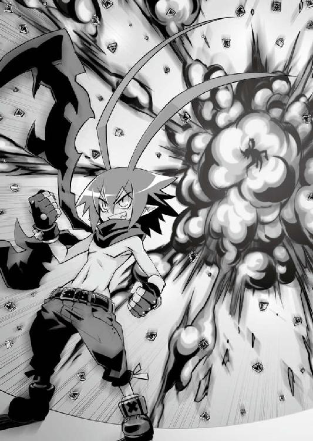
世界の揺れが収まったとき、そこに残っていたのはオレさまと最後の一つのジオシンボルであった。
「最後の一個のジオシンボルはどんな効果だ？ まだオレさまに抵抗して見せるか？」
「け、経験値＋一〇〇％です......」
これはいい！ こいつを倒せばさぞかしオレさまもパワーアップできることだろう！
「ただのオブジェクトが思い上がって魔王を超えようとなどするからこうなるのだ！ おとなしく元の単なるジオシンボルに戻るがいい！ くだけろ......ッ、魔王玉ッ!!」
「で、でも、本編にもジオブロックマンっていうボツネタがあったらしい（本当）んだぞ！ ......って、うぎゃーーーっ！！！！！！！！」
見苦しい断末魔を上げながら、最後の意識を持ったジオシンボルはオレさまの魔王玉によって粉々に砕け散った。
取り込まれていたアクターレの魂は弾き出され、もういとど肉体を形成してそこに倒れ伏す。
もはやあたりにジオシンボルの影響はどこにもなく、ただアクターレが一人倒れているばかりだ。あれだけ滅茶苦茶な目にあってもこいつ生きているぞ。本当に殺しても死なないやつだな！
活動を停止していたジオシンボル兵も、ばらばらと崩れてただの背景へと化して行く。
この戦いで数千万のジオシンボルが破壊されたが、それらはまたいつのまにか増えて、魔界や天界、人間界やアイテム界にも溢れていくことだろう。
散らばったジオシンボルの欠片がまだカタカタと震えている。オレさまにはどこからかシンボルたちの声が聞こえるような気がした。
「わ、我々は......」
「なんだ、まだ言いたいことがあるのか。もうじきキサマたちはただのオブジェクトに戻る。なんでも言ってみろ。オレさまが聞いてやる」
これかもオレさまたちは戦いの中で、日常の中で何気なくジオシンボルを投げ飛ばしたり叩き壊したりするだろう。そのとき、たまにこいつのことを思い出すこともあるだろうか。
「我々は......、融合したアクターレの功名心に引きずられて、下克上を目指してしまった......。本当は、ただのジオシンボルで良かったんだ......」
「フン......」
カケラは次第に力を失い、ただの石ころと化して行く。こいつ自身が望まないなら、もうこのようなことが起こることは無いだろう。
観察の最中に攻撃を仕掛けてきたり、自分から積極的に襲ってきたりとボスの作法がわかってないヤツだと思っていたが、それにもこいつなりの考えがあったのかもしれない。
ようやく魔王城へと帰ってきたことを実感するオレさまには、なんとなくジオプライマルの気持ちがわかる気がするのだ。
「お前はオレさまに執拗に戦いを挑むことが、自分の本来の場所へと帰る道だと、わかっていたのかもしれんな......。フン！」
この魔界だけでなく、ヴェルダイムや邪悪学園、地獄、クリストの居たどこかの魔界、それからオレさまのまだ知らない無数の魔界でも、ジオシンボルやジオブロックはただのオブジェクトにもどって行ったことだろう。
戦いは終わったのだ。
鮮血のように赤いマントをバサリと翻し、オレさまは魔王城へと凱旋する。城は半壊こそしていたが、オレさまを迎える配下どもの顔は明るかった。
「ハァ〜ッハッハッハッ......！ 魔王ラハール様の凱旋だ！」
本来の時間の流れでは、オレさまは魔界の危機を救って英雄となったというが、すでに魔界の危機を救ってしまったではないか。ジオプライマルを倒したことでパワーアップもした気がするぞ。
自らの居城へと踏み込もうとしたところへ、ちょこちょこと小さな姿が駆け出してきてオレさまを迎える。
「そこの......ちっこい天使。お前は本当にオレさまの妹なのか？」
「うん、そうだよお兄ちゃん！ お帰りなさい！」
「フン......！ まぁいい」
これからこいつは魔王城に住むつもりだろうか。エトナとフロンも興味深々だ。
「殿下の妹なのにカワイイわね〜。ふんふん、体つきはあたしたちの味方みたいね。合格」
「シシリーさんは天使なんですよね。天使のお友達がまた増えてうれしいです」
オレさまはとりあえずシシリーが後ろを付いて来るのに任せ、オレさまたちは魔王城へと足を踏み入れる。
すると、オレさま、エトナ、フロンの三人の姿が唐突に少し変化する。
「おっ？」
「あら」
「あらあら」
オレさまはなんだか体中に邪悪な魔力がみなぎる気がするし、身長が数ミリも伸びた気がする。
エトナは体型はまったくそのまま変わりないが、コスチュームが変化した。しっぽがピンと上がり、魔力もオレさま同様、増したのだろうか。
フロンもなんとなくパワーアップしたように感じられる。そればかりではなく、胸にはたっぷりとヒーローグッズを抱えていた。買い逃したものが戻ってきたということか。無論、体型はそのままである。
「これが本来のオレさまか！ うーん、快適ではないか！」
「あたしもパワーアップしたみたいですよ、殿下！ それにしてもフロンちゃん、買い込んだわねー......」
「はい、エトナさん！ どれも二段変身の参考になりそうなモノばっかりですよっ！ これはいよいよ覚醒二段変身来ちゃいますね〜！」
パワーアップしても相変わらずな二人を見て、オレさまは何故か安心する。 かっ、勘違いするなよ!? こいつらに居て欲しいというワケでは断じてない！
ただ、こいつらまで含めてオレさまの魔界という所有物の一部だというだけだ。ただ、それだけだっ！
「魔界ってはじめて見たけど、結構ふつうなんだね。もっとぐっちゃぐちゃで汚いところだと思ってた」
「失礼なヤツだな！ ところでお前はいつここに来たのだ？」
「うーん......」
小さい天使は首をかしげる。
本来の時間ではこいつはもっと前からここに来ていたはずで、でも時間が歪んでいたからこいつはここには居なくて、でも時間が戻ったからこいつはここに居て......わからん。
「わかんない。なんかお兄ちゃんが居るのに気づいて、ちょっと呼んで見たら......気付いたらここに居たみたい」
ようするにこいつ自身にもわからんのだろう。ややこしいことをしおって。
「そっちの人たちは？ お兄ちゃんの下僕？」
恐れを知らぬシシリーは後ろのヴァルバトーゼたちにむちゃくちゃなことを言う。こいつらは比較的温厚だからいいが、相手によってはマジギレする悪魔もいるぞ。
「俺は地獄の吸血鬼、ヴァルバトーゼだ。ラハールの妹が天使とは奇妙な話だったが、真実だったのだな。さぁこれは挨拶代わりだ。イワシを喰え！」
「い、いらな......むぐぐっ!?」
迂闊なことを言ったせいで生イワシを小さな口に捻じ込まれる。生のままの青魚の風味に悶絶しているシシリーに、構わずほかの連中は話しかけた。
「アタイは魔立邪悪学園一の不良生屠ラズベリルさ！ 今度、邪悪学園にも遊びに来るといいよ。でも、アンタはちっちゃくてカワイくてサファイアが好きそうだから、来るときは気をつけなよ？」
「あたしはヴェルダイムの準せくすぃー魔神のハナコだよ。あたしにも兄ちゃん二人がいるから、ヴェルダイムに来たら会わせてあげるねー」
「僕はクリストと申します。そう......さる巨大魔界の魔王ということになっています」
三人の自己紹介に、イワシを飲み込みながらシシリーが頷いたことだった。
「むぐ、むぐ......ごく......ん！ せめてお塩振って焼いてよ、もー！ ね？ お兄ちゃん」
きらきらした目でオレさまを見おって。やりにくいことこの上ない。
「フン、まぁそうだな」
魔王城は今までに見たことの無いほどに崩壊しているが、先ほど戦いを終えたばかりだというのにプリニーどもや他の悪魔たちが忙しく立ち働き、早くも瓦礫の撤去が始まっていた。
せめて瓦礫ぐらいは片付けねば、戦勝祝いもできんからな。オレさまの配下ならこれぐらいの働きは当然のことだ。
もっとも、どこの魔界も再建が忙しいだろう。祝いはこの魔界だけでやることにしよう。せっかくだからゼニスキーやマデラスたちも呼んでな。
オレさまの玉座がある謁見の間へと歩きながらも、ずっとシシリーはオレさまの隣にぴったり寄り添って歩いてくる。その上、何度も楽しげにオレさまの顔を見るのだ。
なんなのだ、この......妹というヤツは！
ハナコはもっとアデルにそっけ無いではないか。そのうち、あの赤毛と連絡を取って妹の教育というものについて教えさせねばなるまい。
「ところで、お前はなんで魔界に来たのだ？」
きらきらした視線に耐えられず、興味もないことを聞いてみる。
「シシリーだよ。お兄ちゃん。シ・シ・リー」
「フン、わかっている！ なんで魔界に来たのだ！ ......シシリー」
やりづらいことこの上ない！
「魔王になるためだよ。そうそう、これ用意してきたんだ......、これ！ あたしの手作りプリニークッキー！ これと魔王の座、交換して？」
「できるかっ！」
「え〜、手作りなのに」
馬鹿馬鹿しい物言いをぴしゃりと言い捨てつつ、オレさまは玉座へと深く腰掛けた。
玉座から改めて見上げれば、かなりの部分の天井が無くなり、魔界の空が見えている。再構築にはかなりかかるだろう。
最上階のオレさまの寝室は無事だろうか？ オレさまは自分のベッドでないとなかなか寝付けないタイプなのだが......。
「ん？ そこの赤いマント」
ふと見れば、謁見の間になんとなく見覚えのある赤いマントが落ちている。幼い頃に見たもののような......？
「えっ、殿下これって」
エトナにも見覚えがあるようで、ますます疑問は深まる。
「まさかな。そんなことはあるまい。時間の歪みでおかしなものが出て来ただけだろう。ふむ......、倉庫にでも放り込んでおけ」
忘れよう。今はそれよりせねばならないことがある。
「ですよねー。いやーそれにしても、今回も大変でしたけどなんとかなりましたねー殿下。いやーよかったよかった」
妙にわざとらしく、エトナがはっはっはと笑う。そういえばこいつ、何か隠し事をしているのだったな。
「......ふー、これであたしたちの計画はバレずに済んだわね」
「何か言ったか、エトナよ」
「いえいえ、なーんにも！」
そのあたりの追求も、また後にしておいてやろう。少なくとも今回の事件の発端ではなかったのだからな。
オレさまの謁見の間に全員が揃ったところで、ハナコが一歩よろめいて、ラズベリルがその肩を支える。こいつはジオプライマルに酷い一撃を喰ったのだ。
「ハナコ、大丈夫かい？ アンタがやられるなんて敵も相当のモンだったね。ジオプライマルはもう居なくなっちゃったけど、ヤツもアタイの強敵として心に刻まれたよ......！」
「回復して貰ったからもう大丈夫だもん。パパとママもそろそろ復活したかなー」
さっきシシリーにイワシをむりやり食わせたヴァルバトーゼはというと、ジオプライマルから剥がしたパネルの一つを運び込んできていた。
「見ろッ！ イワシがどんどん増えていくぞ！」
こいつに渡してはならんものを渡してしまったのではないか。ジオプライマルめ、厄介な置き土産だ。
「無限に増やしすぎてイワシを宇宙に捨てに行くようなハメになるなよ！ ヴァルバトーゼ」
「全部食べれば良いだけのこと！ あとは鮮度＋一〇〇％のジオシンボルをどこかから探し出さねば......！」
「無いだろ......」
こいつはイワシの品種改良をやるとも言っていたし、いつかイワシ型悪魔が地獄から出てくる気がする。
というかこいつの肩書きは本っ当に「吸血鬼」でいいのか？ 間違ってないか？
「それより、クリストさんは帰らなくちゃいけないですよね。いきなり呼び出したりしてごめんなさい。助かっちゃいました」
しっぽを上げ下げフロンがぺこぺこおじぎするのを見て、クリストはご苦労なことだったとオレさまでも思う。
なにせちょっと調べ物をさせるつもりでハナコに召喚させたのに、あんなバケモノとの戦いまでやるハメになったのだから。
「いえ......、良い経験をさせて貰いましたよ。フロンさん。あなたの上司の大天使ラミネート加工トン様にもよろしく伝えてください」
「あれ、大天使様はバドミントン様じゃなくてラミン......」
しかもこいつは別で戦いの最中だったのだろう。あっちでも魔王集団と一緒に旅をして史上最強の敵と戦っているとか洩らしていたな。
こいつがどんなヤツと組んでいたのかはしらんが、クリストの能力ならさぞ重宝されることだろう。
「お前は帰ってまたすぐ戦いか。大変だな。もう帰るのか？」
「そうですね。急いで帰る必要はありますが、しばらくは体を休めるため、あっちでは軽く手を抜かせてもらいますよ」
手ぶらで召喚されたので、帰り支度などは特に無い。
帰り道は......、オレさまの移動リングで送り返してもいいが、呼び出したハナコの術で返したほうが確実に元の場所に戻れるだろう。ハナコもすでに準備を始めていた。
「じゃあ、あたしの送喚術で帰らせてあげるね。じゃーん、携帯用・お帰りツボー。ぱぱぱぱ〜♪」
呼び出した時よりはややコンパクトなツボをどこからとも無く取り出し、ハナコは謎の液体を煮立て始める。
「うんにゃらかんにゃら〜、お帰り魔法〜」
適当としか思えない呪文を唱えながら、液体の中にぽいぽいと放り込むあの触媒は何でもいいのか？ こんどはエトナのぱんつなど混じっていたようだが......。
「ラハールさん、あなたがたは悪魔にもいろいろな考えを持った者がいると教えてくれました。これは僕にとって新しい発見でしたよ」
「何が新しい発見だ。お前の周りの悪魔だっていろいろ居るだろう」
今回の戦いの途中でも、こいつはときどき妙なことを言った。隠し事があるのだろう。
だが、構わんことだ。
「ふむ、そう......ですね」
クリストは少し俯いて、一人考える。
悪魔のことはもちろん、自分が今まで理解しなかった自分の周囲の愚鈍な者たちのことを想起していた。
今回のことで多くを理解したとクリストは感じている。自分は、このおかしな悪魔たちとであったことで何かが変わっただろうか。
ともかくもあちらでの戦いを終わらせて、いち早く濡れ衣を晴らし、そして。
故郷へと帰らねばならない。その折には、今までと違ったやり方で自分は立ち働いていくことができるはずだと、そう感じていた。
なんとなくクリストは自分の正体を明かしてしまいたくなる。
通常ならもう、この者たちと会うことは無いだろうし、明かしてしまったところで困るものではないだろう。
ラハールの妹とフロンを見ても思う。今さら自分の正体が知れたところで、彼らの態度が変わる理由もない。
こんなことを考えること自体クリストの変わった証左なのだが、クリスト本人がそのことに気付くのはもう少し先のことだ。
しばらく俯いていたクリストは何かを決心したように顔を上げる。
「それから......、帰る前に僕はひとつ白状しなければなりません。あなたがたに正体を偽っていましたが、実は僕は......」
「いらん」
秘密を明かそうとするクリストをオレさまは遮った。
それを聞いたところでなんになる。こいつはもうオレさまたちとは関わることなど無かろうと考えているんだろうが、オレさまはまた便利にお前を召喚するかもしれんぞ？
「お前はただの魔王クリストだ。猿巨大魔界の魔王クリスト。オレさまたちにとってはそうだ。それで構わんだろう？」
「猿、ではないのですが......。まあ、ふふふ、ラハールさんがそう言うなら、心に秘めて置きましょうか」
屈託無く笑ったクリストに向けて、フロンが一輪の花を差し出す。
かつてフロンが天界に対して叛逆の大罪を犯したとき、ラミントンによって花に変えられてしまったことがあった。花はそのユイエの花だった。
「ほんとはもっとちゃんとしたお礼をしたいんですけど、今はこの通り魔王城もボロボロなので。これ、お礼の代わりです」
差し出されたユイエの花を軽く香り、クリストは掻き抱くように受け取る。
「美しい花ですね。花の名は？」
「わたしの大好きな花で、ユイエの花って言うんです。本当は天界にいーっぱい咲いている花なんですが、わたしががんばって魔界で咲かせたんですよっ」
いつのまにそんなもの育てていたのだ。勝手に花壇など作ったのか、しょうがないヤツ。
前は魔界では咲かないと嘆いていたクセに、咲いているではないか。
「天界に......そうですか。ありがとうございます、気に入りましたよ。いつか故郷に帰ったら、わたしもこの花を育てて、故郷一面に咲かせてみようと思います」
「はい！ きっと故郷のみなさんも気に入ってくれますよっ」
やりとりを交わしている間にも送喚術の準備は整ったようだ。得意げな顔で鼻先をツンと上に向け、ハナコが怪しげな液を煮立てたツボを示してみせる。
「これに入って」
「入るのですか......？ 相当コワいですけど」
「だいじょぶだいじょぶー、えいっ！」
ごく軽い口調で言うやクリストの背中をツボの内へと蹴り込んだ。
「うあっ！」
儀式はちゃんと成功していたようで、クリストはおかしな叫びを一声残して煙と掻き消えてしまった。あとにはかすかな光がちらつき、ひらひらと一枚の純白の羽が舞うばかり。
この儀式、たぶん失敗してたらクリストの毒液煮込みが完成していたと思うと、ハナコの胆力が凄いというか適当というか、怖ろしい。
こいつはこいつで相当問題がありそうなので、本気でオレさまは赤毛と妹対策会議を行うべきだと思う。
「ハァ〜ッハッハッハッ......！ オレさまも帰ってきたぞ！」
これはオレさまの高笑いではない。
ちょうど入れ違いに、Ｍラハールが自前のゲートを通って戻ってきたのだ。大方、さっきまで邪悪学園でジオシンボル兵と戦っていたに違いない。
学園のことも気になるだろう、一番に寄っていったのはラズベリルだ。
「おかえりＭラハール、そっちも大丈夫だったかい？」
「うむ！ 邪悪学園はツワモノが沢山揃っていたからな！ おおっ、皆なんだかパワーアップしているではないか！ さらにこのちびっこ天使は誰だ？」
Ｍラハールの存在は複雑なので、後でまた聞かせてやるとしてシシリーとの自己紹介はオレさまが代わりに簡単に済ませておく。
「こいつはシシリーだ。オレさまの妹でついさっき来た」
「妹だとっ！ 妹が居たのか！ カワイイな、こいつは！」
間髪居れずＭラハールを指差し。
「そしてこっちはＭラハールだ。オレさまの分身だ。シシリーにとっては姉みたいなものだな」
「あたしにお姉ちゃん居たの!? わー、なんか嬉しい！」
話が長くならんように、話題を逸らす。そうだ、マオのことを聞いておこうではないか。
ヤツめ、どうしてあのような奇怪なムチムチジオブロックを作ったのだ。ヤツがもしムチムチ推進派だというのなら、オレさまはいずれヤツと戦わねばならん。
「Ｍラハール、マオはどうしていた？ 仮にも魔王がジオシンボル兵の百や二百に遅れを取ることはないだろうがな」
「フン！ 余裕で邪悪学園を守り、壊れたゲートの修復まで時間があったのでオレさまの体をいろいろ調べたぞ。怪しげな機械をつかって、体のあちこちを弄繰りまわしてな！ ちょっぴりこそばゆかったりもしたが、痛くはなかったぞ！」
当人にその気はないのだろうが、なんだかえっちっぽく感じる説明だった。
お子様のハナコとシシリーは良く分からなくても、エトナはニヤニヤ笑っているし、フロンはギラギラと目を輝かせている。
なまじマオのことを良く知るだけに生々しい想像をしてしまったのか、ラズベリルなど顔を真っ赤にしていた。
「あ、アイツ......い、いやらしいことをしたんじゃないだろうね！ いくら優等生だからって！」
「クックック......ハァハァと息を荒くしながら、『最高だ！ キサマの肉体は最高に興味深い！』と言っていたぞ」
たしかにヤツはよく怪しげな目つきでハァハァと息を荒くする。それはラズベリルにも分かっているはずなのに、タイミングがタイミングだけに誤解を募らせた。
「あっ、アタイは帰るよ！ ちょっとマオに問い質したいことがあるからね！ おっと止めないでくれよ!? これはアタイとマオ、幼馴染同士の問題だからっ!!」
しっぽを振りたて早口でまくしたてながら、時空の渡し守のもとへすっ飛んで行ってしまう。
「あの二人も、意外といい感じなのかもしれないわねー。フロンちゃん」
「そうですね......！ 世の中には、愛が......愛が溢れているんですねっ！」
エトナとフロンはいよいよニヨニヨと気持ちの悪い笑みを浮かべていた。
「お前は帰らなくていいのか？ ヴァルバトーゼ」
「地獄がジオプライマルの襲撃を受けたのは、三週間前ということになる」
ややこしい話だが、確認しよう。
オレさまたちは普通に地獄に向かってヴァルバトーゼと合流し、それからヴェルダイム、邪悪学園を経てアクターレ同士の衝突を防ぐために、三週間前の地獄へと飛んだ。
そこでジオプライマルの襲撃を受けたのである。
つまりヴァルバトーゼが地獄に戻れば、そこは三週間前の被害を修復している最中の地獄ということになるわけだ。
ヴァルバトーゼは一心にジオシンボルを見つめながら言葉を継ぐ。
「しかし今！ 俺は非常に重要な問題に立ち向かっているのだ。ジオパネルによるイワシの増殖！ パネルによって物体を増殖させることなどできないはずが、この突然変異的なパネルはイワシの増殖を俺の目の前で今！ 行っているのだ!! わかるか!!」
わかってたまるか。
そこに時空ゲートを通ってやって来た者がある。フェンリッヒだ。
問題が片付いたらしいにも関わらず、いつまでも戻ってこない主に痺れを切らして回収しに来たのだろう。面にあらわれた態度は慇懃そのものだが、小刻みに振れるしっぽを見ても明らかに怒っていた。
「地獄の建造物の被害は未だ深刻です。閣下、もう遊んでいる場合ではないのですよ。さぁ戻りましょう。仕事が山積みです」
「ま、待てフェンリッヒ！ 俺は今、イワシを増殖させる偉大な発見を！」
いつもは閣下閣下と懐いているが、こいつはやることはやる奴なのは前にも見た通り。
イワシ増殖パネルに興奮するヴァルバトーゼの首根っこをむんずと掴み、ずるずると引きずっていこうとする。
それにしても地獄の精勤な労働力を以ってしても三週間経ってもまだ再建中とは、本当に大被害だったのだろう。これは奴らも忙しそうだ。
「話はあとで聞きましょう。さぁ、帰るのです！」
「待て、待つのだッ！ せ、せめてあの奇跡のジオシンボルだけでもッ！」
ばたばたと両手でもがきながらも、吸血鬼（？）は時空ゲートの彼方へと連れ去られていった。
置き去りにされたジオシンボルの傍ら、イワシがにょきっと一匹増える。これは、どうしたものか......。
クリストにラズベリル、ヴァルバトーゼまでが自分の魔界へと帰っていくと謁見の間はいささか静かになった。
実際にはシシリーとＭラハールが増えているので、さほど人数は変わらないのだが。そこはなんとなくの問題だ。
あと、別魔界の者でここに残っているのはハナコだ。
「ハナコちゃんはどうするの？」
「実はこのまま魔神になるための武者しゅぎょーに出ようかなって思ってたんだけど、ちょっと帰る」
エトナが問い掛けると、ハナコはぐぐっと伸びをしながら答える。珍しくしおらしげな調子だった。
どうしたものかと目で問い掛ければ、らしくない答えが返ってくる。
「ラハールとシシリー見てたら、兄ちゃんに会いたくなったから」
ヤツの兄二人と両親は邪悪学園の保健室に居たはずだが、ラズベリルが戻ればちゃんとヴェルダイムへと送り返していることだろう。
そういえばヴェルダイムはアデルにロザリンド、ハナコとタローまで出ていてオレさまの魔界と変わらぬぐらい手薄だったはずだ。あちらは田舎だから地獄ほど再建せねばならない建物はないだろうが、それでもしんどい作業が待っているに違いない。
「フン！ では赤毛に伝えておけ。あとで話があると」
「うんっ！」
「それじゃあハナコさん、ご家族にもよろしく伝えてくださいね〜」
フロンに手を振られながら、ハナコも時空の渡し守を通じて自分の家へと帰っていった。
さて、もう一人別魔界のものが残っているのを思い出した。
「殿下、これどうするッスか？」
ずるずるとプリニーどもが引きずってきたのは、完全に伸びたままのアクターレだ。
オレさまはわざわざ玉座を立って、そいつの顔をまじまじと確認する。意図に気付いてフロンたちも一緒にアクターレを観察した。
「なあ、こいつどっちのアクターレだと思う？」
地獄にて、獄長と自称ダークヒーローの二人のアクターレが衝突、融合して片方だけがそのまま地獄に倒れた。
片方は魂の状態でジオプライマルに取り込まれ、ヤツを倒したあとに排出されたのがこいつ。
さて、こいつは獄長か自称ダークヒーローか、どっちだ？
「区別つくんでしょうかー？」
「あちゃー、ヴァルバトーゼかハナコちゃんに聞いとけば良かったですねー」
「誰これ？」
地獄での衝突事故のときにも見たが、見た目は両者のアクターレもまったく同じに見える。同じ人物なのだから当たり前なんだが。
「ならば仕方ない。殴って起こすか」
魂としてジオプライマルの体内に居たときに一緒にダメージを受けたのか半死半生だったが、あれだけボコボコにされて生きてるのならあと何発か殴っても死なんだろう。
「こらッ！ 起きろ！ くたばれっ！」
「オラッ！ 起きろ！ 死ねっ！」
「えいっ！ 起きてくださいっ！ かにみそっ！」
「なんだかわかんないけど、起きろっ！ くたばれっ！」
意識の無いアクターレをシシリー含め四人がかりでガツガツ殴る。すると、顔面が相当変形したあたりでようやくアクターレは目を覚ました。
「い、痛......い......！ お、オレ様はいままでいったい何を......!?」
「そんなことはどうでもいい。お前は自称ダークヒーローか獄長かどっちだ？」
問い掛けると、ボロボロであったはずのアクターレは瞬時に立ち上がってカッコつけたポーズを決めた。
「フッ、オレ様こそ全魔界で大人気のダークヒーローにして泣く子も黙る地獄の獄長、アクターレ様だっ！」
「だまれ」
顔面にグーをめり込ませつつ、獄長であるということを知ってるなら獄長アクターレであると判断する。もう話を聞く必要はない。
だいたいジオプライマルにこいつの喋り方でさんざん煽られて、もうこいつの口調は聞きたくないのだ。
ではこいつは地獄に送り返して、地獄で倒れてワープでどこかへ飛ばされたほうのアクターレはヴァルバトーゼに連絡を入れヴェルダイムに送らせよう。それで解決だ。
「んじゃ、配送しますねー」
「しっかりガムテープでとめときましたっ」
フロンとエトナによって瞬く間にガムテープぐるぐる巻きにされたアクターレが、時空ゲートに放り込まれようとする。
こいつの喋りはしばらく聞きたくないところだが、送り返す前にちょっとまだひとつ尋ねたいことがあった。
「その前にひとつ聞きたい」
今回の件で疑問だったところだ。何せこいつだけが旅暮らしではなく転居をした悪魔で、しかも理由がわからなかったヤツだからだ。
「お前はどうしてヴェルダイムから転居したんだ？」
するとぐるぐる巻きの状態でもアクターレはムリにポーズを決めて見せた。
「ヴェルダイムなんて辺境のド田舎で収まっていられるほど、オレ様の器は小さくないんだぜ！」
「だまれ」
顔面にぐーを五センチくらいめり込ませる。
その陥没した顔面から、くぐもった声が続いた。こいつ実はゾンビか何かか。
「お、オレ様の故郷はさらにヴェルダイムとは別のところなんだよ。そこには母ちゃんと弟のアクタレオが住んでるんだ......。アクタレオはオレ様が落ちぶれちまったあとでも、ずっとダークヒーロー・アクターレの活躍を信じて心待ちにしていて、その期待に......いやいや、それだけじゃねえっ！ 全魔界のアクターレ・ファンの期待にオレ様は応えなくちゃいけないんだ！ そのためにはっ！ まず地獄の獄長ってオイシイポジションでガッポガッポ稼いでコネを作ってだな......」
「だまれ」
顔面のグーをさらに五センチほど押し込む。
たいしたことは分からなかったが、こんなもので十分だ。ただの興味から聞いたことなのだから。
「もういい、送り返していいぞ」
「はーい」
二人はポイポイと荷物をキャッチボールしてから、時空ゲートへと叩き込む。あとは地獄の連中が煮るなり焼くなり好きにするだろう。
ともかく。結局、こいつも故郷のために行動していたということだ。
それで十分だ。
「ねー、お兄ちゃん。さっきの誰？」
「バカだ」
「へ〜。あれがバカかー」
あとはオレさまはヴァルバトーゼに連絡を入れて、そっちのアクターレを発送するように言わねばならん。連絡ゲートに向かうオレさまにシシリーがちょこちょこと付いて来る。
イワシ増殖シンボルのことも少し気になったが、これはヘタにヤツに渡さないほうがいいだろう。
ラハールとシシリーが連絡用の小ゲートに向かったあとの謁見の間。
フロンがするすると糸を手繰り寄せ、魔界糸でんわの存在がバレないように回収しており、エトナはプリニーを見張りに立ててラハールが戻ってくるまでのタイミングに密談を行おうとしていた。
事件は解決したが、彼女らの秘密計画はまだまだ続いているのだ。
二人は自分の胸のあたりをさすりつつ、苦しげな顔をする。
「本来の現在ってのに来たわけだけど、フロンちゃん......膨らんだ？」
「うーん......！ わずかに膨らんだような、そうでもないような......」
実際には半ミリたりとて成長はないんだが、希望的観測が手の平の触覚を惑わせている。
二人は二度に渡ってラハールの胸部がぼーんと瞬間的成長するのを目撃した。しかもラズベリルの話によると、マオたちも瞬間的成長を遂げたという話である。
とすると、我らの悲願が達せられるのはもはや目前ではないかと期待せずにはいられない。
「コードネームＭさんの作ったジオブロックって、あのジオプライマルさんの中に含まれてて壊しちゃったんですよね」
「でも元々、次のを作る予定だったんでしょ？ それは問題ないんだけどさ」
一応の補足をしておけば、エトナ、フロン、ラズベリル、ハナコの四人による秘密計画とは、当然、彼女らの平面的な胸部をムチムチ形状に大変形させることが目的である。
「問題はマオの作ったジオブロックって、あそこのイワシ増殖シンボルとおんなじでジオプライマルの影響で出来た突然変異ブロックだったんじゃないかってこと」
「ありえますね〜。もしそうだったら、マオさんの研究はまだまだ時間がかかっちゃうのかも」
本来、できるはずのないものが出来てしまった可能性は十分にある。あのムチムチブロックは再現不可能な奇跡の逸品だったかもしれないのだ。
壊してしまったことは、目から血が出るほど口惜しかった。
さらに問題がある。計画の継続が必要となると、秘密の維持もまた必要なのだ。
「今回の件で殿下はマオにあのブロックのこと聞くだろうから、うまく誤魔化す手を今のうちに考えとかなくちゃ」
「シシリーさんはわたしたちの仲間だから、うまく頼めばラハールさんも言うことを聞いてくれるかもしれませんよ」
先ほどまでのほんの一幕でも、ラハールが妹を苦手としているさまは見て取れた。
二人はしっぽを波打たせ、実に悪い笑みを浮かべる。「お願い、お兄ちゃん」と甘い妹ボイスで頼まれれば、さしもの魔王ラハールもこの計画を黙認するかもしれないというわけだ。
この思いつきは非常に素晴らしいものに思えた。
シシリーは自分たちと同じく平面体型だし、女なら誰しもムチムチを求めるものだ。ムチムチ力は女のヒエラルキー基準とさえ考えている。
きっとシシリーは計画に一枚噛んでくれるはず。そして妹を使ってラハールを丸め込めば、もはやこの計画を邪魔するものは居なくなるのだ！
「フッフッフッフ......！」
「ふっふっふっふっふ......！」
思わず含み笑いが漏れる。
計画成功の明るい未来を信じた二人は、今ひとたび、魂の姉妹の誓いを交わすことにした。
「すべてはあたしたちの理想のために！」
「すべてはわたしたちの理想のために！」
そのような怖ろしい計画が動いていることなど露知らないオレさまは、ヴァルバトーゼに事務的な連絡を済ませるところだった。
「......というわけだ。アクターレの発送を頼むぞ」
通話を終えようとして、オレさまは思い出して独り言を言う。
「そういえば事件の発端、オレさまがムチムチになっていたのはなんだったのだ？ ジオプライマルと戦っているときにもなってしまったが、あれはマオが作ったと言っていたが......？」
「なんの話？」
シシリーはなんでも知りたがる。
「おかしな事件があったのだ。ちょっと待て、ヴァルバトーゼに聞いてみよう」
通話用の小さいゲートにもう一度呼びかける。幸い、ヴァルバトーゼはまだ通話ゲートの側に居たようだった。
『どうしたラハール。イワシ増殖パネルのことなら、フェンリッヒが怒るからしばらく預かっておいてくれ』
「それはどうでもいいが。エトナたちが企んでいた何かの計画、あれについては何か分かったか？」
『その話か。調査結果を送る』
連絡ゲートの向こうからするすると細長い紙が送り込まれてきた。シシリーが引っ張り込んで、オレさまと一緒に内容を読んでみる。
そこには、クリストの千里眼による調査とプリニー諜報部隊による調査の結果をまとめたものがしたためられていた。
曰く、二人はひそかに豊胸のため、分身であるはずのラハールとＭラハール体の差異を探っていたという。性別が違うといっても、分身ならＭラハールだけがあそこまでムチムチになるのはおかしいと。
そしてひそかにマオと通じ、Ｍラハールを実験体として送り込んでデータを集め、超邪悪魔体改造薬や超邪悪魔体改造ブロックの製造をしていたのだと！
薬品がどうしても二人の体に効果がでないので、試しにオレさまの体で実験してみたのだと！
つまりオレさまがムチムチになったのは、歴史の歪みのせいなどではなく、二人の実験のせいだったということだ！
「どうしたのお兄ちゃん、プルプル震えて」
「......オレさまは今、怒っているのだ。それも最高にな！ 来い、シシリー！ 魔王とはどういうものか、今から見せてやろうっ！」
「わーい、お兄ちゃんの魔王教室だ！」
シシリーを伴い、オレさまは謁見の間に戻るとエトナとフロンはさも何でもないかのように瓦礫の掃除を手伝っていた。
......怪しすぎる。こいつらが自分から瓦礫の掃除などしてたまるか！
「全部調べはついたぞ！ オレさまのムチムチはやっぱりキサマらのせいではないか！！！！」
「えっ、ちょっ、殿下!?」
「うわわ、ラハールさん、落ち着いてっ!?」
落ち着いてなどいられるか！ 魔王城はさらにぶっ壊れてしまうが、もはや知ったことではない！
「キサマら、くだけろッ！！！！！！」
魔王城から瓦礫を平原に捨てに行っていた下級悪魔たちは、魔王城の大爆発を見てほっと一息ついた。いつもの魔界が戻ってきたのだ。
少し瓦礫掃除の手を休めて、殺ポロビールで乾杯と行こう。
さらに二、三発、魔王城で大爆発が起こり、二人の人影が遥か上空へ打ちあがるのが見えた。そこに追い討ちの魔王玉が五、六発。
「たーまやー！」
花火見物の気分で歓声をあげ、戦いが始まる前に食べかけで放り出したおつまみをつまむ。
魔界は今日も平和だった。
〈終〉
あとがき
フェティッシュな話をさせてください。（二回目）
「オ、オレさまは、なぜか、ムチムチした体の女が大の苦手なのだ!!」
ラハール殿下がムチムチが苦手であることについて言及した記念すべき一番最初のセリフです。
この言葉、私には非常に共感できるのです。まず誤解の無いように申し上げて置くと、私は別に小さいとか幼いとかそういうワードに反応する類の人種ではなく、薄いボディそのものが良いのです。むしろオトナになって胴体が長く成長し、なおかつ平面であるほうが良いのです。
それというのも私は人間の骨格というものを非常に愛しているからで、出来ることならエトナの腸骨稜やフロンの膝蓋骨、もちろん殿下の尺骨肘頭突起なども描写したかったのです。
わかりますか？ 鎖骨のくぼみ、そしてネクタイ上の胸骨の凹凸、さらには肩鎖関節の形作るわずかな段差！
おお......おう、美しい！
ですが、これを執拗に描写するとおそらく非常にいやらしく、あるいは気持ち悪くなるのでやめておきました。
私は自重できる偉いやつですね。ディスガイアのキャラは首周りのガードが固い傾向があるので、第七頚椎がもっと見たいところですけれども。
ついでに骨格についてですが、人間の骨格と悪魔の骨格、および天使の骨格は果たして同じなんでしょうか。まったく同じ形ではないのかもしれません。
そもそも悪魔や天使に骨格など無いのかもしれません。
疑問に思い、これを書くためにまたしても調べてみましたが、悪魔の骨、天使の骨に関する伝承や、現代にそれらとされる遺物を伝えている教会等の情報は見つかりませんでした。
もしかすると存在するのかもしれませんが、少なくとも一般的ではないという見解で間違ってはいないでしょう。
そこから導き出されるのは答えはなんでしょうか。
仮に、悪魔と天使に骨格があるとしても、その骨は長い時代の保存に耐え得ないということです。長期間の保存に耐え得ないといえば、化石が少なく古代生物の生態がわかりづらい軟骨主体の生物が思い浮かびますね。
軟骨魚類といえばサメです。サメはなめらかな体でかっこいいですね。
それからエイもサメと同じく軟骨魚類の仲間です。そしてエイは英語で別名、デビルフィッシュと呼ばれているのです！
やっぱり悪魔は軟骨だった！
少々話が逸れましたが、つまり骨はいいな、平面はいいな、というお話です。
昨今は多くのメディアで「ムチムチ」のほうが持て囃される傾向が強く、しばしばぶよぶよとした脂肪によって美しい骨格が覆い隠されたヒロインが大々的に打ち出されるのですが、この傾向を殿下が見たらどれだけの怒りを覚えることでしょう。
今回、平面組の陰謀とその邪悪極まる野望に立ち向かう正義の殿下（※：主観に基づく）を横軸の物語として描きましたが、これは私の願う美しい栄光の未来への道筋でもあるというわけです。
殿下を愛するディスガイアシリーズファンの方々には、殿下の理想がより深くご理解いただけたのではないでしょうか。すなわち、ムチムチ邪悪なりということが。
皆さんも理想の未来のために、魂の兄弟姉妹としてムチムチを倒しましょう。いかに邪知暴虐を極めるムチムチ派とはいえ、総力をもって臨めば倒せぬことはないはずです。
ちょうど良いことに、作中で我々の敵たるムチムチ党の用いた誓いの言葉があります。これを流用し、未来への叫びとしましょう。
「すべては私たちの理想のために！」
衆堂ジョオ

衆堂ジョオ
執筆中に家の照明が壊れ、真っ暗な中でずっと作業していた衆堂ジョオです。これぐらい大丈夫でしょう、と思ってやってたら意外なほどやりづらく完成が遅れて迷惑をお掛けしてしまいました。
しかし本書は暗闇の中で書かれた暗黒の書なのです。暗闇より生まれ出る邪悪の書......魔界の物語にぴったりではないですか。
暗黒の執筆が生み出す悪魔たちの書、これはまさに現代の魔道書（グリモワール）だ！
......はやく照明なんとかしようと思います。
魔界戦記ディスガイア
〜史上最凶の四面楚歌〜
電子版発行 ２０１５年８月５日
著 者 衆堂ジョオ
発行者 長谷川 洋
発行所 株式会社一二三書房
〒１０２─００７２
東京都千代田区飯田橋２─14─２ 雄邦ビル
電話 ０３─３２６５─１８８１
イラスト 田島瑛一
©Nippon Ichi Software, Inc.
©HIFUMI SHOBO
本書の無断複製（コピー）は、著作権上の例外を除き、禁じられています。
●本書は『魔界戦記ディスガイア〜史上最凶の四面楚歌〜』（２０１５年６月20日 初版第１刷）に基づいて制作されました。